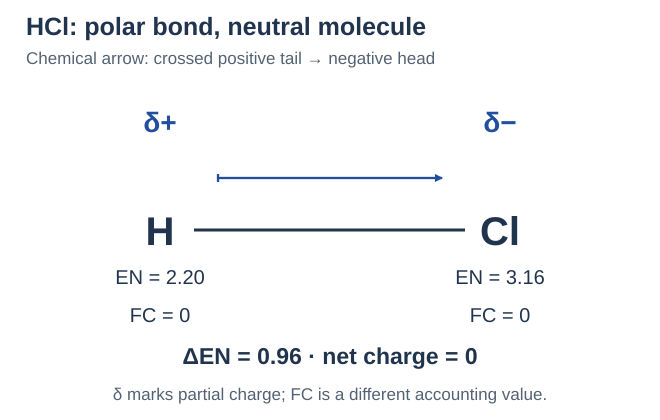
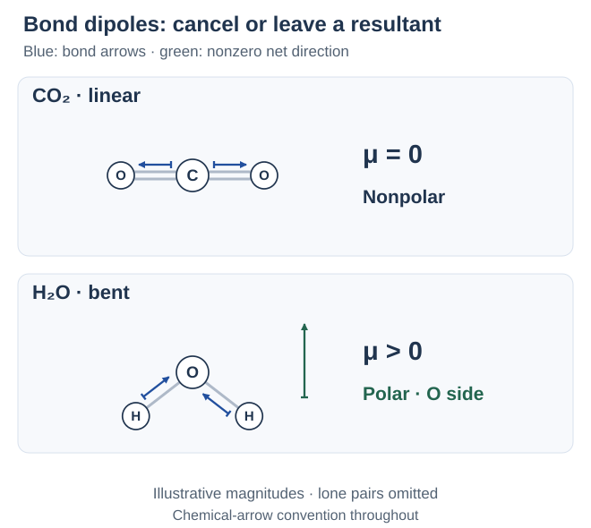
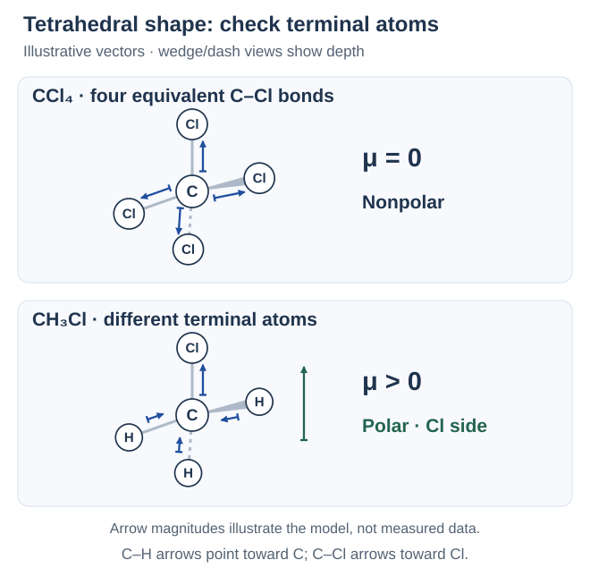
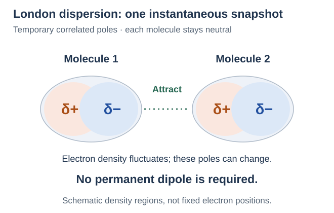
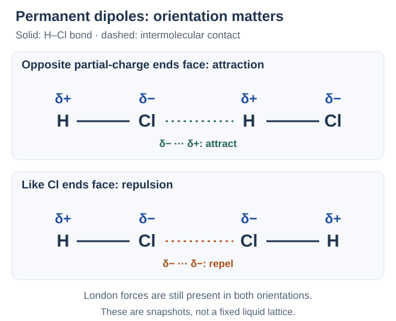
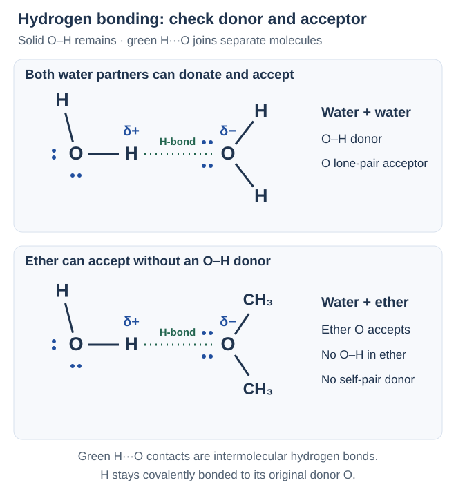
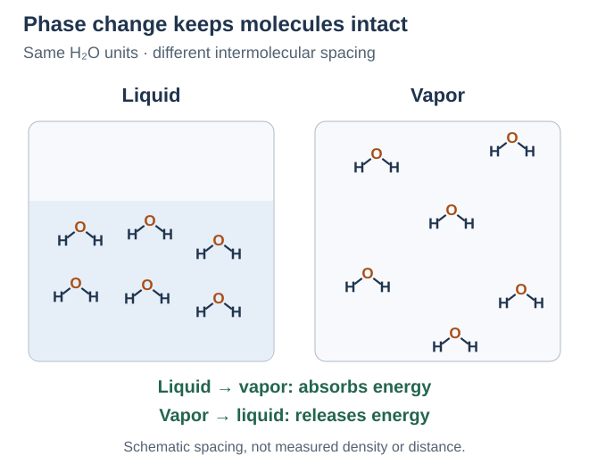
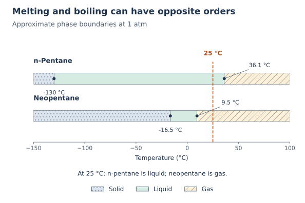
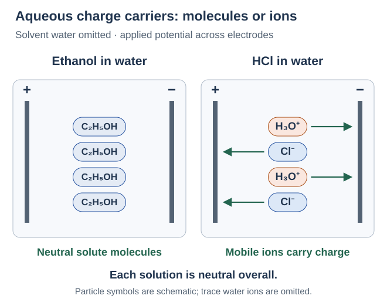

เรียนทีละช่วง แล้วลองตอบก่อนเปิดเฉลย: เริ่มจากการใช้อิเล็กตรอนร่วมกัน แล้วค่อยต่อยอดตามลำดับนี้
- อ่านสูตร เรียกชื่อ และวาดโครงสร้างลิวอิส
- นับอิเล็กตรอน ตรวจประจุฟอร์มัล และดูข้อยกเว้นของกฎออกเตต
- เปรียบเทียบความยาวพันธะและคำนวณพลังงาน
- ใช้ VSEPR ทำนายรูปร่าง แล้วดูว่าโมเลกุลมีขั้วหรือไม่
- ใช้แรงระหว่างโมเลกุลอธิบายสถานะ การละลาย และการนำไฟฟ้า
- เปรียบเทียบสารที่เป็นโมเลกุลกับสารโครงร่างตาข่าย
แต่ละหัวข้อมีคำถามทวนและพื้นที่เขียนแยกทุกข้อย่อย ลองทำให้ครบก่อนเปิดเฉลยเพื่อตรวจคำตอบ
1. การใช้อิเล็กตรอนร่วมกัน
พันธะโคเวเลนต์ ยึดอะตอมด้วยการใช้อิเล็กตรอนร่วมกัน โดยอิเล็กตรอนร่วมได้รับแรงดึงดูดจากนิวเคลียสทั้งสอง มักพบระหว่างอะตอมอโลหะ คู่ร่วมพันธะ 1 คู่มีอิเล็กตรอน 2 ตัว และเขียนแทนได้ด้วยเส้นพันธะ 1 เส้น
ตัวอย่าง H2: H คือไฮโดรเจน แต่ละอะตอมมีอิเล็กตรอนชั้นนอกสุด หรือ เวเลนซ์อิเล็กตรอน 1 ตัว เมื่อนำมาใช้ร่วมกัน 1 คู่ เขียนเป็น H–H ได้ H แต่ละอะตอมนับอิเล็กตรอนคู่นี้รอบตัวเองได้ 2 ตัว จึงเต็มชั้นแรกตาม กฎดูเอต ทั้งโมเลกุลมีอิเล็กตรอนจริงรวม 2 ตัว ไม่ใช่ 4 ตัว เพราะทั้งสองอะตอมใช้คู่เดียวกัน
คำถาม 1 — คู่เดียวกัน นับรอบสองอะตอม
ก. อิเล็กตรอนร่วมในพันธะโคเวเลนต์ถูกดึงดูดจากที่ใด และคู่ร่วมพันธะ 1 คู่มีกี่อิเล็กตรอน?
ข. H2 มีอิเล็กตรอนจริงรวมกี่ตัว แต่ละ H นับได้รอบตัวเองกี่ตัว และเหตุใดจึงไม่ต้องครบออกเตต?
ก. ถูกดึงดูดจากนิวเคลียสของอะตอมทั้งสอง คู่ร่วมพันธะ 1 คู่มีอิเล็กตรอน 2 ตัว
ข. ทั้งโมเลกุลมี 2 ตัว แต่ละ H นับอิเล็กตรอนร่วมคู่นี้ได้ 2 ตัวรอบตัวเอง เพราะ H ใช้กฎดูเอต เปลือกแรกเต็มที่ 2 ตัว ไม่ใช่ 8 การนับรอบทั้งสองอะตอมไม่ทำให้มีอิเล็กตรอนเพิ่ม
2. ระยะระหว่างอะตอมกับพลังงานของพันธะ
อ่านกราฟจากด้านที่อะตอมอยู่ห่างกันมาก โดยกำหนดพลังงานศักย์ตรงนั้นเป็นศูนย์ เมื่ออะตอมเข้าใกล้กันในช่วงที่แรงดึงดูดมากกว่าแรงผลัก พลังงานจะลดลง จุดต่ำสุดของกราฟคือ ระยะสมดุลของพันธะ ที่ระยะนี้แรงดึงดูดกับแรงผลักสมดุลกัน จึงมีแรงลัพธ์เป็นศูนย์ในแบบจำลอง
ถ้าบีบอะตอมให้เข้าใกล้กว่านั้นมาก แรงผลักระหว่างนิวเคลียสและระหว่างอิเล็กตรอนจะมากขึ้น พลังงานจึงสูงขึ้นอีก อะตอมจึงไม่ได้เสถียรที่สุดเมื่ออยู่ใกล้กันที่สุด
จำคู่กัน: สร้างพันธะจากอะตอมที่แยกกัน → คายพลังงาน; สลายพันธะเดียวกันให้เป็นอะตอมแยกกัน → ใช้พลังงาน ส่วนปฏิกิริยาทั้งหมดคายหรือดูดพลังงาน ต้องรวมทั้งขั้นสลายและขั้นสร้างพันธะ

คำถาม 2 — อ่านกราฟก่อนท่องจำ
ก. ตำแหน่งใดบนกราฟเป็นระยะสมดุลของพันธะ และมีพลังงานสูงหรือต่ำกว่าอะตอมที่แยกห่างกันมาก?
ข. ถ้าบีบอะตอมให้ใกล้กว่าระยะสมดุลมาก พลังงานจะเปลี่ยนอย่างไร เพราะเหตุใด?
ค. การสร้างพันธะจากอะตอมที่แยกกันกับการสลายพันธะให้แยกจากกัน ขั้นใดคายและขั้นใดรับพลังงาน?
ก. ตำแหน่งพลังงานต่ำสุด เป็นระยะสมดุลและมีพลังงานต่ำกว่าศูนย์อ้างอิงของอะตอมที่แยกห่างมาก
ข. พลังงานสูงขึ้น เพราะแรงผลักมีผลมากขึ้น ทั้งระหว่างนิวเคลียสกับนิวเคลียสและระหว่างอิเล็กตรอนกับอิเล็กตรอน จึงไม่ใช่ว่ายิ่งใกล้ยิ่งเสถียร
ค. สร้างพันธะคายพลังงาน ส่วนสลายพันธะต้องรับพลังงาน ต้องรวมทุกขั้นจึงจะตัดสินพลังงานสุทธิของปฏิกิริยาได้
3. คู่ร่วมพันธะ คู่โดดเดี่ยว และชนิดพันธะ
คู่ร่วมพันธะ ใช้ร่วมระหว่างสองอะตอม ส่วน คู่โดดเดี่ยว คืออิเล็กตรอนเวเลนซ์หนึ่งคู่ที่ไม่ได้ใช้ร่วมสร้างพันธะระหว่างอะตอม ในภาพลิวอิส จุด 1 จุดแทนอิเล็กตรอน 1 ตัว และเส้นพันธะ 1 เส้นแทนคู่ร่วม 1 คู่
สัญลักษณ์ที่ใช้เพิ่มคือ O = ออกซิเจน และ N = ไนโตรเจน พันธะเดี่ยว–คู่–สามใช้ร่วมกัน 1, 2, 3 คู่ ตามลำดับ ไม่ได้บอกจำนวนอะตอม
| ตัวอย่าง | คู่ร่วมพันธะและคู่โดดเดี่ยว |
|---|---|
| H2: H–H พันธะเดี่ยว | คู่ร่วม 1 คู่ (2 อิเล็กตรอน); ไม่มีคู่โดดเดี่ยว |
| O2: O=O พันธะคู่ | คู่ร่วม 2 คู่ (4 อิเล็กตรอน); O แต่ละอะตอมมีคู่โดดเดี่ยว 2 คู่ |
| N2: N≡N พันธะสาม | คู่ร่วม 3 คู่ (6 อิเล็กตรอน); N แต่ละอะตอมมีคู่โดดเดี่ยว 1 คู่ |
| H2O: พันธะ O–H เดี่ยว 2 พันธะ | คู่ร่วมรวม 2 คู่; O มีคู่โดดเดี่ยว 2 คู่ รวมเวเลนซ์อิเล็กตรอน 8 ตัวทั้งโมเลกุล: 4 ในพันธะ + 4 ในคู่โดดเดี่ยว |

คำถาม 3 — นับคู่และนับอิเล็กตรอน
ก. H2, O2 และ N2 มีคู่ร่วมระหว่างอะตอมกี่คู่ และมีอิเล็กตรอนร่วมกี่ตัวตามลำดับ?
ข. O แต่ละอะตอมใน O2 และ N แต่ละอะตอมใน N2 มีคู่โดดเดี่ยวกี่คู่?
ค. วาดลิวอิส H2O ให้เห็นคู่โดดเดี่ยว แล้วนับคู่ร่วม คู่โดดเดี่ยว และเวเลนซ์อิเล็กตรอนรวมทั้งโมเลกุล
ก. ตามลำดับมี 1, 2, 3 คู่ หรือ 2, 4, 6 อิเล็กตรอน จึงเป็นพันธะเดี่ยว คู่ และสาม แต่ทุกโมเลกุลในข้อนี้ยังมีอะตอม 2 อะตอม
ข. O แต่ละอะตอมมี 2 คู่ ส่วน N แต่ละอะตอมมี 1 คู่ คู่โดดเดี่ยวเหล่านี้ไม่ได้เพิ่มจำนวนคู่ร่วมพันธะ
ค. O เชื่อม H สองอะตอมด้วยพันธะเดี่ยวและมีคู่โดดเดี่ยว 2 คู่ จึงมีคู่ร่วม 2 คู่ (4 อิเล็กตรอน) กับคู่โดดเดี่ยว 2 คู่ (4 อิเล็กตรอน) รวม 8 ตัวทั้งโมเลกุล
4. สูตรโมเลกุลกับสูตรอย่างง่าย
สูตรโมเลกุล บอกว่าใน 1 โมเลกุลมีธาตุใด อย่างละกี่อะตอม เช่น N2O4 มี N 2 อะตอมและ O 4 อะตอม ถ้ามี 1 อะตอมจะไม่เขียนเลขห้อย 1
สูตรอย่างง่าย บอกอัตราส่วนจำนวนเต็มที่ย่อจนต่ำที่สุด N:O = 2:4 ย่อเป็น 1:2 จึงได้ NO2 ถ้าโจทย์ถามสูตรโมเลกุล ต้องตอบ N2O4 เพื่อคงจำนวนอะตอมจริง
สัญลักษณ์ใหม่คือ C = คาร์บอน ตัวอย่างการย่ออัตราส่วน:
| สูตรโมเลกุล | สูตรอย่างง่าย |
|---|---|
| N2O4 | NO2: หารจำนวนอะตอมทั้งหมดด้วย 2 |
| H2O2 | HO: หารด้วย 2 เป็นอัตราส่วน H:O = 1:1 ไม่ได้แปลว่าโมเลกุลเดิมมีเพียง 2 อะตอม |
| C6H12O6 | CH2O: หารด้วย 6 |
เลขหน้าสูตรนับโมเลกุล เลขห้อยนับอะตอมในแต่ละโมเลกุล: เมื่ออ่านในระดับอนุภาค 2CO2 หมายถึง CO2 2 โมเลกุล รวม C 2 และ O 4 อะตอม สูตรโมเลกุลอย่างเดียวไม่ได้บอกการเชื่อมอะตอมหรือรูปร่างทั้งหมด ต้องดูโครงสร้างเพิ่ม
คำถาม 4 — อ่านสูตรและนับอะตอม
ก. N2O4 1 โมเลกุลมี N และ O อย่างละกี่อะตอม? สูตรอย่างง่ายคืออะไร และใช้แทนสูตรโมเลกุลได้เลยหรือไม่?
ข. เมื่ออ่านในระดับอนุภาค 2CO2 หมายถึงกี่โมเลกุล รวม C กับ O อย่างละกี่อะตอม และเลข 2 สองตำแหน่งมีหน้าที่ต่างกันอย่างไร?
ค. สูตรโมเลกุลอย่างเดียวบอกได้หรือไม่ว่าอะตอมเชื่อมกันอย่างไรและโมเลกุลมีรูปร่างใด?
ก. มี N 2 และ O 4 อะตอม สูตรอย่างง่าย NO2 แสดงอัตราส่วน 1:2 แต่สูตรโมเลกุลต้องคง N2O4 เพื่อบอกจำนวนอะตอมจริง
ข. มี 2 โมเลกุล รวม C 2 และ O 4 อะตอม เลขหน้าสูตรนับโมเลกุล ส่วนเลขห้อย 2 นับ O ในแต่ละโมเลกุล ไม่ได้เปลี่ยนสูตรของแต่ละโมเลกุล
ค. โดยทั่วไปยังบอกไม่ได้ครบ สูตรโมเลกุลให้ชนิดกับจำนวนอะตอม ต้องใช้โครงสร้างและข้อมูลการจัดเรียงเพื่ออธิบายการเชื่อมกับรูปร่าง
5. เรียกชื่อสารโคเวเลนต์ธาตุคู่
สารประกอบธาตุคู่มีธาตุ 2 ชนิด ไม่จำเป็นต้องมีเพียง 2 อะตอม การเรียกชื่อแบบคำนำหน้าในหัวข้อนี้ใช้กับสารโมเลกุลธาตุคู่ทั่วไป อ่านธาตุตัวหน้าตามสูตรก่อน ตามด้วยธาตุตัวหลังที่เปลี่ยนท้ายชื่อเป็น –ไอด์ (–ide) เช่น oxide = ออกไซด์, chloride = คลอไรด์, fluoride = ฟลูออไรด์
| จำนวนอะตอม | คำนำหน้าไทย / อังกฤษ |
|---|---|
| 1 | มอนอ / mono- |
| 2 | ได / di- |
| 3 | ไตร / tri- |
| 4 | เตตระ / tetra- |
| 5 | เพนตะ / penta- |
| 6 | เฮกซะ / hexa- |
| 7 | เฮปตะ / hepta- |
| 8 | ออกตะ / octa- |
| 9 | โนนะ / nona- |
| 10 | เดคะ / deca- |
ตัวหน้า 1 อะตอมมักละ mono-; ตัวหลังยังระบุ mono- เมื่อมี 1 อะตอม เช่น CO เป็นคาร์บอนมอนอกไซด์ ส่วน CO2 เป็นคาร์บอนไดออกไซด์ รูปชื่อออกไซด์แบบย่อที่ใช้ในบทนี้คือ monoxide = มอนอกไซด์, tetroxide = เตตรอกไซด์ และ pentoxide = เพนตอกไซด์
สัญลักษณ์ที่ใช้เพิ่มคือ P = ฟอสฟอรัส, S = ซัลเฟอร์, Cl = คลอรีน และ F = ฟลูออรีน
| ธาตุตัวหลัง | ชื่อท้ายที่ใช้ |
|---|---|
| H — ไฮโดรเจน | ไฮไดรด์ (hydride) |
| N — ไนโตรเจน | ไนไตรด์ (nitride) |
| O — ออกซิเจน | ออกไซด์ (oxide) |
| S — ซัลเฟอร์ | ซัลไฟด์ (sulfide) |
| F — ฟลูออรีน | ฟลูออไรด์ (fluoride) |
| Cl — คลอรีน | คลอไรด์ (chloride) |
| Br — โบรมีน | โบรไมด์ (bromide) |
| I — ไอโอดีน | ไอโอไดด์ (iodide) |
| สูตร | ชื่อสาร |
|---|---|
| CO | คาร์บอนมอนอกไซด์ |
| CO2 | คาร์บอนไดออกไซด์ |
| N2O4 | ไดไนโตรเจนเตตรอกไซด์ |
| PCl3 | ฟอสฟอรัสไตรคลอไรด์ |
| SF6 | ซัลเฟอร์เฮกซะฟลูออไรด์ |
คำถาม 5 — อ่านจำนวนอะตอมจากสูตร
ก. เรียกชื่อ CO, CO2 และ N2O4 พร้อมอธิบายว่าทำไม CO ไม่อ่านมอนอหน้าคาร์บอน
ข. เรียกชื่อ PCl3 กับ SF6 และอธิบายว่า “ธาตุคู่” หมายถึงมีอะตอมทั้งหมดเพียง 2 อะตอมหรือไม่
ก. CO คาร์บอนมอนอกไซด์; CO2 คาร์บอนไดออกไซด์; N2O4 ไดไนโตรเจนเตตรอกไซด์ ธาตุตัวหน้ามี 1 อะตอมมักละ mono- แต่ตัวหลัง O 1 อะตอมยังระบุใน monoxide
ข. PCl3 ฟอสฟอรัสไตรคลอไรด์; SF6 ซัลเฟอร์เฮกซะฟลูออไรด์ ธาตุคู่หมายถึงธาตุ 2 ชนิด จึงมีจำนวนอะตอมรวมได้มากกว่า 2
6. เขียนสูตรจากชื่อและรู้จักชื่อเฉพาะ
แปลงชื่อ → สัญลักษณ์ธาตุ → จำนวนจากคำนำหน้า → เลขห้อย ถ้าไม่ระบุคำนำหน้าธาตุตัวแรกในระบบนี้ ให้ใช้ 1 อะตอม และไม่เขียนเลขห้อย 1 เช่น ซัลเฟอร์ไตรออกไซด์ให้ SO3; ไดไนโตรเจนเพนตอกไซด์ให้ N2O5 คงจำนวนตามชื่อ ไม่ย่อเป็นอัตราส่วนอย่างต่ำ และไม่ใช้การไขว้ประจุไอออนแทนข้อมูลชื่อ
บางสารนิยมใช้ชื่อเฉพาะ จึงต้องรู้ควบคู่กับกฎคำนำหน้า:
| สูตร | ชื่อที่ใช้บ่อย |
|---|---|
| H2O | น้ำ / water |
| NH3 | แอมโมเนีย / ammonia |
| CH4 | มีเทน / methane |
สถานะอาจทำให้ชื่อที่ใช้ต่างกัน: (g) คือแก๊ส และ (aq) คือสารที่อยู่ในสารละลายน้ำ HCl(g) เรียกไฮโดรเจนคลอไรด์ แต่ HCl(aq) เรียกกรดไฮโดรคลอริก การเรียกชื่อกรดมีหลักเฉพาะเพิ่มเติม
คำถาม 6 — แปลงชื่อกลับเป็นสูตร
ก. เขียนสูตรซัลเฟอร์ไตรออกไซด์และไดไนโตรเจนเพนตอกไซด์ พร้อมระบุจำนวนอะตอมของแต่ละธาตุ
ข. เขียนชื่อที่ใช้บ่อยของ H2O, NH3 และ CH4 ตามลำดับ
ค. HCl(g) กับ HCl(aq) ใช้ชื่อว่าอะไร และ (g) กับ (aq) บอกอะไร?
ก. SO3: S 1 และ O 3 อะตอม; N2O5: N 2 และ O 5 อะตอม คำนำหน้าระบุจำนวนอะตอมในโมเลกุล ไม่ใช่ประจุ
ข. น้ำ แอมโมเนีย และมีเทน ตามลำดับ ชื่อเฉพาะเหล่านี้ใช้ควบคู่กับระบบคำนำหน้า ไม่จำเป็นต้องฝืนเรียกทุกสารด้วยกฎเดียว
ค. HCl(g) คือไฮโดรเจนคลอไรด์ในสถานะแก๊ส; HCl(aq) คือกรดไฮโดรคลอริกในสารละลายน้ำ จึงต้องอ่านสถานะประกอบชื่อ
7. นับเวเลนซ์อิเล็กตรอนและเลือกโครงร่าง
โครงสร้างลิวอิส ใช้เส้นแสดงพันธะและจุดแสดงเวเลนซ์อิเล็กตรอน ก่อนวาด ให้นับว่ามีอิเล็กตรอนให้ใช้ทั้งหมดกี่ตัว โดยนำ จำนวนอะตอม × เวเลนซ์อิเล็กตรอนต่ออะตอม ของแต่ละธาตุมาบวกกัน อะตอมเป็นกลางในตัวอย่างมีค่าดังนี้
| ธาตุ | เวเลนซ์อิเล็กตรอนต่ออะตอม |
|---|---|
| H ไฮโดรเจน | 1 |
| C คาร์บอน | 4 |
| N ไนโตรเจน | 5 |
| O ออกซิเจน | 6 |
| F ฟลูออรีน; Cl คลอรีน | 7 |
ตัวอย่าง NH3: 5 + 3 × 1 = 8 ตัว; CO2: 4 + 2 × 6 = 16 ตัว; HCN: 1 + 4 + 5 = 10 ตัว นับเฉพาะเวเลนซ์อิเล็กตรอน ไม่ใช่อิเล็กตรอนทุกชั้นของอะตอม
อะตอมกลาง คืออะตอมที่เราใช้เป็นจุดเชื่อมกับอะตอมอื่นในโครงร่างอย่างง่าย มักเลือกธาตุที่ดึงอิเล็กตรอนร่วมพันธะได้น้อยกว่า ความสามารถในการดึงนี้เรียกว่า อิเล็กโทรเนกาติวิตี ส่วน H อยู่ปลายและสร้างพันธะเดี่ยว 1 พันธะ; F ก็อยู่ปลายในตัวอย่างพื้นฐานเหล่านี้
ลองดูโครงร่าง: CO2 ใช้ O–C–O, HCN ใช้ H–C–N และ OF2 ใช้ F–O–F การเลือกอะตอมกลางเป็นแนวทางเริ่มต้น ถ้าโจทย์ให้ข้อมูลการเชื่อมอะตอม ต้องใช้ข้อมูลนั้นด้วย ธาตุที่เขียนก่อนในสูตรจึงไม่จำเป็นต้องอยู่กลางเสมอ
คำถาม 7 — นับอิเล็กตรอนก่อนวาด
ก. นับเวเลนซ์อิเล็กตรอนรวมของ NH3, CO2 และ HCN พร้อมแสดงที่มาของแต่ละจำนวน
ข. เลือกอะตอมกลางและเขียนโครงร่างของ CO2 กับ HCN เหตุใดจึงไม่วาง H กลาง HCN?
ค. OF2 มีเวเลนซ์อิเล็กตรอนรวมกี่ตัว ใช้อะตอมใดเป็นกลาง และอิเล็กโทรเนกาติวิตีหมายถึงอะไร?
ก. NH3: 5 + 3 × 1 = 8; CO2: 4 + 2 × 6 = 16; HCN: 1 + 4 + 5 = 10 ตัว รวมเวเลนซ์อิเล็กตรอนจากอะตอมทุกตัว
ข. ทั้งสองใช้ C เป็นอะตอมกลาง: O–C–O และ H–C–N; H สร้างพันธะเดี่ยวเพียง 1 พันธะในตัวอย่างนี้ จึงอยู่ปลาย โครงร่างนี้ยังไม่ใช่ลิวอิสที่เติมอิเล็กตรอนครบ
ค. 6 + 2 × 7 = 20 ตัว ใช้ O เป็นกลางใน F–O–F เพราะ F ดึงดูดอิเล็กตรอนร่วมพันธะได้สูงกว่าและอยู่ปลายในตัวอย่างนี้ อิเล็กโทรเนกาติวิตีคือความสามารถดึงดูดอิเล็กตรอนร่วมพันธะ
8. เติมอิเล็กตรอนและปรับเป็นพันธะคู่–สาม
กฎออกเตต คือแนวทางที่ให้อะตอมมีอิเล็กตรอนรอบตัว 8 ตัว โดยนับทั้งคู่ร่วมพันธะและคู่โดดเดี่ยว ส่วน H ใช้กฎดูเอต คือ 2 ตัว สำหรับตัวอย่างที่ใช้กฎนี้ได้ ให้ทำต่อจากจำนวนอิเล็กตรอนที่นับไว้ดังนี้
- เชื่อมโครงร่างด้วยพันธะเดี่ยว หักอิเล็กตรอน 2 ตัวต่อพันธะออกจากจำนวนรวม
- เติมคู่โดดเดี่ยวให้อะตอมปลายก่อน จนครบ 8 ตัวรอบอะตอม ยกเว้น H ซึ่งครบ 2 ตัวจากพันธะเดี่ยวแล้ว
- วางอิเล็กตรอนที่เหลือบนอะตอมกลาง แล้วตรวจว่าทุกอะตอมครบดูเอตหรือออกเตตตามกรณีหรือยัง
- ถ้าอะตอมกลางยังไม่ครบและใช้อิเล็กตรอนหมดแล้ว ย้ายคู่โดดเดี่ยวของอะตอมข้างเคียงมาเป็นคู่ร่วมเพิ่ม ให้เป็นพันธะคู่หรือสาม โดยไม่เติมอิเล็กตรอนใหม่
- ตรวจ 2 แบบ: (1) นับอิเล็กตรอนจริงทั้งโครงสร้าง โดยนับแต่ละตัวครั้งเดียว ต้องเท่ากับจำนวนเริ่มต้น (2) ตรวจรอบแต่ละอะตอม โดยนับอิเล็กตรอนร่วมพันธะทั้งคู่รอบอะตอมนั้น เพื่อดูว่าครบ 2 หรือ 8 ตัวหรือยัง
ลองทำตัวอย่าง CO2: มี 16 ตัว → วางพันธะเดี่ยว 2 พันธะใช้ 4 เหลือ 12 → เติม O แต่ละตัว 3 คู่โดดเดี่ยวใช้ครบ 12 แต่ C มีเพียง 4 ตัวรอบตัว → ย้ายคู่โดดเดี่ยวจาก O ข้างละ 1 คู่มาเป็นคู่ร่วม ได้ O=C=O ที่ C ครบ 8 และ O แต่ละตัวเหลือคู่โดดเดี่ยว 2 คู่ รวมทั้งโครงสร้างยังมี 16 ตัว

| ตัวอย่างเพิ่ม | โครงสร้างและการตรวจจำนวนอิเล็กตรอน |
|---|---|
| NH3: มี 8 ตัว | N–H เดี่ยว 3 พันธะใช้ 6; เหลือ 2 เป็นคู่โดดเดี่ยว 1 คู่บน N จึงมี 8 รอบ N และ 2 รอบแต่ละ H |
| HCN: มี 10 ตัว | เริ่ม H–C–N ใช้ 4; เติม 6 บน N แล้วย้าย 2 คู่มาเป็นคู่ร่วม ได้ H–C≡N โดย N เหลือคู่โดดเดี่ยว 1 คู่: 8 ในพันธะ + 2 ในคู่โดดเดี่ยว = 10 |
อย่าลืมวาดคู่โดดเดี่ยวในลิวอิสฉบับเต็ม และอย่าใช้ภาพบนกระดาษตัดสินรูปร่างสามมิติทันที ขั้นตอนนี้เป็นวิธีสำหรับตัวอย่างพื้นฐาน ไม่ใช่ข้อบังคับให้ทุกสารต้องครบ 8 ตัว
คำถาม 8 — วาดแล้วตรวจจำนวนอิเล็กตรอนสองแบบ
ก. วาดลิวอิส NH3 ให้ครบทั้งพันธะและคู่โดดเดี่ยว แล้วตรวจจำนวนจริงทั้งโมเลกุลและจำนวนรอบ N
ข. วาดลิวอิส CO2 ระบุคู่โดดเดี่ยวบนแต่ละ O และอธิบายว่าทำไมจึงเติมอิเล็กตรอนใหม่ลงบน C ในโครงร่างพันธะเดี่ยวไม่ได้
ค. วาดลิวอิส HCN ให้ครบคู่โดดเดี่ยว ระบุชนิดพันธะ C–N และตรวจจำนวนจริงทั้งโมเลกุล
ก. N เป็นกลาง เชื่อม H 3 ตัวด้วยพันธะเดี่ยวและมีคู่โดดเดี่ยว 1 คู่ ทั้งโมเลกุลมี 3 × 2 + 2 = 8 ตัว; N นับได้ 6 จากพันธะ + 2 จากคู่โดดเดี่ยว = 8 ตัว แต่ละ H นับได้ 2 ตัว
ข. ได้ O=C=O โดย O แต่ละตัวมีคู่โดดเดี่ยว 2 คู่และ C ไม่มีคู่โดดเดี่ยว ทั้งโครงสร้างมี 8 ในพันธะ + 8 ในคู่โดดเดี่ยว = 16 ตัว เมื่อวางครบจำนวน 16 แล้วต้องย้ายคู่เดิมมาเป็นพันธะเพิ่ม การเติมใหม่จะทำให้เกินจำนวนที่มี
ค. ได้ H–C≡N โดย N มีคู่โดดเดี่ยว 1 คู่ C–N เป็นพันธะสาม H–C เป็นพันธะเดี่ยว รวม 2 + 6 + 2 = 10 ตัว C และ N ครบออกเตต ส่วน H ครบดูเอต
9. โครงสร้างลิวอิสของไอออนหลายอะตอม
ไอออนหลายอะตอม คือกลุ่มอะตอมที่มีประจุสุทธิ เริ่มนับอิเล็กตรอนเหมือนโมเลกุลแล้ว ประจุลบเพิ่มอิเล็กตรอน ประจุบวกลดอิเล็กตรอน ตามขนาดประจุ เช่น ประจุ 2− เพิ่ม 2 ตัว ส่วนประจุ 2+ ลด 2 ตัว จากนั้นเขียนพันธะและคู่โดดเดี่ยวตามขั้นตอนเดิม
| ไอออนและการนับอิเล็กตรอน | โครงสร้างที่ต้องได้ |
|---|---|
| NH4+ แอมโมเนียม: 5 + 4 × 1 − 1 = 8 | N เป็นกลาง มี N–H เดี่ยว 4 พันธะ ใช้ครบ 8 ตัว ไม่มีคู่โดดเดี่ยวบน N |
| OH− ไฮดรอกไซด์: 6 + 1 + 1 = 8 | O–H เดี่ยว 1 พันธะใช้ 2 ตัว; อีก 6 ตัวเป็นคู่โดดเดี่ยว 3 คู่บน O |
ครอบลิวอิสทั้งโครงสร้างด้วยวงเล็บเหลี่ยม แล้วเขียนประจุสุทธิเป็นตัวยกมุมขวานอกวงเล็บ เครื่องหมายนี้เป็นประจุของทั้งไอออน ไม่ใช่ประจุเดียวกันบนทุกอะตอม ภายในไอออนตัวอย่างยังมีพันธะโคเวเลนต์ การมีประจุไม่ได้เปลี่ยนเส้นพันธะภายในให้เป็นพันธะไอออนิก

คำถาม 9 — นับอิเล็กตรอนและเขียนประจุไอออน
ก. นับเวเลนซ์อิเล็กตรอนและวาดลิวอิส NH4+ ให้ครบวงเล็บกับประจุ ระบุจำนวนพันธะและคู่โดดเดี่ยวบน N
ข. นับเวเลนซ์อิเล็กตรอนและวาดลิวอิส OH− ให้ครบวงเล็บกับประจุ ระบุจำนวนคู่โดดเดี่ยวบน O
ค. ทำไม NH3 กับ NH4+ จึงมีเวเลนซ์อิเล็กตรอนรวมเท่ากัน และ + นอกวงเล็บของลิวอิส NH4+ บอกประจุของอะไร?
ก. 5 + 4 × 1 − 1 = 8 ตัว วาด N เชื่อม H 4 ตัวด้วยพันธะเดี่ยว ไม่มีคู่โดดเดี่ยวบน N ครอบทั้งภาพด้วยวงเล็บเหลี่ยมและเขียน + นอกวงเล็บมุมขวาบน N มี 8 รอบตัว ส่วน H แต่ละตัวมี 2
ข. 6 + 1 + 1 = 8 ตัว วาด O–H เดี่ยวและคู่โดดเดี่ยว 3 คู่บน O ครอบทั้งภาพด้วยวงเล็บเหลี่ยมและเขียน − นอกวงเล็บมุมขวาบน รวม 2 ในพันธะ + 6 ในคู่โดดเดี่ยว = 8
ค. NH3 มี 5 + 3 = 8 ส่วน NH4+ มี 5 + 4 − 1 = 8 ตัว เมื่อเพิ่ม H หนึ่งอะตอมในการนับแล้วลด 1 ตามประจุบวก จำนวนจึงเท่ากัน เครื่องหมาย + บอกประจุสุทธิของทั้งไอออน ไม่ได้บอกว่า H ทุกอะตอมมีประจุ +
10. ประจุฟอร์มัลและการเลือกโครงสร้างลิวอิส
ประจุฟอร์มัล (formal charge, FC) เป็นค่าที่คำนวณเพื่อช่วยตรวจและเลือกโครงสร้างลิวอิส วิธีคิดคือ สมมติให้อะตอมแต่ละฝ่ายได้อิเล็กตรอนจากพันธะไปครึ่งหนึ่ง ส่วนอิเล็กตรอนที่ไม่ร่วมพันธะให้นับเป็นของอะตอมที่วาดไว้ FC จึงไม่ใช่ประจุบางส่วนจริง จากการดึงอิเล็กตรอนไม่เท่ากัน
FC = เวเลนซ์อิเล็กตรอนของอะตอมเป็นกลาง − อิเล็กตรอนที่ไม่ร่วมพันธะ − ½ × อิเล็กตรอนในพันธะ
ให้นับเป็น ตัว: คู่โดดเดี่ยว 1 คู่ = 2 ตัว และอิเล็กตรอนเดี่ยวที่ไม่ร่วมพันธะก็นับด้วย พันธะเดี่ยว–คู่–สามมี 2–4–6 ตัวตามลำดับ ทางลัด: พจน์สุดท้ายใช้จำนวนเส้นพันธะแทนได้ โดยนับพันธะคู่เป็น 2 เส้น และพันธะสามเป็น 3 เส้น
| อะตอมในโครงสร้างที่ระบุ | คำนวณ FC และตรวจผลรวม |
|---|---|
| NH3: N มีพันธะเดี่ยว 3 และคู่โดดเดี่ยว 1 | N: 5 − 2 − 6/2 = 0; H แต่ละตัว: 1 − 0 − 2/2 = 0 รวม 0 |
| NH4+: N มีพันธะเดี่ยว 4 ไม่มีคู่โดดเดี่ยว | N: 5 − 0 − 8/2 = +1; H แต่ละตัว 0 รวม +1 |
| OH−: O มีพันธะเดี่ยว 1 และคู่โดดเดี่ยว 3 | O: 6 − 6 − 2/2 = −1; H: 0 รวม −1 |
| CO: C≡O และแต่ละอะตอมมีคู่โดดเดี่ยว 1 | C: 4 − 2 − 6/2 = −1; O: 6 − 2 − 6/2 = +1 รวม 0 แม้แต่ละอะตอมไม่เป็นศูนย์ |
ตรวจผลรวม FC ก่อน: โมเลกุลเป็นกลางต้องรวมได้ 0 ส่วนไอออนต้องรวมได้เท่าประจุนอกวงเล็บ
ถ้ามีหลายโครงสร้างให้เลือก: ตรวจจำนวนอะตอม อิเล็กตรอน และกฎดูเอต/ออกเตตหรือข้อยกเว้นให้ถูกก่อน จากนั้นมักเลือกแบบที่มี FC ใกล้ศูนย์และมีประจุบวก–ลบแยกกันน้อยกว่า ถ้าเงื่อนไขอื่นใกล้เคียงกัน มักให้ประจุลบอยู่บนธาตุที่ดึงอิเล็กตรอนได้มากกว่า ไม่จำเป็นต้องทำให้ FC ทุกอะตอมเป็นศูนย์
ตัวอย่าง CO2: O=C=O มี FC ทุกอะตอมเป็น 0 จึงเป็นรูปเด่นกว่า O≡C–O ซึ่งมี FC ตามลำดับ +1, 0, −1 แม้ทั้งสองนับรวมได้ 0 และใช้อิเล็กตรอน 16 ตัวถูกต้อง การตรวจผลรวมอย่างเดียวจึงยังเลือกโครงสร้างไม่ได้
คำถาม 10 — คำนวณรายอะตอมแล้วรวม
ก. คำนวณ FC ของ N และ H ทุกตัวใน NH4+ และของ O กับ H ใน OH− โดยใช้โครงสร้างจากหัวข้อก่อนหน้า
ข. สำหรับ CO ที่มี C≡O และคู่โดดเดี่ยวอะตอมละ 1 คู่ หา FC ของทั้งสองอะตอมและผลรวม โมเลกุลเป็นกลางจำเป็นต้องมี FC ทุกอะตอมเป็น 0 หรือไม่?
ค. เปรียบเทียบ O=C=O กับ O≡C–O โดยเติมคู่โดดเดี่ยวให้ครบออกเตต รูปใดเด่นกว่าเพราะอะไร และ FC ใช่ประจุบางส่วนจริงหรือไม่?
ก. NH4+: N = 5 − 0 − 8/2 = +1; H แต่ละตัว = 0 รวม +1 ส่วน OH−: O = 6 − 6 − 2/2 = −1; H = 0 รวม −1 ประจุสุทธิไม่ได้กระจายเป็นประจุเดียวกันบนทุกอะตอม
ข. C = 4 − 2 − 6/2 = −1; O = 6 − 2 − 6/2 = +1 รวม 0 จึงเป็นกลางได้แม้ FC รายอะตอมไม่เป็นศูนย์ ทั้ง C และ O ยังครบออกเตต
ค. รูปแรกมีคู่โดดเดี่ยว 2 คู่ต่อ O และ FC ทุกอะตอม 0 รูปหลังมีคู่โดดเดี่ยวบน O ที่พันธะสาม 1 คู่ และบน O ที่พันธะเดี่ยว 3 คู่ ให้ FC +1, 0, −1 จึงเลือกรูปแรกเป็นรูปเด่นเพราะแยกประจุน้อยกว่า FC เป็นค่าที่คำนวณตามกติกานี้ ไม่ใช่ประจุบางส่วนจริง
11. เรโซแนนซ์: หลายภาพอธิบายโครงสร้างเดียวกัน
บางครั้งรูปเดียวแสดงการกระจายอิเล็กตรอนได้ไม่ครบ จึงใช้ รูปเรโซแนนซ์ หลายรูปร่วมกัน แต่ละรูปมีอะตอมเชื่อมกันเหมือนเดิม จำนวนอิเล็กตรอนและประจุรวมเท่าเดิม เปลี่ยนเฉพาะการวางอิเล็กตรอนในพันธะและคู่โดดเดี่ยว
เชื่อมรูปด้วย ↔ ไม่ใช่ลูกศรปฏิกิริยา → หรือสมดุล ⇌ โครงสร้างจริงเรียกว่า เรโซแนนซ์ไฮบริด ซึ่งมีอิเล็กตรอนกระจายครอบคลุมหลายอะตอม รูปที่วาดช่วยอธิบายโครงสร้างเดียวกัน ไม่ใช่โมเลกุลสลับรูปร่างไปมา
NO2− (ไนไตรต์) มี 5 + 2 × 6 + 1 = 18 อิเล็กตรอน เขียนรูปหลักที่เทียบเท่ากันได้ 2 รูป แต่ละรูปมี N กลางที่มีคู่โดดเดี่ยว 1 คู่, N=O หนึ่งพันธะ และ N–O หนึ่งพันธะ O ที่พันธะคู่มีคู่โดดเดี่ยว 2 คู่และ FC = 0; O ที่พันธะเดี่ยวมี 3 คู่และ FC = −1; N มี FC = 0 รวม −1

อันดับพันธะ ใช้บอกจำนวนคู่ร่วมพันธะในแบบจำลอง: เดี่ยว = 1, คู่ = 2, สาม = 3 ถ้ารูปเรโซแนนซ์เทียบเท่ากันและมีส่วนร่วมเท่ากัน ให้หาอันดับพันธะเฉลี่ยจากรูปเหล่านั้น เช่น N–O ใน NO2−: (1 + 2)/2 = 1.5 พันธะ N–O จริงทั้งสองจึงเหมือนกัน ไม่ได้มีเส้นหนึ่งเดี่ยวและอีกเส้นหนึ่งคู่ค้างอยู่ ส่วนรูปที่ไม่เทียบเท่ากันอาจมีส่วนร่วมไม่เท่ากัน จึงเฉลี่ยแบบนี้ไม่ได้เสมอ
| ตัวอย่างรูปหลักที่เทียบเท่ากัน | จำนวนรูปและอันดับพันธะเฉลี่ยในแบบจำลอง |
|---|---|
| O3 โอโซน: 18 อิเล็กตรอน; O กลางมีคู่โดดเดี่ยว 1 คู่และ FC +1, O ปลายพันธะเดี่ยวมี FC −1, อีกปลาย 0 รวม 0 | 2 รูป; O–O แต่ละพันธะเฉลี่ย (1 + 2)/2 = 1.5 |
| CO32− คาร์บอเนต: 24 อิเล็กตรอน; แต่ละรูปมี C=O หนึ่งพันธะและ C–O สองพันธะ, C ไม่มีคู่โดดเดี่ยวและ FC 0; O พันธะคู่มี 2 คู่โดดเดี่ยวและ FC 0; O พันธะเดี่ยวแต่ละตัวมี 3 คู่และ FC −1 รวม −2 | 3 รูป; C–O แต่ละพันธะเฉลี่ย (2 + 1 + 1)/3 = 4/3 |
คำถาม 11 — คงอะตอม เปลี่ยนการจัดอิเล็กตรอน
ก. วาดรูปเรโซแนนซ์หลัก 2 รูปของ NO2− ให้ครบคู่โดดเดี่ยว วงเล็บ และประจุ พร้อมระบุ FC รายอะตอมและจำนวนอิเล็กตรอนรวม
ข. NO2− จริงสลับระหว่างพันธะเดี่ยวกับพันธะคู่หรือไม่? หาอันดับพันธะเฉลี่ยต่อ N–O และอธิบาย ↔
ค. O3 กับ CO32− มีรูปหลักที่เทียบเท่ากันกี่รูป อันดับพันธะเฉลี่ยต่อ O–O หรือ C–O เท่าใด และผลรวม FC ของแต่ละสารต้องเป็นเท่าใด?
ก. มี 18 ตัว เขียน [O=N–O]− ↔ [O–N=O]− โดยทุกภาพ N มีคู่โดดเดี่ยว 1 คู่; O พันธะคู่มี 2 คู่และ FC 0; O พันธะเดี่ยวมี 3 คู่และ FC −1 ส่วน N มี FC 0 ทั้งสองรูปใช้การเชื่อม O–N–O เดิมและรวมประจุ −1
ข. โครงสร้างจริงเป็นไฮบริด ไม่สลับไปมาระหว่างสองรูป พันธะ N–O ทั้งสองเทียบเท่ากัน มีอันดับเฉลี่ย (1 + 2)/2 = 1.5 ในแบบจำลอง ↔ เชื่อมรูปเรโซแนนซ์ ไม่ใช่สมดุลระหว่างสารต่างชนิด
ค. O3: 2 รูป อันดับเฉลี่ย 1.5 และรวม FC 0; CO32−: 3 รูป อันดับเฉลี่ย 4/3 และรวม FC −2 การย้ายตำแหน่งพันธะคู่ในรูปเขียนไม่ย้ายอะตอมหรือเปลี่ยนประจุสุทธิ
12. พันธะโคออร์ดิเนต: อิเล็กตรอนคู่ร่วมมาจากฝ่ายเดียว
พันธะโคออร์ดิเนตโคเวเลนต์ คือพันธะโคเวเลนต์ที่อิเล็กตรอนร่วมทั้ง 2 ตัวมาจากอะตอมเดียวกัน เรียกฝ่ายนั้นว่า ผู้ให้ ซึ่งมีคู่โดดเดี่ยว ส่วน ผู้รับ มีออร์บิทัลว่าง หรือบริเวณที่รับอิเล็กตรอนคู่นี้ได้ เขียนลูกศร ผู้ให้ → ผู้รับ เพื่อบอกว่าคู่ร่วมมาจากฝ่ายใด เมื่อเกิดพันธะแล้ว อิเล็กตรอนคู่นี้ใช้ร่วมกัน ไม่ได้ย้ายขาดไปเหมือนการเกิดไอออน
NH3 + H+ → NH4+: N ในแอมโมเนียให้คู่โดดเดี่ยวแก่ H+ ซึ่งไม่มีอิเล็กตรอนและมีออร์บิทัลว่าง เขียนทิศเป็น N → H คู่เดิมบน N กลายเป็นคู่ร่วม N–H ใหม่ ทั้งระบบยังมีเวเลนซ์อิเล็กตรอน 8 ตัว ผลิตภัณฑ์มีพันธะเดี่ยว 4 พันธะ ไม่มีคู่โดดเดี่ยวบน N

อีกตัวอย่าง: B คือโบรอน มีเวเลนซ์อิเล็กตรอน 3 ตัว ใน BF3 ที่เขียนพันธะ B–F เดี่ยว 3 พันธะ B มีเพียง 6 ตัวรอบตัว จึงรับคู่จาก N ใน NH3 ได้ เกิดสารประกอบเติมที่เขียนย่อ H3N→BF3 โดยลูกศร N → B และ B นับได้ 8 ตัวรอบตัว อะตอม F แต่ละตัวคงคู่โดดเดี่ยว 3 คู่
คำถาม 12 — ให้คู่จากใคร รับคู่ที่ใด
ก. ใน NH3 + H+ → NH4+ ระบุผู้ให้ ผู้รับ ทิศลูกศร และที่มาของอิเล็กตรอนทั้ง 2 ตัวในพันธะใหม่
ข. ใน H3N→BF3 อะตอมใดให้และรับคู่? B มีอิเล็กตรอนรอบตัวก่อนและหลังรับคู่เท่าใด?
ค. หลังเกิด NH4+ แล้ว พันธะ N–H ทั้ง 4 เทียบเท่ากันหรือไม่ และทั้งไอออนมีเวเลนซ์อิเล็กตรอนกี่ตัว?
ก. ผู้ให้คือ N ในแอมโมเนีย ผู้รับคือ H+ ลูกศร N → H อิเล็กตรอนทั้ง 2 ตัวมาจากคู่โดดเดี่ยวเดิมบน N แล้วกลายเป็นคู่ร่วมในพันธะใหม่ จำนวนอิเล็กตรอนไม่ได้เพิ่มขึ้น
ข. N ให้คู่โดดเดี่ยวแก่ B ลูกศร N → B เดิม B มี B–F เดี่ยว 3 พันธะจึงนับได้ 6 ตัว เมื่อเพิ่มพันธะ N–B อีกหนึ่งคู่จึงนับได้ 8 ตัว โดย N เปลี่ยนจาก 3 พันธะกับ 1 คู่โดดเดี่ยวเป็น 4 พันธะ
ค. ทั้ง 4 พันธะเทียบเท่ากัน มีอิเล็กตรอนรวม 8 ตัว คำว่าโคออร์ดิเนตอธิบายที่มาของคู่ตอนสร้างพันธะ ไม่ทำให้เส้นหนึ่งมีความต่างถาวรจากอีกสามเส้น
13. ข้อยกเว้นกฎออกเตต
กฎออกเตตเป็นแนวทางสำคัญ ไม่ใช่เงื่อนไขที่ต้องบังคับทุกสารให้ครบ 8 ตัว H ใช้ดูเอต 2 ตัวอยู่แล้ว สัญลักษณ์ใหม่คือ Be = เบริลเลียม มีเวเลนซ์อิเล็กตรอน 2 ตัว ส่วน B โบรอนมี 3, P ฟอสฟอรัสมี 5 และ S ซัลเฟอร์มี 6 สำหรับอะตอมเป็นกลาง
| กลุ่มข้อยกเว้น | ตัวอย่างและการนับในลิวอิส |
|---|---|
| อิเล็กตรอนรอบอะตอมกลางน้อยกว่า 8 | BeH2: รวม 2 + 2 × 1 = 4 ตัว; H–Be–H มี 4 รอบ Be ในแบบจำลองโมเลกุลนี้ ส่วน BF3: รวม 3 + 3 × 7 = 24 ตัว; B–F เดี่ยว 3 พันธะให้ 6 รอบ B และ F แต่ละตัวมีคู่โดดเดี่ยว 3 คู่ ไม่ฝืนเพิ่มพันธะคู่เพียงเพื่อให้ B ครบ 8 |
| เวเลนซ์อิเล็กตรอนรวมเป็นจำนวนคี่ | NO: 5 + 6 = 11 ตัว จึงมีอิเล็กตรอนไม่เข้าคู่ รูปลิวอิส N=O มีคู่โดดเดี่ยว 1 คู่กับอิเล็กตรอนเดี่ยว 1 ตัวบน N และคู่โดดเดี่ยว 2 คู่บน O; N นับได้ 7 รอบตัว ส่วน O ได้ 8 ไม่เติมตัวที่ 12 เอง |
| ขยายออกเตต: รอบอะตอมกลางมากกว่า 8 | ในแบบจำลองโมเลกุล PCl5: รวม 5 + 5 × 7 = 40 ตัว มี P–Cl เดี่ยว 5 พันธะจึงนับ 10 รอบ P; SF6: รวม 6 + 6 × 7 = 48 ตัว มี S–F เดี่ยว 6 พันธะจึงนับ 12 รอบ S ทั้งสองไม่มีคู่โดดเดี่ยวบนอะตอมกลาง ส่วน Cl หรือ F ปลายแต่ละตัวมี 3 คู่ |

C, N, O และ F ซึ่งอยู่คาบ 2 ไม่ขยายออกเตต ส่วนธาตุคาบ 3 ขึ้นไปบางชนิดมีโครงสร้างลิวอิสที่นับรอบอะตอมกลางเกิน 8 ได้ ไม่ได้หมายความว่าทุกสารของธาตุเหล่านั้นต้องเกิน 8 ตรวจชนิดธาตุ จำนวนอิเล็กตรอน และ FC ร่วมกันเสมอ
คำถาม 13 — แยกน้อยกว่า คี่ และมากกว่าแปด
ก. จัด BeH2 กับ BF3 เข้ากลุ่มข้อยกเว้น และระบุจำนวนเวเลนซ์อิเล็กตรอนรวมกับจำนวนรอบอะตอมกลาง
ข. วาดลิวอิส NO ให้ครบอิเล็กตรอนเดี่ยว แล้วนับจำนวนรวมและจำนวนรอบ N กับ O เหตุใดจึงทำให้ทุกอะตอมครบ 8 ไม่ได้?
ค. PCl5 กับ SF6 มีเวเลนซ์อิเล็กตรอนรวมและจำนวนรอบอะตอมกลางเท่าใด? ใช้ข้อยกเว้นนี้ให้ N หรือ O คาบ 2 มีเกิน 8 ได้หรือไม่?
ก. ทั้งคู่เป็นกลุ่มรอบอะตอมกลางน้อยกว่า 8: BeH2 รวม 4 และมี 4 รอบ Be ในแบบจำลองโมเลกุล; BF3 รวม 24 และมี 6 รอบ B โดย F แต่ละตัวมีคู่โดดเดี่ยว 3 คู่
ข. NO มี 11 ตัว: N=O, N มีคู่โดดเดี่ยว 1 คู่กับเดี่ยว 1 ตัว; O มีคู่โดดเดี่ยว 2 คู่ จึงนับรอบ N ได้ 7 และ O ได้ 8 จำนวนรวมเป็นคี่จึงไม่สามารถจัดอิเล็กตรอนทั้งหมดเป็นคู่ให้ทั้งสองครบออกเตตโดยไม่เปลี่ยนจำนวนอิเล็กตรอน
ค. PCl5 รวม 40 และมี 10 รอบ P; SF6 รวม 48 และมี 12 รอบ S เป็นลิวอิสแบบขยายออกเตต แต่ใช้ขยายออกเตตให้ N หรือ O คาบ 2 ไม่ได้
14. ความยาวพันธะกับความแข็งแรง
ความยาวพันธะ คือระยะระหว่างนิวเคลียสของอะตอมคู่ที่เกิดพันธะ วัดที่ระยะสมดุลหรือจุดต่ำสุดของกราฟพลังงานในหัวข้อที่ 2 ไม่ใช่ระยะที่บีบอะตอมให้ใกล้กันที่สุด หน่วยที่พบบ่อยคือ พิโกเมตร (pm) โดย 1 pm = 10−12 m
เมื่อเปรียบเทียบ ชนิดอะตอมเดียวกันและสภาพแวดล้อมใกล้เคียงกัน โดยทั่วไปพันธะสามสั้นและแข็งแรงกว่าพันธะคู่ และพันธะคู่สั้นและแข็งแรงกว่าพันธะเดี่ยว แข็งแรงในที่นี้หมายถึงต้องใช้พลังงานสลายมากกว่า ไม่จัดพันธะต่างชนิดทั้งหมดจากความยาวอย่างเดียว
| พันธะระหว่าง C กับ C | ตัวอย่างค่าเฉลี่ยจากชุดข้อมูลที่ใช้ในหัวข้อนี้ |
|---|---|
| C–C พันธะเดี่ยว | ความยาว 154 pm; พลังงานสลาย 345 kJ ต่อโมลพันธะ |
| C=C พันธะคู่ | ความยาว 134 pm; พลังงานสลาย 611 kJ ต่อโมลพันธะ |
| C≡C พันธะสาม | ความยาว 120 pm; พลังงานสลาย 837 kJ ต่อโมลพันธะ |
พันธะสามไม่ใช่พันธะเดี่ยวแยกกัน 3 พันธะ: เป็นพันธะระหว่างอะตอมคู่เดิมที่มีคู่ร่วม 3 คู่ พลังงานจึงไม่จำเป็นต้องเป็น 3 เท่าของพันธะเดี่ยว เช่น 837 ไม่เท่ากับ 3 × 345 ส่วนกรณีเรโซแนนซ์ พันธะที่เทียบเท่ากันมีความยาวเท่ากัน และอาจมีความยาวอยู่ระหว่างค่าพันธะเดี่ยวกับคู่
คำถาม 14 — เรียงความยาวและพลังงานพันธะ
ก. ความยาวพันธะวัดระหว่างจุดใด ในภาวะใด และ 1 pm เท่ากับกี่เมตร?
ข. เรียง C–C, C=C และ C≡C จากยาวไปสั้น แล้วเรียงพลังงานสลายจากน้อยไปมากโดยใช้ตาราง
ค. พลังงานสลาย C≡C ต้องเท่ากับ 3 เท่าของ C–C หรือไม่ และนำกฎสั้นกว่า–แข็งแรงกว่าไปจัดพันธะทุกชนิดโดยไม่ดูชนิดอะตอมได้หรือไม่?
ก. วัดระหว่างนิวเคลียสของอะตอมคู่ที่เกิดพันธะ ณ ระยะสมดุล ซึ่งสัมพันธ์กับพลังงานต่ำสุด; 1 pm = 10−12 m
ข. ยาวไปสั้น: C–C (154 pm) > C=C (134 pm) > C≡C (120 pm); พลังงานน้อยไปมาก: C–C (345) < C=C (611) < C≡C (837 kJ ต่อโมลพันธะ) ในชุดข้อมูลนี้
ค. ไม่จำเป็น: 3 × 345 = 1035 ซึ่งไม่เท่ากับ 837 kJ ต่อโมลพันธะ พันธะสามคือคู่ร่วม 3 คู่ระหว่างอะตอมคู่เดียว การเทียบแนวโน้มต้องเปรียบเทียบชนิดอะตอมเดียวกันในสภาพแวดล้อมใกล้เคียงกัน ไม่ใช้ความยาวอย่างเดียวจัดพลังงานพันธะทุกชนิด
15. พลังงานสลายพันธะและค่าเฉลี่ย
ในหัวข้อนี้ D แทนพลังงานสลายพันธะในสถานะแก๊สแบบแบ่งอิเล็กตรอนในคู่ร่วมไปฝ่ายละ 1 ตัว ใช้หน่วย kJ mol−1 หรือกิโลจูลต่อโมลพันธะที่สลาย ค่า D ในตารางเป็นบวก และยิ่งมากยิ่งสลายยาก ตัวอย่าง H2(g) → 2H(g) ใช้ 436 kJ ต่อ H2 1 mol หรือ H–H 1 mol; กระบวนการย้อนกลับสร้างพันธะเดียวกันคาย 436 kJ
พลังงานสลายพันธะเฉพาะ บอกพลังงานที่ใช้ตัดพันธะในอนุภาคและขั้นที่ระบุ ส่วน พลังงานพันธะเฉลี่ย นำค่าของพันธะชนิดเดียวกันในหลายสภาพแวดล้อม หรือหลายขั้นที่กำหนด มาเฉลี่ย จึงเป็นค่าประมาณ
ตัวอย่าง CH4(g) → C(g) + 4H(g) ใช้พลังงานรวมประมาณ 1660 kJ ต่อ CH4 1 mol มี C–H 4 พันธะต่อโมเลกุล จึงเฉลี่ยได้ 1660/4 = 415 kJ mol−1 แต่ขั้นแรกใช้ประมาณ 439 เพราะหลังตัดแต่ละครั้ง อนุภาคที่เหลือเปลี่ยนไป พลังงานที่ใช้แต่ละขั้นจึงไม่จำเป็นต้องเท่ากัน
| พันธะ | D ที่ใช้คำนวณในหัวข้อนี้ (kJ mol−1) |
|---|---|
| H–H | 436 |
| Cl–Cl | 243 |
| H–Cl | 432 |
| C–H | 415 |
| N–H | 390 |
| N≡N | 946 |
ใช้ร่วมกับค่า C–C, C=C และ C≡C ในหัวข้อก่อน ค่าเฉลี่ยอาจต่างกันระหว่างตาราง ยึดค่าที่โจทย์กำหนดและใช้ชุดเดียวกันในแต่ละข้อ หนึ่งโมล CH4 มี C–H 4 mol จึงต้องคูณจำนวนพันธะด้วย
การเดือดไม่ใช่การสลาย O–H: (l) คือของเหลว และ (g) คือแก๊ส ใน H2O(l) → H2O(g) โมเลกุลน้ำยังคงเดิม เป็นการเอาชนะแรงยึดเหนี่ยวระหว่างโมเลกุล จึงใช้ค่าพลังงานสลาย O–H แทนความร้อนกลายเป็นไอไม่ได้
คำถาม 15 — แยกหนึ่งโมลพันธะจากหนึ่งโมลสาร
ก. D(H–H) = 436 kJ mol−1 หมายถึงการสลายแบบใด ในสถานะใด? ถ้าสลาย H2 2 mol ต้องใช้พลังงานเท่าใด และกระบวนการย้อนกลับรับหรือคาย?
ข. ถ้าสลาย CH4(g) 1 mol เป็นอะตอมแก๊สหมดใช้ 1660 kJ จงหาพลังงาน C–H เฉลี่ย และอธิบายว่าทำไมไม่ใช่หลักฐานว่าทุกขั้นสลายใช้เท่ากัน
ค. น้ำเดือดต้องตัด O–H ในทุกโมเลกุลหรือไม่ และใช้ D(O–H) แทนความร้อนกลายเป็นไอได้หรือไม่?
ก. หมายถึงสลาย H–H ในแก๊สให้ H แต่ละอะตอมรับอิเล็กตรอนจากคู่ร่วมไป 1 ตัว H2 2 mol มี H–H 2 mol จึงใช้ 2 × 436 = 872 kJ กระบวนการย้อนกลับจากอะตอมแก๊สสร้าง H–H จะคายพลังงานเท่ากัน
ข. มี C–H 4 mol จึงเฉลี่ย 1660/4 = 415 kJ mol−1 เป็นค่าเฉลี่ยของการสลายทั้งหมด ไม่ใช่ค่าสลายเฉพาะทุกขั้น หลังตัดพันธะแต่ละครั้งอนุภาคที่เหลือเปลี่ยนไป แม้ C–H ทั้งสี่เทียบเท่ากันในโมเลกุลตั้งต้น
ค. ไม่ต้องตัด O–H โมเลกุลน้ำยังเป็นน้ำ การกลายเป็นไอเอาชนะแรงยึดเหนี่ยวระหว่างโมเลกุล จึงใช้ D(O–H) ซึ่งเป็นการสลายพันธะภายในโมเลกุลแทนไม่ได้
16. คำนวณ ΔH จากพลังงานพันธะ
ΔH อ่านว่าเดลตาเอช คือการเปลี่ยนแปลงเอนทัลปีของระบบ ในปฏิกิริยาที่ความดันคงที่และมีเฉพาะงานขยายตัว–หดตัว ใช้บอกความร้อนที่ระบบรับหรือคายได้: ΔH < 0 คายความร้อน; ΔH > 0 ดูดความร้อน ส่วน Σ หมายถึงนำค่ามาบวกกัน ค่า D ในตารางเป็นบวกทั้งสองฝั่ง จึงคำนวณดังนี้
ΔH ≈ ΣD(พันธะที่สลาย) − ΣD(พันธะที่สร้าง) โดยแต่ละพจน์ต้องคูณจำนวนโมลพันธะจากสัมประสิทธิ์สมการที่ดุลแล้ว เครื่องหมาย ≈ ใช้เพราะค่าพลังงานพันธะหลายชนิดเป็นค่าเฉลี่ย สูตรนี้คิดผ่านการสลายสารตั้งต้นเป็นอะตอมแก๊สแล้วสร้างผลิตภัณฑ์ ไม่ได้บอกกลไกปฏิกิริยาจริง
- ดุลสมการและระบุสถานะ แล้วเขียนโครงสร้างให้เห็นชนิดพันธะ
- นับพันธะต่อโมเลกุลและคูณสัมประสิทธิ์; C=C 1 ตำแหน่งใช้ D(C=C) 1 ครั้ง ไม่ใช้ 2D(C–C)
- รวมพลังงานที่ใช้สลาย ลบขนาดพลังงานที่คายตอนสร้าง แล้วแปลเครื่องหมายตามสมการที่เขียน
ตัวอย่าง H2(g) + Cl2(g) → 2HCl(g): สลาย H–H 1 และ Cl–Cl 1 mol ใช้ 436 + 243 = 679 kJ; สร้าง H–Cl 2 mol คายขนาด 2 × 432 = 864 kJ ดังนั้น ΔH ≈ 679 − 864 = −185 kJ ต่อปฏิกิริยาตามสมการ (ผลิต HCl 2 mol) หรือ −92.5 kJ ต่อ HCl 1 mol

กลับสมการให้กลับเครื่องหมาย; คูณสมการให้คูณ ΔH ตาม เช่น ย้อนสมการตัวอย่างได้ +185 kJ และคูณสมการเดิมด้วย 2 ได้ −370 kJ วิธีใช้ค่า D โดยตรงใช้กับสารแก๊ส ถ้าโจทย์มีของเหลวหรือของแข็งต้องรวมเอนทัลปีเปลี่ยนสถานะหรือการละลายที่เกี่ยวข้อง จึงไม่ถือว่า HCl(aq) หรือ H2O(l) ให้ผลเดียวกับแก๊สโดยอัตโนมัติ
คำถาม 16 — สลายลบสร้างตามสมการที่ดุล
ก. เขียนสูตรประมาณ ΔH จาก D อธิบาย Σ และระบุว่าเครื่องหมายใดคายหรือดูดความร้อน
ข. สำหรับ H2(g) + Cl2(g) → 2HCl(g) ให้นับโมลพันธะที่สลายกับสร้าง คำนวณ ΔH และพลังงานต่อ HCl 1 mol ด้วยตารางในหัวข้อนี้
ค. ใช้ผลตัวอย่างหา ΔH ของ 2HCl(g) → H2(g) + Cl2(g) และของ 2H2(g) + 2Cl2(g) → 4HCl(g) พร้อมระบุว่าคายหรือดูด
ก. ΔH ≈ ΣD(สลาย) − ΣD(สร้าง), Σ คือผลรวม และต้องคูณจำนวนโมลพันธะ ค่า ΔH ลบหมายถึงคาย บวกหมายถึงดูด โดยใช้ค่า D บวกจากตารางทั้งสองฝั่ง
ข. สลาย H–H 1 และ Cl–Cl 1 mol; สร้าง H–Cl 2 mol ได้ (436 + 243) − 2 × 432 = −185 kJ ตามสมการ คาย 185 kJ เมื่อได้ HCl 2 mol หรือ ΔH = −92.5 kJ ต่อ HCl 1 mol
ค. สมการย้อนกลับ: +185 kJ ดูดความร้อน สมการเดิมคูณ 2: 2 × (−185) = −370 kJ คายความร้อน ต้องผูกค่ากับสัมประสิทธิ์และทิศสมการ ไม่ใช้ −185 เหมือนกันทุกสมการ
17. นับพันธะหลายชนิดและหาค่า D ที่ยังไม่ทราบ
ตัวอย่าง C2H4(g) + H2(g) → C2H6(g): เอทีนมี C=C 1 กับ C–H 4 พันธะ เอเทนมี C–C 1 กับ C–H 6 พันธะ เขียนการนับพันธะทั้งหมดได้:
ΔH ≈ [611 + 4 × 415 + 436] − [345 + 6 × 415] = 2707 − 2835 = −128 kJ ตามสมการ จากค่าชุดนี้
วิธีย่อ: ทั้งสองฝั่งมี C–H ที่ใช้ค่าเฉลี่ยเดียวกันซ้ำ 4 ชุด จึงตัดส่วนนี้ในสูตรออก เหลือ [611 + 436] − [345 + 2 × 415] = −128 kJ เท่าเดิม วิธีนี้ช่วยย่อการคำนวณ ไม่ได้บอกว่าปฏิกิริยาเกิดตามขั้นเหล่านี้จริง และห้ามตัดพันธะคนละชนิด เช่น C=C กับ C–C แม้จะต่อระหว่าง C เหมือนกัน

| สิ่งที่ตรวจ | หลักใช้คำนวณ |
|---|---|
| สารหลายโมเลกุลและพันธะหลายชนิด | N2(g) + 3H2(g) → 2NH3(g): สลาย N≡N 1 กับ H–H 3 mol; สร้าง N–H 6 mol จึงใช้ D(N≡N) ครั้งเดียว ไม่คูณ 3 ซ้ำจากจำนวนเส้น |
| มี D ที่ยังไม่ทราบ | นับพันธะและตั้งสมการ ΔH ตามปกติก่อน แล้วจัดสมการหาค่านั้น ต้องเก็บเครื่องหมาย ΔH และตัวคูณจำนวนพันธะให้ครบ |
เมื่อใช้พลังงานพันธะเฉลี่ย คำตอบเป็นค่าประมาณ ให้บอกว่าใช้ค่าจากตารางใด สารอยู่ในสถานะใด และพลังงานนี้คิดต่อสารกี่โมลด้วย การคายหรือดูดพลังงานเพียงอย่างเดียวไม่ได้บอกว่าปฏิกิริยาเกิดเร็วหรือช้า
คำถาม 17 — นับพันธะก่อนคำนวณ
ก. คำนวณ ΔH ของ C2H4(g) + H2(g) → C2H6(g) ด้วยการนับพันธะทั้งหมดและวิธีตัดส่วนที่เหมือนกันในสูตร โดยใช้ตารางในหัวข้อนี้
ข. หา ΔH ของ N2(g) + 3H2(g) → 2NH3(g) จากตาราง และหา ΔH ต่อการผลิต NH3 1 mol
ค. กำหนด ΔH = −185 kJ สำหรับ H2(g) + Cl2(g) → 2HCl(g), D(H–H) = 436 และ D(Cl–Cl) = 243 kJ mol−1 จงย้อนหา D(H–Cl)
ก. เต็ม: [611 + 4 × 415 + 436] − [345 + 6 × 415] = −128 kJ ตัด C–H 4 ชุดที่ใช้ค่าเดียวกันทั้งสองฝั่ง: [611 + 436] − [345 + 2 × 415] = −128 kJ ทั้งสองวิธีคายเท่ากันตามสมการในแบบจำลองค่าเฉลี่ย
ข. สลาย N≡N 1 กับ H–H 3 mol และสร้าง N–H 6 mol: [946 + 3 × 436] − 6 × 390 = 2254 − 2340 = −86 kJ ตามสมการ ได้ NH3 2 mol จึงมี ΔH ≈ −43 kJ ต่อ NH3 1 mol จากชุดค่าเฉลี่ยนี้
ค. ตั้ง −185 = 436 + 243 − 2D(H–Cl) จึงได้ 2D(H–Cl) = 679 + 185 = 864 และ D(H–Cl) = 432 kJ mol−1 ค่า D เป็นบวก แม้ ΔH ของปฏิกิริยาเป็นลบ
18. VSEPR: นับกลุ่มอิเล็กตรอนรอบอะตอมกลาง
VSEPR ย่อจาก Valence Shell Electron Pair Repulsion ใช้ทำนายรูปร่างจากแนวคิดว่า กลุ่มอิเล็กตรอนรอบอะตอมกลางผลักกัน จึงจัดให้อยู่ห่างกันในสามมิติ เริ่มจากเขียนลิวอิสให้ถูก แล้วนับกลุ่มอิเล็กตรอนรอบอะตอมกลาง
กลุ่มอิเล็กตรอนที่นับแต่ละกลุ่มเรียกว่า โดเมนอิเล็กตรอน ให้นับรอบอะตอมกลางเท่านั้น
- พันธะที่ต่อไปยังอะตอมข้างเคียง 1 อะตอม = 1 โดเมน ไม่ว่าจะเป็นพันธะเดี่ยว คู่ หรือสาม
- คู่โดดเดี่ยวบนอะตอมกลาง 1 คู่ = 1 โดเมน
- ไม่บวกคู่โดดเดี่ยวที่อยู่บนอะตอมปลาย และไม่นับตามจำนวนเส้นพันธะ
พันธะคู่กับพันธะเดี่ยวนับเป็น 1 โดเมนเหมือนกัน แต่ไม่ได้แปลว่าออกแรงผลักเท่ากัน
ใช้ AXnEm จดจำนวนกลุ่มให้สั้นลง ในตัวอย่างที่ไม่มีอิเล็กตรอนเดี่ยวนี้:
- A = อะตอมกลาง
- X = อะตอมที่ต่อกับ A โดยตรง; n บอกว่ามีกี่อะตอม และ X แต่ละตัวอาจเป็นคนละธาตุได้
- E = คู่โดดเดี่ยวบน A; m บอกว่ามีกี่คู่
ดังนั้น โดเมนรวม = n + m ถ้ามีคู่โดดเดี่ยว 1 คู่ มักเขียน E โดยไม่ใส่เลข 1 ถ้าไม่มี มักละ E0 เช่น AX2 หมายถึง AX2E0 ตัวอักษรนี้ใช้บอกรูปแบบ ไม่ใช่สูตรของธาตุใหม่
| ลิวอิสที่พิจารณารอบอะตอมกลาง | นับโดเมนและเขียนแบบ AX |
|---|---|
| CO2: O=C=O รอบ C ไม่มีคู่โดดเดี่ยว | พันธะ 2 ตำแหน่ง + คู่โดดเดี่ยว 0 = 2 โดเมน; AX2 แม้มีคู่ร่วมพันธะ 4 คู่รวมกัน |
| HCN: H–C≡N รอบ C ไม่มีคู่โดดเดี่ยว | พันธะเดี่ยว 1 ตำแหน่ง + สาม 1 ตำแหน่ง = 2 โดเมน; AX2 |
| NH3: รอบ N มี N–H เดี่ยว 3 และคู่โดดเดี่ยว 1 | 3 + 1 = 4 โดเมน; AX3E |
| H2O: รอบ O มี O–H เดี่ยว 2 และคู่โดดเดี่ยว 2 | 2 + 2 = 4 โดเมน; AX2E2 |
แยกคำ 2 คำนี้:
- เรขาคณิตของโดเมนอิเล็กตรอน ดูตำแหน่งของกลุ่มอิเล็กตรอนทั้งหมด ทั้งพันธะและคู่โดดเดี่ยว
- รูปร่างโมเลกุล ดูตำแหน่งของอะตอม ไม่นับคู่โดดเดี่ยวเป็นอะตอมเพิ่ม
ถ้าอะตอมกลางไม่มีคู่โดดเดี่ยว ชื่อทั้งสองมักตรงกันในตัวอย่างพื้นฐาน ถ้ามีคู่โดดเดี่ยว ต้องนับคู่เหล่านี้เพื่อจัดโดเมนก่อน แล้วค่อยดูรูปร่างจากอะตอมที่เหลือ
คำถาม 18 — นับตำแหน่ง ไม่ใช่เส้นพันธะ
ก. VSEPR ใช้แนวคิดใดจัดอิเล็กตรอนรอบอะตอมกลาง และพันธะเดี่ยว คู่ สาม กับคู่โดดเดี่ยวแต่ละคู่ นับอย่างละกี่โดเมน?
ข. นับโดเมนรอบ C และเขียนแบบ AX ของ CO2 กับ HCN ต้องนำคู่โดดเดี่ยวบน O หรือ N ปลายมาบวกด้วยหรือไม่?
ค. ให้ n และ m ในแบบ AX ของ NH3 กับ H2O แล้วหาโดเมนรวม เหตุใดการนับเฉพาะจำนวนอะตอมที่เชื่อมจึงยังไม่พอ?
ก. บริเวณอิเล็กตรอนจัดให้อยู่ห่างกันเพื่อลดแรงผลักในสามมิติ พันธะเดี่ยว คู่ หรือสามระหว่างอะตอมคู่เดียวกันนับ 1 โดเมนต่อหนึ่งตำแหน่ง คู่โดดเดี่ยวบนอะตอมกลางแต่ละคู่นับ 1 โดเมน ไม่ใช่จำนวนเส้นหรือจำนวนอิเล็กตรอน
ข. CO2 มี C=O สองตำแหน่ง; HCN มี C–H หนึ่งและ C≡N หนึ่ง ทั้งสองมี 2 โดเมนรอบ C ไม่มีคู่โดดเดี่ยวบน C จึงเป็น AX2 ไม่บวกคู่โดดเดี่ยวบนอะตอมปลาย และ X ไม่จำเป็นต้องเป็นธาตุชนิดเดียวกัน
ค. NH3: n = 3, m = 1 เป็น AX3E รวม 4; H2O: n = 2, m = 2 เป็น AX2E2 รวม 4 โดเมน การจัดโดเมนต้องรวมคู่โดดเดี่ยวบนอะตอมกลางด้วย ไม่ใช้ n อย่างเดียว
19. การจัดกลุ่มอิเล็กตรอน 2–4 โดเมน
มุมพันธะ คือมุมระหว่างพันธะสองพันธะที่มีอะตอมกลางร่วมกัน หรือมุม X–A–X ค่าต่อไปนี้เป็น มุมอุดมคติ สำหรับการจัดโดเมนพื้นฐาน ตัวอย่างในตารางไม่มีคู่โดดเดี่ยวบนอะตอมกลาง จึงใช้ชื่อเรขาคณิตเดียวกับรูปร่างโมเลกุลได้
| จำนวนโดเมนและตัวอย่าง | เรขาคณิต มุมอุดมคติ และภาพในอวกาศ |
|---|---|
| 2: AX2 เช่น CO2 รอบ C | เส้นตรง (linear), 180° โดเมนชี้คนละทิศตรงข้ามกัน |
| 3: AX3 เช่น BF3 รอบ B | สามเหลี่ยมแบนราบ (trigonal planar), 120° ทั้งสามทิศอยู่ในระนาบเดียวกัน |
| 4: AX4 เช่น CH4 รอบ C หรือ NH4+ รอบ N | ทรงสี่หน้า (tetrahedral), ประมาณ 109.5° ชี้ไปยังจุดยอดทั้งสี่ของทรงสี่หน้า ไม่ใช่กากบาทแบนที่ทุกมุมติดกันเป็น 90° |

ตัวอย่าง CH2O รอบ C: มี C–H สองตำแหน่งและ C=O หนึ่งตำแหน่ง รวม 3 โดเมน ไม่มีคู่โดดเดี่ยวบน C จึงเป็น AX3 และสามเหลี่ยมแบนราบ แม้มีคู่ร่วมพันธะรวม 4 คู่ มุม 120° เป็นค่าของแบบจำลองอุดมคติ ไม่จำเป็นต้องเท่ากับมุมจริงทุกมุม เพราะชนิดพันธะและอะตอมปลายต่างกันได้
คำถาม 19 — จับคู่จำนวนโดเมนกับรูปร่าง
ก. ระบุเรขาคณิตและมุมอุดมคติของ CO2, BF3 และ CH4 โดยบอกจำนวนโดเมนรอบอะตอมกลางด้วย
ข. CH2O รอบ C มีคู่ร่วมพันธะกี่คู่ แต่มีโดเมนกี่โดเมน? ระบุแบบ AX เรขาคณิต และอธิบายว่าทุกมุมต้องเท่ากับ 120° จริงหรือไม่
ค. NH4+ มีเรขาคณิตเหมือน CH4 หรือไม่? ถ้าวาดพันธะสี่เส้นเป็นกากบาทในลิวอิส แปลว่ามุมจริงทุกมุมเป็น 90° ได้เลยหรือไม่?
ก. CO2: 2 โดเมน เส้นตรง 180°; BF3: 3 โดเมน สามเหลี่ยมแบนราบ 120°; CH4: 4 โดเมน ทรงสี่หน้า ประมาณ 109.5° แต่ละตัวอย่างไม่มีคู่โดดเดี่ยวบนอะตอมกลาง
ข. มีคู่ร่วม 4 คู่จาก C–H สองพันธะกับ C=O หนึ่งพันธะ แต่มี 3 โดเมน เป็น AX3 สามเหลี่ยมแบนราบ ค่า 120° เป็นมุมอุดมคติ มุมจริงอาจคลาดเพราะ C=O กับ C–H ผลักไม่เท่ากัน จึงไม่ยืนยันทุกมุมว่าเท่ากับ 120°
ค. เหมือนกันในแบบจำลองพื้นฐาน: NH4+ มี 4 โดเมนพันธะและไม่มีคู่โดดเดี่ยวบน N เป็น AX4 ทรงสี่หน้า มุมอุดมคติประมาณ 109.5° ภาพกากบาทเป็นเพียงการแสดงการเชื่อมต่อ ไม่ใช่หลักฐานว่ารูปร่างจริงแบนหรือมุม 90°
20. การจัดกลุ่มอิเล็กตรอน 5–6 โดเมน
| จำนวนโดเมนและตัวอย่าง | เรขาคณิตและมุมอุดมคติ |
|---|---|
| 5: AX5 เช่น PCl5 ในแบบจำลองโมเลกุล | พีระมิดคู่ฐานสามเหลี่ยม (trigonal bipyramidal): 90°, 120° และ 180° โดยตำแหน่งทั้งห้าไม่ได้เทียบเท่ากันทั้งหมด |
| 6: AX6 เช่น SF6 | ทรงแปดหน้า (octahedral): ตำแหน่งติดกัน 90° และตรงข้าม 180° มีทิศทางสู่จุดยอด 6 จุด ไม่ใช่หกเหลี่ยมแบน |
พีระมิดคู่ฐานสามเหลี่ยมมี 2 กลุ่มตำแหน่ง: ตำแหน่ง แนวแกน (axial) 2 ตำแหน่งอยู่เหนือ–ใต้ระนาบ ส่วน แนวศูนย์สูตร (equatorial) 3 ตำแหน่งอยู่ในระนาบสามเหลี่ยม คู่แนวศูนย์สูตรทำมุม 120° กันเอง คู่แนวแกนทำมุม 180° และแนวแกนกับแนวศูนย์สูตรทำมุม 90° ดังนั้นแนวแกนแต่ละตำแหน่งมีตำแหน่งข้างเคียงที่ทำมุม 90° อยู่ 3 ตำแหน่ง ขณะที่แนวศูนย์สูตรมี 2 ตำแหน่ง
ทรงแปดหน้ามีโดเมน 6 ไม่ใช่ 8: ชื่อมาจากจำนวนหน้าสามเหลี่ยมของทรง ไม่ใช่จำนวนจุดยอดรอบอะตอมกลาง ในแบบอุดมคติทั้งหกตำแหน่งเทียบเท่ากัน และจัดเป็น 3 คู่ตรงข้าม แต่ละตำแหน่งทำมุม 90° กับอีก 4 ตำแหน่ง และ 180° กับตำแหน่งตรงข้าม 1 ตำแหน่ง

ลำดับใช้: เขียนลิวอิสให้ถูก → เลือกอะตอมกลาง → นับโดเมนพันธะกับคู่โดดเดี่ยวบนอะตอมนั้น → เลือกเรขาคณิต → แยกการเรียกชื่อรูปร่างตามตำแหน่งอะตอม มุมที่สรุปเป็นค่าอุดมคติ ไม่ใช่ค่ารับรองสำหรับทุกสาร ถ้ามีหลายอะตอมกลางให้พิจารณาแยกกัน เช่น C2H6 แต่ละ C เชื่อม H 3 ตัวกับ C อีก 1 ตัว จึงมี 4 โดเมนและจัดตัวแบบทรงสี่หน้ารอบ C แต่ละตัว ไม่บวกเป็น 8 โดเมนของศูนย์กลางเดียว
คำถาม 20 — แยกแนวแกน ศูนย์สูตร และคู่ตรงข้าม
ก. นับโดเมนของ PCl5 ในแบบจำลองโมเลกุล ระบุแบบ AX เรขาคณิต จำนวนแนวแกน–แนวศูนย์สูตร และมุมของคู่แต่ละกลุ่ม
ข. SF6 มีโดเมนกี่โดเมน ใช้แบบ AX และเรขาคณิตใด? เหตุใดชื่อทรงแปดหน้าจึงไม่ได้แปลว่า 8 โดเมน และมีมุมใดบ้าง?
ค. C2H6 มี C สองตัว จงนับโดเมนและระบุเรขาคณิตเฉพาะรอบ C แต่ละตัว ควรบวกทั้งสองศูนย์เป็น 8 โดเมนเพื่อเลือกรูปร่างเดียวหรือไม่?
ก. P มีพันธะเดี่ยว 5 ตำแหน่ง ไม่มีคู่โดดเดี่ยว จึงมี 5 โดเมน เป็น AX5 พีระมิดคู่ฐานสามเหลี่ยม: แนวแกน 2 ตำแหน่งทำมุม 180°; แนวศูนย์สูตร 3 ตำแหน่งทำมุม 120° กันเอง; คู่ข้ามกลุ่ม 90°
ข. มี S–F 6 ตำแหน่ง ไม่มีคู่โดดเดี่ยวบน S จึงมี 6 โดเมน เป็น AX6 ทรงแปดหน้า ชื่อแปดนับหน้าสามเหลี่ยมของทรง ส่วนโดเมนชี้สู่จุดยอด 6 จุด มีมุมติดกัน 90° และตรงข้าม 180°
ค. แต่ละ C มี C–H 3 ตำแหน่งและ C–C 1 ตำแหน่ง ไม่มีคู่โดดเดี่ยว จึงมี 4 โดเมน เป็น AX4 และทรงสี่หน้าเฉพาะรอบ C นั้น ต้องพิจารณาแยกแต่ละศูนย์ ไม่บวกเป็น 8 ของศูนย์กลางเดียว และไม่เรียกทั้งโมเลกุลว่าเป็นทรงสี่หน้าเพียงรูปเดียว
21. คู่โดดเดี่ยวเปลี่ยนรูปร่างและมุมอย่างไร
คู่โดดเดี่ยวยังอยู่ในโครงสร้างและออกแรงผลัก จึงต้องนับรวมตอนเลือกเรขาคณิตโดเมน แต่ชื่อรูปร่างโมเลกุลบอกเฉพาะตำแหน่งอะตอม ไม่นับตำแหน่งคู่โดดเดี่ยวเป็นอะตอมเพิ่ม ในภาพต่อไป LP ย่อจาก lone pair คือคู่โดดเดี่ยวบนอะตอมกลาง
เมื่อเทียบในสภาพแวดล้อมใกล้เคียงกัน โดยทั่วไปแรงผลักเรียงจากมากไปน้อยดังนี้: คู่โดดเดี่ยว–คู่โดดเดี่ยว > คู่โดดเดี่ยว–คู่ร่วมพันธะ > คู่ร่วมพันธะ–คู่ร่วมพันธะ
คู่โดดเดี่ยวใช้บริเวณรอบอะตอมกลางกว้างกว่าคู่ร่วมพันธะ จึงเบียดพันธะข้างเคียงเข้าหากัน ทำให้มุมบางมุมเล็กกว่ามุมของแบบจำลองอุดมคติ
จำนวนโดเมนเท่ากันไม่ได้บังคับมุมจริงให้เท่ากัน: CH4, NH3 และ H2O ต่างมี 4 โดเมนรอบอะตอมกลาง แต่มีคู่โดดเดี่ยว 0, 1, 2 คู่ตามลำดับ มุมพันธะของสารตัวอย่างเหล่านี้เรียงประมาณ 109.5° > 107° > 104.5° ค่า 107° และ 104.5° เป็นค่าของแอมโมเนียและน้ำ ไม่ใช่ค่าตายตัวของทุกสารที่มีคู่โดดเดี่ยวเท่ากัน
ใช้ VSEPR ทำนายรูปร่างและแนวโน้มมุมได้ แต่ ห้ามหามุมจริงด้วยการลบองศาเท่าเดิมทุกครั้งที่เพิ่มคู่โดดเดี่ยว เพราะชนิดอะตอมและพันธะก็มีผลด้วย พันธะคู่–สามยังนับเป็น 1 โดเมน แต่โดยทั่วไปใช้บริเวณรอบอะตอมกลางกว้างกว่าพันธะเดี่ยวที่นำมาเทียบกันได้
คำถาม 21 — คู่โดดเดี่ยวมีผลต่อมุมพันธะอย่างไร
ก. เมื่อมีคู่โดดเดี่ยวบนอะตอมกลาง ต้องนับตอนใด และเหตุใดชื่อเรขาคณิตโดเมนกับรูปร่างโมเลกุลจึงต่างกันได้?
ข. เรียงแรงผลักสามกรณีที่เกี่ยวกับคู่โดดเดี่ยวและคู่ร่วมพันธะ แล้วอธิบายแนวโน้มมุมที่ถูกเบียดจากค่าอุดมคติ
ค. สารแบบ AX3E ทุกชนิดต้องมีมุม 107° เหมือน NH3 หรือไม่? การนับพันธะคู่เป็น 1 โดเมน หมายความว่าออกแรงผลักเท่าพันธะเดี่ยวหรือไม่?
ก. นับคู่โดดเดี่ยวพร้อมโดเมนพันธะเพื่อเลือกเรขาคณิตก่อน ส่วนชื่อรูปร่างโมเลกุลพิจารณาตำแหน่งอะตอมเท่านั้น คู่โดดเดี่ยวไม่ใช่อะตอมเพิ่ม แต่ยังผลักและกำหนดตำแหน่งพันธะ จึงไม่ควรตัดออกก่อนจัดโดเมน
ข. โดยทั่วไปคู่โดดเดี่ยว–คู่โดดเดี่ยว > คู่โดดเดี่ยว–คู่ร่วมพันธะ > คู่ร่วมพันธะ–คู่ร่วมพันธะ ในสภาพแวดล้อมใกล้เคียงกัน คู่โดดเดี่ยวกินบริเวณรอบอะตอมกลางมากกว่า จึงเบียดพันธะใกล้กันและทำให้มุมบางมุมเล็กลง ไม่ใช่ทุกมุมลดลงเท่ากันเสมอ
ค. ไม่ได้ 107° เป็นค่าประมาณของ NH3 ต้องดูชนิดอะตอม พันธะ และสภาพแวดล้อมด้วย ส่วนพันธะคู่มี 1 โดเมนเหมือนเดี่ยว แต่โดยทั่วไปกินบริเวณรอบอะตอมกลางมากกว่าในกรณีที่เปรียบเทียบกันได้ จำนวนโดเมนกับขนาดแรงผลักเป็นคนละเรื่อง
22. รูปร่างที่มีคู่โดดเดี่ยวจาก 3–4 โดเมน
| แบบ AX และเรขาคณิตโดเมน | รูปร่างโมเลกุล ตัวอย่าง และมุม |
|---|---|
| AX2E: 2 พันธะ + 1 คู่โดดเดี่ยว = 3 โดเมน; สามเหลี่ยมแบนราบ | มุมงอ (bent) เช่น O3 และ NO2− พันธะสองทิศไม่อยู่ตรงข้ามกัน มุมของตัวอย่างเหล่านี้ต่ำกว่ามุมอุดมคติ 120° |
| AX3E: 3 พันธะ + 1 คู่โดดเดี่ยว = 4 โดเมน; ทรงสี่หน้า | พีระมิดฐานสามเหลี่ยม (trigonal pyramidal) เช่น NH3 มุม H–N–H ประมาณ 107° ต่ำกว่า 109.5° |
| AX2E2: 2 พันธะ + 2 คู่โดดเดี่ยว = 4 โดเมน; ทรงสี่หน้า | มุมงอ (bent) เช่น H2O มุม H–O–H ประมาณ 104.5° ไม่ใช่เส้นตรงเพียงเพราะมี H สองตัว |

มุมงอมีได้จากเรขาคณิตโดเมนต่างกัน: O3 กับ H2O ต่างเป็นมุมงอ แต่ตัวแรกมี 3 โดเมน ตัวหลังมี 4 จึงไม่ควรจำคำว่า “มุมงอ” แล้วกำหนดมุมเดียวให้ทุกสาร สำหรับสารเรโซแนนซ์ การเปลี่ยนตำแหน่งพันธะคู่ในรูปเขียนไม่เปลี่ยนจำนวนโดเมนรอบอะตอมกลาง
คำถาม 22 — นับโดเมนก่อนตั้งชื่อรูปร่าง
ก. สำหรับ O3 และ H2O ให้เขียนแบบ AX จำนวนโดเมน การจัดโดเมน และรูปร่างโมเลกุล ทั้งคู่เป็นมุมงอ แต่จำเป็นต้องมีมุมเท่ากันหรือไม่? เพราะอะไร?
ข. NH3 เป็น AX แบบใด มีเรขาคณิตโดเมนและรูปร่างโมเลกุลอะไร พร้อมบอกมุมโดยประมาณ? ทำไมจึงไม่ใช่สามเหลี่ยมแบนราบ?
ค. เรียงมุมพันธะของ CH4, NH3 และ H2O พร้อมบอกจำนวนคู่โดดเดี่ยวบนอะตอมกลาง ค่ามุมเหล่านี้ใช้แทนสารทุกชนิดที่มีคู่โดดเดี่ยวเท่ากันได้หรือไม่?
ก. O3: AX2E รวม 3 โดเมน สามเหลี่ยมแบนราบแต่รูปร่างมุมงอ; H2O: AX2E2 รวม 4 โดเมน ทรงสี่หน้าแต่รูปร่างมุมงอ ชื่อรูปร่างเหมือนกันแต่เรขาคณิตโดเมนและจำนวนคู่โดดเดี่ยวต่างกัน จึงไม่มีมุมร่วมตายตัว
ข. เป็น AX3E มี 4 โดเมน เรขาคณิตทรงสี่หน้า รูปร่างพีระมิดฐานสามเหลี่ยม มุมประมาณ 107° ต้องรวมคู่โดดเดี่ยวบน N อีก 1 คู่ จึงไม่ใช้จำนวน H สามตัวเลือกแถว 3 โดเมน
ค. CH4 ประมาณ 109.5° (0 คู่) > NH3 ประมาณ 107° (1 คู่) > H2O ประมาณ 104.5° (2 คู่) เป็นการเทียบสารตัวอย่างเหล่านี้ ไม่ใช่กฎให้ทุกสารที่มี 0, 1, 2 คู่โดดเดี่ยวต้องใช้มุมเดียวกันทั้งหมด
23. เมื่อมี 5 โดเมนพร้อมคู่โดดเดี่ยว
ในแบบ 5 โดเมน ให้ลองนับตำแหน่งที่ทำมุม 90° กับคู่โดดเดี่ยว ถ้าวางไว้ แนวศูนย์สูตร จะมีเพียง 2 ตำแหน่ง แต่ถ้าวางไว้ แนวแกน จะมี 3 ตำแหน่ง การวางคู่โดดเดี่ยวที่ศูนย์สูตรจึงลดแรงผลักจากตำแหน่งที่อยู่ใกล้กันได้ดีกว่า ในตัวอย่างพื้นฐานนี้จึงวางคู่โดดเดี่ยวที่ศูนย์สูตรก่อน
สัญลักษณ์ที่ใช้เพิ่มคือ Xe = ซีนอน อะตอมเป็นกลางมีเวเลนซ์อิเล็กตรอน 8 ตัว ตารางนี้ทุกกรณีมีเรขาคณิตโดเมนเป็น พีระมิดคู่ฐานสามเหลี่ยม และมีคู่โดดเดี่ยวต่างจำนวน:
| ลิวอิสและแบบ AX | ตำแหน่ง LP และรูปร่างจากอะตอมที่เหลือ |
|---|---|
| SF4: 34 อิเล็กตรอน; S มี 4 พันธะกับ LP 1 คู่ → AX4E | LP อยู่ศูนย์สูตร 1 ตำแหน่ง เหลืออะตอมแนวแกน 2 และศูนย์สูตร 2 เป็นรูปกระดานหก (seesaw) |
| ClF3: 28 อิเล็กตรอน; Cl มี 3 พันธะกับ LP 2 คู่ → AX3E2 | LP อยู่ศูนย์สูตร 2 ตำแหน่ง เหลืออะตอมแนวแกน 2 และศูนย์สูตร 1 เป็นรูปตัวที (T-shaped) |
| XeF2: 22 อิเล็กตรอน; Xe มี 2 พันธะกับ LP 3 คู่ → AX2E3 | LP ครบทั้ง 3 ตำแหน่งศูนย์สูตร เหลืออะตอมแนวแกนตรงข้ามกัน เป็นเส้นตรง (linear), 180° |

ตัวอย่างไอออน: I คือไอโอดีน มีเวเลนซ์อิเล็กตรอน 7 ตัว I3− มีรวม 3 × 7 + 1 = 22 ตัว อะตอม I กลางมีพันธะ 2 กับ LP 3 คู่ จึงเป็น AX2E3 และเส้นตรงเช่นกัน ต้องรวมประจุลบในการนับอิเล็กตรอนก่อนนับโดเมน
SF4 และ ClF3 ไม่จำเป็นต้องคงมุมทุกมุมตามแบบการจัดโดเมนเดิม ส่วนคำว่า “เส้นตรง” อย่างเดียวไม่ได้บอกว่าเป็น 2 โดเมนเสมอ: CO2 เป็น AX2 แต่ XeF2 เป็น AX2E3
คำถาม 23 — วางคู่โดดเดี่ยวแล้วดูรูปร่าง
ก. นับเวเลนซ์อิเล็กตรอนของ SF4 แล้วเขียนแบบ AX วางคู่โดดเดี่ยวไว้ที่ใด เพราะอะไร? จากนั้นระบุการจัดโดเมนและรูปร่างโมเลกุล
ข. ClF3 มีอิเล็กตรอนรวมกี่ตัว และมีคู่โดดเดี่ยวบน Cl กี่คู่? วางคู่โดดเดี่ยวแล้วระบุรูปร่าง ทำไมมี F สามอะตอมแต่ไม่เป็นสามเหลี่ยมแบนราบ?
ค. เปรียบเทียบ CO2 กับ XeF2 ทั้งสองเป็นเส้นตรง แต่แบบ AX จำนวนโดเมน และเรขาคณิตโดเมนเหมือนกันหรือไม่?
ก. รวม 6 + 4 × 7 = 34 ตัว S มี 4 พันธะกับ LP 1 คู่ รวม 5 โดเมน เป็น AX4E เรขาคณิตพีระมิดคู่ฐานสามเหลี่ยม LP อยู่ศูนย์สูตรเพราะมีตำแหน่งอื่นที่ทำมุม 90° เพียง 2 แทน 3 รูปร่างจากอะตอมที่เหลือเป็นกระดานหก
ข. รวม 7 + 3 × 7 = 28 ตัว มี LP 2 คู่บน Cl จึงเป็น AX3E2 รวม 5 โดเมน LP ทั้งสองอยู่ศูนย์สูตร เหลือ F แนวแกน 2 กับศูนย์สูตร 1 เป็นรูปตัวที ต้องนับ LP ด้วย ไม่เลือกจาก F สามตัวอย่างเดียว
ค. ไม่เหมือน CO2 เป็น AX2 มี 2 โดเมน เรขาคณิตเส้นตรง ส่วน XeF2 เป็น AX2E3 มี 5 โดเมน เรขาคณิตพีระมิดคู่ฐานสามเหลี่ยม โดย LP ทั้งสามอยู่ศูนย์สูตร เหลือ F แนวแกนทำมุม 180°
24. เมื่อมี 6 โดเมนพร้อมคู่โดดเดี่ยว
Br คือโบรมีน อะตอมเป็นกลางมีเวเลนซ์อิเล็กตรอน 7 ตัว กรณีต่อไปนี้มีเรขาคณิตโดเมนเป็น ทรงแปดหน้า ถ้ามี LP หนึ่งคู่ เลือกตำแหน่งใดก็เทียบเท่ากันในแบบการจัดโดเมนเดิม; ถ้ามีสองคู่ ให้จัด ตรงข้ามกัน 180° เพื่อลดการผลัก LP–LP แทนการวางติดกันที่ 90°
| ลิวอิสและแบบ AX | ตำแหน่ง LP และรูปร่างโมเลกุล |
|---|---|
| BrF5: 42 อิเล็กตรอน; Br มี 5 พันธะกับ LP 1 คู่ → AX5E | พีระมิดฐานสี่เหลี่ยม (square pyramidal): อะตอมฐาน 4 และยอด 1 ใช้มุม 90°/180° ของแบบการจัดโดเมนเดิมเป็นฐานอ้างอิง มุมจริงอาจคลาด |
| XeF4: 36 อิเล็กตรอน; Xe มี 4 พันธะกับ LP 2 คู่ → AX4E2 | LP ตรงข้ามกัน เหลือ F สี่ตัวกับ Xe อยู่ในระนาบเดียว เป็นสี่เหลี่ยมแบนราบ (square planar) มุมอุดมคติ 90° และ 180° |

มีพันธะรอบกลาง 4 ตำแหน่งเหมือนกัน แต่รูปร่างต่างกันได้: CH4 เป็น AX4 มี 4 โดเมน → ทรงสี่หน้า; SF4 เป็น AX4E มี 5 โดเมน → กระดานหก; XeF4 เป็น AX4E2 มี 6 โดเมน → สี่เหลี่ยมแบนราบ ดังนั้นต้องรายงานให้ครบ ลิวอิส → n, m → เรขาคณิตโดเมน → ตำแหน่ง LP → รูปร่างและมุมที่เหมาะสม
คำถาม 24 — ดูคู่โดดเดี่ยวด้วย ไม่ใช่จำนวน F อย่างเดียว
ก. นับอิเล็กตรอนและโดเมนของ BrF5 แล้วเขียนแบบ AX ระบุการจัดโดเมนและรูปร่าง ทำไมจึงไม่ใช่พีระมิดคู่ฐานสามเหลี่ยมแบบ AX5?
ข. XeF4 มีอิเล็กตรอนรวมกี่ตัว และมีคู่โดดเดี่ยวบน Xe กี่คู่? วางคู่โดดเดี่ยว แล้วบอกการจัดโดเมน รูปร่างโมเลกุล และมุมอุดมคติ
ค. CH4, SF4 และ XeF4 มีอะตอมต่อกับกลาง 4 ตัวเหมือนกัน จงเปรียบเทียบแบบ AX จำนวนโดเมน และรูปร่าง
ก. รวม 7 + 5 × 7 = 42 ตัว Br มี 5 พันธะกับ LP 1 คู่ เป็น AX5E รวม 6 โดเมน เรขาคณิตทรงแปดหน้า รูปร่างพีระมิดฐานสี่เหลี่ยม ไม่ใช่ AX5 ที่ไม่มี LP และมีเพียง 5 โดเมน
ข. รวม 8 + 4 × 7 = 36 ตัว มี LP บน Xe 2 คู่ เป็น AX4E2 รวม 6 โดเมน เรขาคณิตทรงแปดหน้า วาง LP ตรงข้าม 180° เพื่อลดแรงผลัก เหลือ F สี่ตัวในระนาบเดียวกับ Xe รูปร่างสี่เหลี่ยมแบนราบ มุม 90°/180°
ค. CH4: AX4, 4 โดเมน, ทรงสี่หน้า; SF4: AX4E, 5 โดเมน, กระดานหก; XeF4: AX4E2, 6 โดเมน, สี่เหลี่ยมแบนราบ จำนวนอะตอมที่เชื่อมอย่างเดียวไม่พอ ต้องรวม LP บนอะตอมกลางก่อนเลือกเรขาคณิต
25. อิเล็กโทรเนกาติวิตีกับขั้วของพันธะ
อิเล็กโทรเนกาติวิตี (electronegativity, EN) คือความสามารถของอะตอมในการดึงดูดอิเล็กตรอนร่วมพันธะ ค่าบนมาตราส่วนพอลิงไม่มีหน่วย โดยทั่วไปเพิ่มจากซ้ายไปขวาในคาบและลดลงเมื่อเลื่อนลงในหมู่ F มีค่าสูงสุดในชุดธาตุที่พิจารณาตามมาตราส่วนนี้
ΔEN อ่านว่าเดลตาอีเอ็น คือผลต่าง EN ของอะตอมที่เกิดพันธะกัน ใช้ค่ามากลบค่าน้อย จึงไม่ติดลบ เขียนด้วยค่าสัมบูรณ์ได้เป็น ΔEN = |EN(อะตอมที่ 1) − EN(อะตอมที่ 2)| ขีดคร่อม | | หมายถึงค่าสัมบูรณ์ ตารางนี้ใช้ค่าพอลิงจาก Royal Society of Chemistry ชุดเดียวกัน
| ธาตุ | EN ที่ใช้ในหัวข้อนี้ |
|---|---|
| H ไฮโดรเจน | 2.20 |
| B โบรอน | 2.04 |
| C คาร์บอน | 2.55 |
| N ไนโตรเจน | 3.04 |
| O ออกซิเจน | 3.44 |
| F ฟลูออรีน | 3.98 |
| Cl คลอรีน | 3.16 |
สำหรับพันธะตัวอย่างทั่วไป ΔEN ช่วยบอกแนวโน้มการดึงอิเล็กตรอนไม่เท่ากัน เช่น H–Cl มี |3.16 − 2.20| = 0.96 และอิเล็กตรอนเอนทาง Cl ส่วน H2 และ Cl2 เป็นโมเลกุลสองอะตอมชนิดเดียวกัน จึงไม่มีความต่าง EN และพันธะไม่มีขั้ว
อย่าใช้เลข ΔEN ค่าเดียวตัดสินชนิดพันธะทุกกรณี ช่วงตัวเลขในตารางเป็นแนวทาง ต้องดูชนิดธาตุและโครงสร้างด้วย เช่น HF มี ΔEN = 3.98 − 2.20 = 1.78 แต่ยังเป็นโคเวเลนต์มีขั้ว ไม่ได้กลายเป็นสารไอออนิกเพียงเพราะผลต่าง EN ค่อนข้างมาก สภาพของพันธะค่อย ๆ เปลี่ยนไป จึงไม่มีเส้นแบ่งตัวเลขที่ใช้ได้กับทุกสาร
คำถาม 25 — หา ΔEN จากค่าชุดเดียวกัน
ก. EN หมายถึงอะไร มีหน่วยพลังงานหรือไม่ และแนวโน้มทั่วไปในคาบกับหมู่เป็นอย่างไร?
ข. คำนวณ ΔEN ของ C–H, N–H, H–Cl และ O–H จากตาราง แล้วเรียงแนวโน้มขั้วพันธะจากน้อยไปมาก
ค. HF มี ΔEN เท่าใด และใช้ผลต่าง EN เพียงค่าเดียวตัดสินว่าพันธะต้องเป็นไอออนิกทุกกรณีได้หรือไม่?
ก. EN บอกความสามารถดึงดูดอิเล็กตรอนร่วมพันธะ ค่าพอลิงไม่มีหน่วย ไม่ใช่พลังงานหน่วย kJ mol−1 โดยทั่วไปเพิ่มจากซ้ายไปขวาในคาบและลดลงเมื่อเลื่อนลงในหมู่
ข. C–H: 0.35; N–H: 0.84; H–Cl: 0.96; O–H: 1.24 จึงเรียง C–H < N–H < H–Cl < O–H ตามผลต่าง EN ในชุดนี้ เป็นแนวทางเรื่องขั้ว ไม่ใช่การคำนวณขนาดไดโพลจริงโดยตรง
ค. ΔEN = |3.98 − 2.20| = 1.78 แต่ HF เป็นโคเวเลนต์มีขั้ว เกณฑ์ตัวเลขเป็นแนวทาง ไม่ใช่ขอบเขตสากลแน่นอน ต้องใช้ชนิดธาตุและลักษณะสารประกอบร่วมด้วย
26. ประจุบางส่วนและลูกศรไดโพลของพันธะ
δ อ่านว่าเดลตาตัวเล็ก ใช้เขียน δ+ และ δ− เพื่อบอกประจุบวกและลบบางส่วน เมื่ออะตอมดึงอิเล็กตรอนร่วมได้ไม่เท่ากัน ด้านที่อิเล็กตรอนเอนไปมากกว่าจะเป็น δ− เช่น H–Cl: Cl ดึงได้มากกว่า จึงเขียน H(δ+)–Cl(δ−) ทั้งโมเลกุลยังเป็นกลาง
δ ไม่ใช่ประจุฟอร์มัล (FC) หรือประจุไอออนเต็มหน่วย: ลิวอิส HCl ที่มีพันธะเดี่ยวและคู่โดดเดี่ยว 3 คู่บน Cl ให้ FC ของทั้ง H และ Cl เท่ากับ 0 แต่มีประจุบางส่วนได้ การใช้ δ ไม่ได้หมายความว่าสลายเป็น H+ กับ Cl− ไปแล้ว
ลูกศรขั้วแบบเคมี ในบทนี้ชี้จากด้าน δ+ ไปด้าน δ− โดยมีขีดกากบาทที่หางด้านบวก สำหรับ H–Cl หัวชี้ไป Cl เสมอ แม้หมุนหรือกลับภาพ ไม่ใช่ลูกศรแสดงการถ่ายโอนคู่โดดเดี่ยวแบบพันธะโคออร์ดิเนต

โมเมนต์ไดโพล บอกขนาดการแยกขั้ว ใช้สัญลักษณ์ μ อ่านว่ามิว สำหรับแบบจำลองประจุจุดที่มีขนาดเท่ากันแต่เครื่องหมายตรงข้าม ใช้ μ = qr โดย q คือขนาดประจุแต่ละขั้ว หน่วยคูลอมบ์ และ r คือระยะห่าง หน่วยเมตร μ จึงมีหน่วยคูลอมบ์·เมตร (C·m)
การรวมไดโพลต้องดูทั้งขนาดและทิศทาง ค่า EN เพียงอย่างเดียวไม่พอจะหาค่า q หรือ μ จริงของทุกโมเลกุล
คำถาม 26 — หัวลูกศรไปด้านที่ดึงอิเล็กตรอนมากกว่า
ก. ระบุ δ+ และ δ− ของ H–Cl แล้ววาดลูกศรขั้วแบบเคมีทั้งเมื่อเขียน H–Cl และเมื่อกลับเป็น Cl–H
ข. FC ของ H และ Cl ใน HCl เท่าใด เทียบกับสัญลักษณ์ δ อย่างไร และโมเลกุลมีขั้วจำเป็นต้องมีประจุสุทธิหรือไม่?
ค. ในแบบจำลองประจุสองขั้ว กำหนด q = 2.0 × 10−20 C และ r = 1.5 × 10−10 m จงหา μ พร้อมหน่วย ค่านี้เป็นการวัด μ ของ HCl จริงหรือไม่?
ก. H เป็น δ+ และ Cl เป็น δ− ทั้งสองภาพ หางมีขีดกากบาทด้าน H หัวไป Cl ดังนั้นภาพ H–Cl ชี้ไปขวา แต่ภาพ Cl–H ชี้ไปซ้าย การกลับภาพไม่เปลี่ยนขั้วของอะตอม
ข. FC ทั้งคู่เป็น 0 แต่ H มี δ+ และ Cl มี δ− เพราะ FC แบ่งอิเล็กตรอนในพันธะเท่ากันเพื่อใช้คำนวณ FC ส่วน δ บอกการกระจายไม่เท่ากัน โมเลกุลมีขั้วเป็นกลางได้ ไม่จำเป็นต้องมีประจุสุทธิ
ค. μ = qr = (2.0 × 10−20)(1.5 × 10−10) = 3.0 × 10−30 C·m เป็นผลจากประจุจุดที่โจทย์สมมติ ไม่ใช่ค่า μ วัดจริงของ HCl และไม่ได้คำนวณ q จาก ΔEN
27. รวมลูกศรเพื่อดูขั้วของโมเลกุล
พันธะมีขั้ว ไม่ได้แปลว่าโมเลกุลต้องมีขั้ว ต้องดูว่าขั้วของแต่ละพันธะรวมกันแล้วเหลือผลหรือหักล้างกัน ในแบบจำลองเบื้องต้น ให้ใส่ลูกศรขั้วลงบนรูปร่างสามมิติ แล้วรวมโดยดูทั้งขนาดและทิศทาง เรียกว่า การรวมเวกเตอร์ จึงบวกความยาวลูกศรอย่างเดียวไม่ได้
สำหรับ โมเลกุลเป็นกลาง ในตัวอย่างนี้ ถ้าไดโพลถาวรหักล้างหมดจน μ = 0 → ไม่มีขั้ว ถ้ารวมแล้วยังเหลือ μ > 0 → มีขั้ว จึงต้องดูรูปร่าง ชนิดอะตอมปลาย และทิศของขั้วด้วย คู่โดดเดี่ยวมีผลทั้งต่อรูปร่างและการกระจายอิเล็กตรอน จึงดูแค่ผลต่าง EN ไม่พอ
| โมเลกุลและรูปร่าง | การรวมขั้วของพันธะและผลสุทธิ |
|---|---|
| CO2: เส้นตรง | C=O มีขั้วชี้ออกไป O ทั้งสองด้าน เวกเตอร์เท่ากันและตรงข้าม หักล้าง → ไม่มีขั้ว |
| H2O: มุมงอ | O–H มีขั้วชี้เข้า O สองทิศไม่ตรงข้าม ส่วนด้านข้างหักล้าง แต่แนวแบ่งครึ่งมุมรวมไปทางด้าน O → มีขั้ว |
| BF3: สามเหลี่ยมแบนราบ | เวกเตอร์ B–F ที่เทียบเท่ากันสามทิศห่าง 120° หักล้าง → ไม่มีขั้ว |
| NH3: พีระมิดฐานสามเหลี่ยม | N–H ชี้ไป N สามทิศไม่ได้อยู่ในระนาบ 120° แบบ BF3 จึงไม่หักล้างทั้งหมด → มีขั้ว |

คำถาม 27 — ดูรูปร่างก่อนตัดสินขั้ว
ก. CO2 และ H2O ต่างมีพันธะมีขั้ว เหตุใดตัวแรกไม่มีขั้วแต่ตัวหลังมีขั้ว? อธิบายพร้อมรูปร่างและทิศลูกศร
ข. BF3 กับ NH3 มีอะตอมปลายสามอะตอมเหมือนกัน เปรียบเทียบรูปร่าง แล้วดูว่าลูกศรขั้วหักล้างกันหรือไม่ สารใดมีขั้ว?
ค. ลูกศรขั้วสองเส้นที่มีขนาดเท่ากัน ต้องชี้อย่างไรจึงหักล้างเป็นศูนย์? ทำไมดูขนาดอย่างเดียวโดยไม่ดูทิศทางจึงไม่ได้?
ก. CO2 เป็นเส้นตรง ลูกศร C ไป O สองเส้นเท่ากันและตรงข้าม จึงหักล้าง H2O เป็นมุมงอ ลูกศร H ไป O สองเส้นไม่ตรงข้าม ผลด้านข้างหักล้างแต่ผลตามแนวแบ่งครึ่งมุมเหลือไปทางด้าน O จึงมีขั้ว
ข. BF3 เป็นสามเหลี่ยมแบนราบ เวกเตอร์ B–F ที่เทียบเท่ากันสามทิศ 120° รวมศูนย์ ไม่มีขั้ว NH3 เป็นพีระมิดฐานสามเหลี่ยม ทิศ N–H ชี้ไป N และมีองค์ประกอบตามแนวแกนที่ไม่หักล้าง จึงมีขั้ว ไม่ใช้จำนวนอะตอมปลายสามตัวอย่างเดียว
ค. ไม่เสมอ ต้องชี้ตรงข้ามกันจึงหักล้างเป็นศูนย์ ถ้าชี้ทิศเดียวกันจะรวมกัน ถ้าทำมุมอื่นต้องรวมองค์ประกอบตามทิศ เช่นกรณีน้ำ ดังนั้นต้องใช้ทั้งขนาดและทิศ ไม่ใช่บวกขนาดอย่างเดียว
28. ดูทั้งรูปร่างและชนิดอะตอมปลาย
| คู่เปรียบเทียบหรือกลุ่มตัวอย่างเป็นกลาง | เหตุผลการหักล้างและสภาพขั้ว |
|---|---|
| CCl4 กับ CH3Cl: ต่างมีรูปร่างทรงสี่หน้ารอบ C | CCl4 มี C–Cl ที่เทียบเท่ากันทั้งสี่ทิศ จึงหักล้างและไม่มีขั้ว ส่วน CH3Cl มีอะตอมปลายต่างชนิด ความสมมาตรที่หักล้างครบหายไป จึงมีขั้วสุทธิไปทางด้าน Cl |
| XeF2 เส้นตรง และ XeF4 สี่เหลี่ยมแบนราบ | มี LP กลาง 3 และ 2 คู่ตามลำดับ แต่เวกเตอร์ Xe–F หักล้างตามรูปร่างที่สมมาตร → ทั้งสองไม่มีขั้ว การมี LP ไม่ได้บังคับว่าต้องมีขั้ว |
| PCl5 แบบโมเลกุล และ SF6 | พีระมิดคู่ฐานสามเหลี่ยมกับทรงแปดหน้าหักล้างได้ → ไม่มีขั้ว สำหรับ PCl5 แนวแกนหักล้างกันเอง และสามแนวศูนย์สูตรหักล้างกันเอง ไม่จำเป็นต้องสมมติว่าพันธะแนวแกนกับศูนย์สูตรมีขนาดไดโพลเท่ากันทั้งหมด |
| SF4 กระดานหก, ClF3 ตัวที และ BrF5 พีระมิดฐานสี่เหลี่ยม | ตำแหน่งพันธะที่เหลือไม่หักล้างครบ → ตัวอย่างทั้งสามมีขั้ว แม้อะตอมปลายทุกตัวในแต่ละสารเป็น F เหมือนกัน |

ทำตามลำดับ: เขียนลิวอิส → หารูปร่างด้วย VSEPR → ใส่ทิศขั้วของพันธะ → ดูว่าลูกศรหักล้างกันในสามมิติหรือไม่ อย่าเลือกคำตอบจากข้อใดข้อหนึ่ง เช่น “มีพันธะมีขั้ว” หรือ “มีคู่โดดเดี่ยว” เพียงอย่างเดียว
การรวมลูกศรช่วยทำนายตัวอย่างทั่วไป แต่ไดโพลจริงขึ้นกับการกระจายประจุทั้งโมเลกุล รวมผลของคู่โดดเดี่ยวและเรโซแนนซ์ จึงนำ EN หรือ FC ไปแทนประจุบางส่วนจริงโดยตรงไม่ได้
ประจุสุทธิกับไดโพลเป็นคนละข้อมูล: ตารางนี้จำแนกโมเลกุลเป็นกลาง ไม่ใช้เพียงรูปสมมาตรเรียกไอออน เช่น NH4+ ว่าเป็น “โมเลกุลไม่มีขั้ว” แล้วละเลยประจุของมัน
คำถาม 28 — อะตอมปลายต่างกัน ขั้วเปลี่ยนได้
ก. อธิบายว่าทำไม CCl4 ไม่มีขั้ว แต่ CH3Cl มีขั้ว ทั้งที่รอบ C เป็นทรงสี่หน้าเหมือนกัน
ข. XeF2 กับ XeF4 มีคู่โดดเดี่ยวบนอะตอมกลางกี่คู่? ระบุรูปร่างและบอกว่ามีขั้วหรือไม่ คำกล่าวว่า “มีคู่โดดเดี่ยวแล้วต้องมีขั้ว” ใช้ได้เสมอหรือไม่?
ค. ระบุรูปร่างและสภาพขั้วของ SF4, ClF3 และ PCl5 แบบโมเลกุล โดยอธิบายจากการหักล้าง ไม่ใช้แค่อะตอมปลายเหมือนกัน
ก. CCl4 มีเวกเตอร์ C–Cl เทียบเท่ากันสี่ทิศในสามมิติ ผลรวมศูนย์ ส่วน CH3Cl มีสาม H กับหนึ่ง Cl ขั้ว C–H และ C–Cl ไม่ให้การหักล้างแบบเดิม ผลสุทธิไปทางด้าน Cl จึงมีขั้ว การรู้ชื่อทรงสี่หน้าอย่างเดียวยังไม่พอ
ข. XeF2 มี LP 3 คู่ รูปร่างเส้นตรง ลูกศรสองทิศตรงข้ามหักล้าง; XeF4 มี LP 2 คู่ รูปร่างสี่เหลี่ยมแบนราบ ลูกศรสี่ทิศหักล้าง ทั้งสองเป็นกลางและไม่มีขั้ว จึงใช้กฎดังกล่าวไม่ได้
ค. SF4 กระดานหก มีขั้ว; ClF3 ตัวที มีขั้ว เพราะเวกเตอร์ไม่หักล้างครบ ส่วน PCl5 พีระมิดคู่ฐานสามเหลี่ยม ไม่มีขั้ว เพราะคู่แนวแกนหักล้างกัน และสามเวกเตอร์แนวศูนย์สูตรหักล้างกันเอง อะตอมปลายเหมือนกันจึงยังต้องดูรูปร่าง
29. แรงระหว่างโมเลกุลและแรงลอนดอน
พันธะภายในโมเลกุล ยึดอะตอมให้เป็นโมเลกุล เช่น O–H ในน้ำ ส่วน แรงระหว่างโมเลกุล ยึดโมเลกุลที่อยู่ใกล้กัน โดยทั่วไปแรงระหว่างโมเลกุลขนาดเล็กอ่อนกว่าพันธะโคเวเลนต์ภายในโมเลกุล การเดือดของน้ำเอาชนะแรงระหว่างโมเลกุล น้ำแต่ละโมเลกุลยังมีพันธะ O–H เดิม ไม่ใช่แยกเป็น H กับ O
แรงลอนดอน (London dispersion) เริ่มจากการกระจายอิเล็กตรอนที่เปลี่ยนอยู่ตลอดเวลา ขณะหนึ่งอิเล็กตรอนอาจเอนไปด้านหนึ่ง ทำให้เกิด ไดโพลชั่วขณะ ขั้วชั่วคราวนี้ทำให้อิเล็กตรอนของอนุภาคข้างเคียงเอนตาม เกิด ไดโพลเหนี่ยวนำ เมื่อด้านที่อยู่ใกล้กันมีขั้วตรงข้าม จึงดึงดูดกันได้ แม้โมเลกุลจะไม่มีขั้วถาวร

แรงลอนดอนมีทั้งในโมเลกุลมีขั้ว ไม่มีขั้ว และอะตอมเป็นกลาง แม้มีแรงชนิดอื่น ลอนดอนก็ยังอยู่ ความแรงขึ้นกับว่า กลุ่มอิเล็กตรอนถูกดึงให้เอนไปด้านหนึ่งได้ง่ายเพียงใด เรียกสมบัตินี้ว่า polarizability ในกลุ่มอนุภาคคล้ายกัน อนุภาคใหญ่ที่อิเล็กตรอนกระจายกว้างมักถูกดึงให้เอนได้ง่ายกว่า เช่น I2 มีแรงลอนดอนมากกว่า Cl2
รูปร่างและพื้นที่สัมผัสระหว่างโมเลกุลมีผลด้วย มวลโมลาร์เป็นเพียงตัวช่วยเทียบในกลุ่มคล้ายกัน ไม่ใช่สาเหตุโดยตรงหรือกฎตายตัวสำหรับทุกสาร
คำถาม 29 — ไม่มีขั้วถาวรก็มีแรงดึงดูดได้
ก. อธิบายที่มาของแรงลอนดอน โดยแยกไดโพลชั่วขณะกับไดโพลเหนี่ยวนำ ทำไมโมเลกุลไม่มีขั้วจึงยังดึงดูดกันได้?
ข. เปรียบเทียบแรงลอนดอนของ Cl2 กับ I2 พร้อมเหตุผล ต้องอาศัยการมีไดโพลถาวรหรือไม่?
ค. HCl และ H2O เป็นโมเลกุลมีขั้ว แรงลอนดอนหายไปหรือไม่? ถ้าจะเทียบความแรงลอนดอน ควรดูสิ่งใดนอกจากมวลโมลาร์?
ก. การกระจายอิเล็กตรอนผันผวนทำให้เกิดไดโพลชั่วขณะ แล้วเหนี่ยวนำอนุภาคข้างเคียงให้กระจายอิเล็กตรอนสัมพันธ์กัน เกิดขั้วตรงข้ามด้านใกล้กันและแรงดึงดูด แม้ไม่มีไดโพลสุทธิถาวร แต่ละโมเลกุลยังเป็นกลาง
ข. I2 มีเมฆอิเล็กตรอนใหญ่และบิดเบือนได้ง่ายกว่า จึงมีแรงลอนดอนมากกว่าในคู่เปรียบเทียบนี้ ทั้งสองเป็นโมเลกุลสองอะตอมชนิดเดียวกัน ไม่มีไดโพลถาวร จึงไม่ต้องอาศัยขั้วถาวรเพื่อให้เกิดลอนดอน
ค. ลอนดอนยังมีทั้งสองสารและอยู่ร่วมกับแรงอื่น ต้องดูความสามารถในการบิดเบือนเมฆอิเล็กตรอน ขนาดและรูปร่าง รวมถึงพื้นที่สัมผัส ไม่เลือกมวลโมลาร์อย่างเดียวเป็นกฎตายตัว
30. แรงไดโพล–ไดโพล: ขั้วต่างกันดึงดูดกัน
แรงไดโพล–ไดโพล เป็นแรงที่เกี่ยวกับไดโพลถาวรของโมเลกุลมีขั้ว เมื่อด้าน δ+ ของโมเลกุลหนึ่งอยู่ใกล้ด้าน δ− ของอีกโมเลกุล จะมีแรงดึงดูด ส่วนการนำด้านขั้วเหมือนกันเข้าหากันให้แรงผลัก การจัดที่เอื้อการดึงดูดมีพลังงานต่ำกว่าในคู่เปรียบเทียบที่เหมาะสม
ตัวอย่าง HCl: H(δ+)–Cl(δ−) ของแต่ละโมเลกุลยังมีพันธะโคเวเลนต์ H–Cl ภายใน ขณะที่ Cl(δ−) ของหนึ่งโมเลกุลสามารถดึงดูด H(δ+) ของอีกโมเลกุลได้ ในการระบุแรงระดับพื้นฐาน HCl จึงมี ทั้งลอนดอนและไดโพล–ไดโพล ไม่ใช่ต้องเลือกเพียงอย่างเดียว

ชื่อแรงอย่างเดียวบอกไม่ได้ว่าสารใดยึดกันแน่นกว่า โมเลกุลไม่มีขั้วขนาดใหญ่อาจมีแรงลอนดอนรวมมากกว่าแรงดึงดูดของโมเลกุลมีขั้วขนาดเล็ก เมื่อต้องเปรียบเทียบ ให้ดูแรงทุกชนิด ขนาด รูปร่าง และเงื่อนไขที่ใช้เทียบด้วย
คำถาม 30 — ระบุแรงระหว่างโมเลกุลให้ครบ
ก. HCl บริสุทธิ์มีแรงระหว่างโมเลกุลชนิดใดบ้างในสองกลุ่มลอนดอนกับไดโพล–ไดโพล และที่มาของสองแรงต่างกันอย่างไร?
ข. เทียบการนำ Cl(δ−) ของ HCl ไปใกล้ H(δ+) กับไปใกล้ Cl(δ−) ของอีกโมเลกุล กรณีใดดึงดูดหรือผลัก และ δ ใช่ประจุไอออนเต็มหน่วยหรือไม่?
ค. สรุปได้หรือไม่ว่าโมเลกุลที่มีแรงไดโพล–ไดโพลต้องมีแรงดึงดูดรวมมากกว่าโมเลกุลไม่มีขั้วทุกชนิด เพราะอะไร?
ก. มีทั้งลอนดอนจากความผันผวนและการเหนี่ยวนำของอิเล็กตรอน และไดโพล–ไดโพลจากขั้วถาวรของ HCl การมีแรงจากขั้วถาวรไม่ได้ทำให้การผันผวนอิเล็กตรอนหายไป
ข. ขั้วต่างกัน Cl(δ−) กับ H(δ+) ดึงดูด ส่วน Cl(δ−) กับ Cl(δ−) ผลัก δ เป็นประจุบางส่วน โมเลกุล HCl แต่ละตัวยังเป็นกลาง ไม่ได้กลายเป็นไอออนเต็มหน่วยเพียงเพราะมีแรงระหว่างโมเลกุล
ค. สรุปไม่ได้ ต้องพิจารณาขนาดและความสามารถในการถูกเหนี่ยวนำ รวมรูปร่างและพื้นที่สัมผัส โมเลกุลไม่มีขั้วขนาดใหญ่อาจมีลอนดอนมากกว่าสารมีขั้วขนาดเล็ก จึงไม่ใช้ชื่อแรงเป็นลำดับตายตัวข้ามทุกสาร
31. เงื่อนไขของพันธะไฮโดรเจน
พันธะไฮโดรเจน เป็นแรงดึงดูดที่ค่อนข้างแรงและขึ้นกับทิศทาง ในเกณฑ์พื้นฐานของบทนี้ให้ตรวจ 2 ฝ่าย:
- ผู้ให้พันธะไฮโดรเจน: โมเลกุลที่มี H สร้างพันธะโคเวเลนต์กับ N, O หรือ F โดยตรง H ตัวนี้เข้าร่วมพันธะไฮโดรเจน
- ผู้รับ: อีกฝ่ายมี N, O หรือ F ที่มีคู่โดดเดี่ยวเหมาะสมและเข้าถึงได้
จึงต้องดู โครงสร้าง ไม่ใช่เพียงเห็น H กับ N/O/F อยู่ที่ใดก็ได้ในสูตร
ตัวอย่างระหว่างโมเลกุลในบทนี้เขียน O–H···O, N–H···N หรือ F–H···F ได้ โดยเส้นทึบเป็นพันธะโคเวเลนต์ที่ H ต่ออยู่แล้ว ส่วนจุดเป็นพันธะไฮโดรเจนระหว่าง H กับอะตอมรับ คู่ต่างชนิดเช่น O–H···N ก็เกิดได้ ไม่จำเป็นต้องให้อะตอมผู้ให้กับผู้รับเป็นธาตุเดียวกัน
น้ำ HF และ NH3 มีทั้งตำแหน่ง H ที่ให้ได้และคู่โดดเดี่ยวที่รับได้ จึงเกิดพันธะไฮโดรเจนระหว่างโมเลกุลชนิดเดียวกัน ส่วน CH4 มีแต่ C–H และ HCl มี H–Cl จึงไม่ผ่านเงื่อนไขผู้ให้ N/O/F–H ตามเกณฑ์พื้นฐานนี้ แม้มี H และ HCl มีขั้ว
แนวผู้ให้–H···ผู้รับที่ใกล้เส้นตรงมักเอื้อต่อปฏิสัมพันธ์ ต้องดูตำแหน่งและการเข้าถึงของคู่โดดเดี่ยวด้วย การมีพันธะไฮโดรเจนไม่จำเป็นต้องทำให้ O–H เดิมแตกหรือถ่ายโอน H+ ไปอีกโมเลกุล และไม่ใช่ชื่อใหม่ของพันธะ O–H ภายในน้ำ
คำถาม 31 — ตรวจผู้ให้กับผู้รับให้ครบ
ก. ในผัง O–H···O ระหว่างโมเลกุลน้ำ เส้นทึบและจุดแทนอะไร ระบุตำแหน่งผู้ให้กับผู้รับ และต้องตัด O–H เดิมเพื่อเกิดปฏิสัมพันธ์นี้หรือไม่?
ข. ตามเกณฑ์พื้นฐานนี้ HF กับ NH3 เกิดพันธะไฮโดรเจนระหว่างชนิดเดียวกันได้หรือไม่ เทียบกับ CH4 และ HCl โดยระบุพันธะที่ H ต่ออยู่
ค. เพียงมี N, O หรือ F ในสูตรพอจะสรุปว่ามีพันธะไฮโดรเจนระหว่างชนิดเดียวกันหรือไม่ ต้องตรวจข้อมูลใดเพิ่ม?
ก. เส้นทึบ O–H คือพันธะโคเวเลนต์ภายในโมเลกุลน้ำผู้ให้ ส่วน H···O คือพันธะไฮโดรเจนไปยัง O ที่มีคู่โดดเดี่ยวของอีกโมเลกุล O–H เดิมยังอยู่ ไม่จำเป็นต้องตัดพันธะหรือย้ายโปรตอนเพื่อให้เกิดแรงนี้
ข. HF มี H–F และ NH3 มี N–H พร้อมคู่โดดเดี่ยวบนอะตอมรับ จึงเกิดได้ ส่วน CH4 มี C–H และ HCl มี H–Cl ไม่ใช่ N/O/F–H จึงไม่จัดว่ามีพันธะไฮโดรเจนระหว่างชนิดเดียวกันตามเกณฑ์นี้
ค. ยังไม่พอ ต้องมี H ที่ผูกกับ N/O/F เป็นผู้ให้ และมีคู่โดดเดี่ยวที่เหมาะสมพร้อมรับ พร้อมดูตำแหน่งเข้าถึงกันได้ อะตอมที่มี N/O/F จึงไม่ได้เป็นผู้ให้หรือผู้รับได้ทุกตำแหน่งโดยอัตโนมัติ
32. แรงระหว่างโมเลกุลชนิดเดียวกันและต่างชนิดกัน
เมทานอล คือ CH3OH มี O–H ส่วน ไดเมทิลอีเทอร์ คือ CH3OCH3 มีโครงสร้าง CH3–O–CH3 โดย H ทุกตัวผูกกับ C และ O มีคู่โดดเดี่ยว 2 คู่ ตารางนี้ระบุสามกลุ่มแรงพื้นฐานระหว่าง โมเลกุลเป็นกลางของสารชนิดเดียวกัน คำว่าแรงเด่นไม่หมายความว่าชนิดอื่นหายไป:
| สารและโครงสร้างสำคัญ | แรงที่ต้องพิจารณาในบทนี้ |
|---|---|
| CH4 หรือ Cl2: ไม่มีไดโพลถาวร | ลอนดอนเป็นแรงหลักในแบบจำลองพื้นฐานนี้ ไม่มีไดโพล–ไดโพลถาวรหรือพันธะไฮโดรเจนตามเกณฑ์ที่ใช้ |
| HCl: มีขั้ว แต่ไม่มี N/O/F–H | ลอนดอน + ไดโพล–ไดโพล; ไม่จัดเป็นพันธะไฮโดรเจนระหว่างชนิดเดียวกันในเกณฑ์นี้ |
| H2O, HF, NH3: มีขั้ว มีผู้ให้และผู้รับ | มีลอนดอน แรงจากไดโพลถาวร และพันธะไฮโดรเจนซึ่งระบุเป็นปฏิสัมพันธ์เด่นแบบเฉพาะ |
| CH3OH: มีขั้ว มี O–H และคู่โดดเดี่ยวบน O | ลอนดอน + ไดโพล–ไดโพล + พันธะไฮโดรเจนระหว่างโมเลกุลเมทานอล |
| CH3OCH3: มีขั้วรอบ O ที่มุมงอ แต่ไม่มี O–H | ลอนดอน + ไดโพล–ไดโพล; ไม่มีผู้ให้จึงไม่เกิดพันธะไฮโดรเจนระหว่างอีเทอร์ชนิดนี้ด้วยกันตามเกณฑ์พื้นฐาน |
อีเทอร์ไม่มี O–H แต่ยังรับพันธะไฮโดรเจนจากน้ำได้ เพราะ O ของอีเทอร์มีคู่โดดเดี่ยว ส่วนน้ำมี O–H เป็นฝ่ายให้ จึงต้องบอกก่อนว่ากำลังดูโมเลกุลชนิดเดียวกันหรือคนละชนิด การเกิดพันธะไฮโดรเจนระหว่างสองโมเลกุลไม่จำเป็นต้องมี O–H ทั้งคู่

ลำดับตรวจ: ดูโครงสร้าง → ลอนดอนยังมี → ถ้ามีขั้วให้พิจารณาไดโพล–ไดโพล → ตรวจ N/O/F–H ผู้ให้และคู่โดดเดี่ยวผู้รับ → ระบุคู่โมเลกุลที่พิจารณา ไม่ใช้เพียงชื่อแรงที่เด่นที่สุดแทนรายการทั้งหมด และไม่ฟันธงความแรงรวมทุกสารจากชื่อแรงอย่างเดียว
คำถาม 32 — ดูโครงสร้างเพื่อเลือกชนิดแรง
ก. ระบุแรงพื้นฐานที่ต้องพิจารณาระหว่างโมเลกุลชนิดเดียวกันของ CH4, HCl และ H2O ให้ครบ ไม่ตอบเฉพาะแรงเด่น
ข. เทียบ CH3OH กับ CH3OCH3 ว่าชนิดใดเกิดพันธะไฮโดรเจนระหว่างชนิดเดียวกัน และชนิดใดรับพันธะไฮโดรเจนจากน้ำได้ พร้อมระบุผู้ให้–ผู้รับ
ค. พิจารณาคู่โมเลกุลเป็นกลาง H2O กับ NH3 เขียนผังพันธะไฮโดรเจนที่ต่างฝ่ายเป็นผู้ให้ได้ 2 แบบ และระบุอะตอมรับในแต่ละแบบ
ก. CH4: ลอนดอนในแบบจำลองนี้; HCl: ลอนดอนและไดโพล–ไดโพล; H2O: ลอนดอน แรงจากไดโพลถาวร และพันธะไฮโดรเจน การระบุพันธะไฮโดรเจนไม่ได้ลบแรงลอนดอนหรือขั้วถาวร
ข. เมทานอลมี O–H ให้ได้และ O ที่มีคู่โดดเดี่ยวรับได้ จึงเกิดระหว่างชนิดเดียวกัน ไดเมทิลอีเทอร์ไม่มี O–H จึงไม่มีผู้ให้สำหรับคู่ชนิดเดียวกัน แต่ทั้งสองสารมี O ที่รับจาก O–H ของน้ำได้ น้ำเป็นผู้ให้และ O ของแอลกอฮอล์หรืออีเทอร์เป็นผู้รับ
ค. แบบ O–H···N: น้ำให้ผ่าน O–H และ N ของแอมโมเนียใช้คู่โดดเดี่ยวรับ; แบบ N–H···O: แอมโมเนียให้ผ่าน N–H และ O ของน้ำรับ ทั้งสองเป็นการระบุปฏิสัมพันธ์ระหว่างโมเลกุลเป็นกลาง ไม่จำเป็นต้องหมายถึงการถ่ายโอนโปรตอน
33. สถานะ การเปลี่ยนสถานะ และความดันไอ
หัวข้อนี้ดู สารโคเวเลนต์ที่เป็นโมเลกุลแยกกัน ซึ่งเป็นได้ทั้งของแข็ง ของเหลว และแก๊ส ต้องดูอุณหภูมิและความดันด้วย สำหรับสารบริสุทธิ์ที่มีช่วงของเหลว ณ ความดันที่กำหนด:
- ต่ำกว่าจุดหลอมเหลว → ของแข็ง
- ระหว่างจุดหลอมเหลวกับจุดเดือด → ของเหลว
- สูงกว่าจุดเดือด → แก๊ส
ที่อุณหภูมิเปลี่ยนสถานะ อาจมีสองสถานะอยู่ร่วมกัน จึงบอกสถานะจากคำว่า “โคเวเลนต์” เพียงอย่างเดียวไม่ได้
การหลอมเหลวและการกลายเป็นไอดูดพลังงาน ส่วนการแข็งตัวและการควบแน่นคายพลังงาน สำหรับการเปลี่ยนสถานะของสารโมเลกุลที่ไม่สลายตัว พันธะโคเวเลนต์ภายในโมเลกุลยังอยู่ เปลี่ยนการจัดเรียงและแรงยึดเหนี่ยวระหว่างโมเลกุล ไม่ได้ตัดโมเลกุลเป็นอะตอมทั้งหมด

ความดันไอ คือความดันของไอที่สมดุลกับของเหลวในภาชนะปิด ณ อุณหภูมิที่กำหนด คำว่า สมดุล หมายถึงมีโมเลกุลกลายเป็นไอและควบแน่นกลับด้วยอัตราเท่ากัน ยังเคลื่อนที่และเปลี่ยนสถานะอยู่ ไม่ได้หยุดนิ่ง
เมื่ออุณหภูมิสูงขึ้น ความดันไอจะเพิ่มขึ้น ถ้าเทียบสารที่อุณหภูมิเดียวกันและเงื่อนไขเหมาะสม สารที่ยึดโมเลกุลไว้แน่นกว่ามักระเหยยากกว่าและมีความดันไอต่ำกว่า
จุดเดือด คืออุณหภูมิที่ความดันไอเท่ากับความดันภายนอก จุดเดือดปกติ วัดที่ 1 atm โดย atm คือหน่วยบรรยากาศ; 1 atm ≈ 101.3 kPa และ kPa คือกิโลพาสคัล ลดความดันภายนอกทำให้จุดเดือดลด ส่วนเพิ่มความดันทำให้จุดเดือดสูงขึ้น น้ำจึงไม่ได้เดือดที่ 100 °C ทุกความดัน การระเหยเกิดที่ผิวได้แม้ยังไม่ถึงจุดเดือด ส่วนการเดือดเกิดฟองไอภายในของเหลวด้วย
คำถาม 33 — สถานะเปลี่ยน แต่โมเลกุลยังอยู่
ก. สารสมมติบริสุทธิ์มีจุดหลอมเหลว −20 °C และจุดเดือด 60 °C ที่ความดันหนึ่ง สถานะสมดุลที่ −30, 25 และ 80 °C คืออะไร? ที่ 60 °C จำเป็นต้องเป็นแก๊สล้วนทันทีหรือไม่?
ข. เมื่อน้ำกลายเป็นไอ โมเลกุลน้ำต้องแตกเป็น H กับ O หรือไม่? การกลายเป็นไอกับการควบแน่น ขั้นใดดูดพลังงานและขั้นใดคายพลังงาน?
ค. ความดันไอหมายถึงอะไร ต่างจากจุดเดือดอย่างไร? เมื่อลดความดันภายนอก จุดเดือดเปลี่ยนทางใด และการระเหยต้องรอถึงจุดเดือดหรือไม่?
ก. −30 °C: ของแข็ง; 25 °C: ของเหลว; 80 °C: แก๊ส ที่ 60 °C ของเหลวกับไออาจอยู่ร่วมกันระหว่างการเปลี่ยนสถานะ จึงไม่ต้องเป็นแก๊สล้วนทันที
ข. ไม่ต้องตัดพันธะภายใน โมเลกุลน้ำยังคงเดิม แต่แยกห่างจากโมเลกุลอื่นมากขึ้น การกลายเป็นไอดูดพลังงาน ส่วนการควบแน่นคายพลังงานให้สิ่งแวดล้อม
ค. ความดันไอเป็นความดันของไอที่สมดุลกับของเหลว ณ อุณหภูมิที่ระบุ ส่วนจุดเดือดเป็นอุณหภูมิที่ความดันไอเท่าความดันภายนอก ลดความดันภายนอกแล้วเดือดที่อุณหภูมิต่ำลง การระเหยที่ผิวเกิดได้ก่อนถึงจุดเดือด
34. เทียบจุดเดือดจากโครงสร้าง ไม่ใช่มวลอย่างเดียว
เมื่อเทียบที่ความดันเดียวกัน ให้ดู แรงทั้งหมดที่มี ขนาด/ความสามารถในการถูกเหนี่ยวนำ รูปร่าง และพื้นที่สัมผัส สารที่มีแรงยึดเหนี่ยวระหว่างโมเลกุลโดยรวมมากกว่าในคู่เปรียบเทียบที่เหมาะสมมักมีจุดเดือดสูงกว่า ไม่ใช้พลังงานพันธะภายในโมเลกุลแทนแรงที่เอาชนะตอนเดือด
เอทานอล คือ CH3CH2OH หรือ C2H5OH ส่วน ไอโซเมอร์โครงสร้าง คือสารที่มีสูตรโมเลกุลเหมือนกันแต่เชื่อมอะตอมต่างกัน ตัวอย่างสองคู่ต่อไปนี้มีมวลโมลาร์เท่ากันภายในแต่ละคู่ แต่จุดเดือดปกติต่างกัน:
| คู่เปรียบเทียบและจุดเดือดปกติโดยประมาณ | เหตุผลจากโครงสร้าง |
|---|---|
| เอทานอล CH3CH2OH: 78.4 °C; ไดเมทิลอีเทอร์ CH3OCH3: −24.8 °C ทั้งคู่มีสูตร C2H6O | ทั้งคู่มีลอนดอนและไดโพล–ไดโพล แต่เอทานอลมี O–H จึงให้และรับพันธะไฮโดรเจนระหว่างชนิดเดียวกันได้ ส่วนอีเทอร์ไม่มีผู้ให้ ทำให้เอทานอลมีจุดเดือดสูงกว่าอย่างชัดเจนในคู่นี้ |
| เอ็นเพนเทน (n-pentane) CH3–CH2–CH2–CH2–CH3: 36.1 °C; นีโอเพนเทน C(CH3)4: 9.5 °C ทั้งคู่มีสูตร C5H12 | ทั้งคู่ไม่มีขั้วและอาศัยลอนดอนเป็นหลัก โซ่ไม่แตกกิ่งของเอ็นเพนเทนสัมผัสกับโมเลกุลข้างเคียงได้มากกว่าโมเลกุลนีโอเพนเทนที่กะทัดรัด จึงมีจุดเดือดสูงกว่า |
n- ในชื่อเพนเทนบอกว่าโซ่ไม่แตกกิ่ง ส่วน C(CH3)4 มี C กลางต่อกับกลุ่ม CH3 4 กลุ่ม ไม่ใช่โซ่ตรง ข้อมูลจุดเดือดเป็นค่าปัดโดยประมาณจาก NIST และ OpenStax การแตกกิ่งทำให้จุดเดือดลดลงในคู่ไอโซเมอร์แอลเคนนี้ ไม่ใช่กฎครอบคลุมทุกสารหรือจุดหลอมเหลว
คำถาม 34 — สูตรเหมือนกัน จุดเดือดไม่จำเป็นต้องเท่ากัน
ก. เพราะเหตุใดเอทานอลจึงมีจุดเดือดสูงกว่าไดเมทิลอีเทอร์ ทั้งที่สูตรโมเลกุลเหมือนกัน? ระบุแรงที่ทั้งคู่มีร่วมกันและแรงที่ต่างกัน
ข. เรียงจุดเดือดของเอ็นเพนเทนกับนีโอเพนเทน พร้อมอธิบายโดยไม่ใช้ “ตัวที่หนักกว่าจึงเดือดสูงกว่า” เพราะทั้งคู่มีมวลโมลาร์เท่ากัน
ค. เอ็นเพนเทนเดือดสูงกว่านีโอเพนเทน แปลว่าขณะเดือดต้องตัดพันธะ C–C หรือแปลว่าพันธะ C–C ของตัวแรกต้องแข็งแรงกว่าหรือไม่?
ก. ทั้งคู่มีลอนดอนและแรงจากไดโพลถาวร แต่เอทานอลมี O–H เป็นผู้ให้พร้อม O ที่รับได้ จึงเกิดพันธะไฮโดรเจนระหว่างเอทานอลด้วยกัน ส่วนอีเทอร์ไม่มีผู้ให้ ทำให้แรงยึดเหนี่ยวโดยรวมและจุดเดือดต่างกันในคู่นี้
ข. นีโอเพนเทน 9.5 °C < เอ็นเพนเทน 36.1 °C รูปร่างกะทัดรัดของนีโอเพนเทนให้พื้นที่สัมผัสระหว่างโมเลกุลน้อยกว่าโซ่ไม่แตกกิ่ง จึงมีแรงลอนดอนในของเหลวและจุดเดือดต่ำกว่าในคู่เปรียบเทียบนี้
ค. ไม่ใช่ทั้งสองข้อ การเดือดแยกโมเลกุลออกจากกันโดยยังเก็บพันธะภายใน จึงเทียบแรงระหว่างโมเลกุล ไม่สรุปลำดับพลังงานพันธะ C–C จากจุดเดือดเพียงอย่างเดียว
35. จุดหลอมเหลวต้องดูผลึกด้วย
ผลึกโมเลกุล เป็นการจัดเรียงโมเลกุลอย่างเป็นระเบียบ แรงระหว่างโมเลกุลช่วยยึดโมเลกุลไว้ การหลอมเหลวเปลี่ยนจากการจัดเรียงในผลึกเป็นของเหลวที่โมเลกุลเคลื่อนผ่านกันได้ โดยไม่จำเป็นต้องตัดพันธะภายในโมเลกุล
การหลอมเหลวเปลี่ยนการจัดเรียงจากผลึกเป็นของเหลว จึงต้องดู รูปร่าง ความสมมาตร การเรียงตัวในผลึก และความเป็นระเบียบที่เปลี่ยนไป ร่วมกับแรงยึดเหนี่ยว ด้วยเหตุนี้ สารที่เดือดสูงกว่าอาจไม่ได้หลอมเหลวสูงกว่าตามไปด้วย ลองเทียบสารคู่เดิม:
| สารในคู่ไอโซเมอร์เดิม | จุดหลอมเหลวโดยประมาณ |
|---|---|
| เอ็นเพนเทน: โซ่ไม่แตกกิ่ง | −130 °C |
| นีโอเพนเทน: รูปร่างกะทัดรัดและสมมาตรสูง | −16.5 °C |
ค่าประมาณจาก Purdue แสดงว่านีโอเพนเทน เดือดต่ำกว่าแต่หลอมเหลวสูงกว่า เอ็นเพนเทน สมมาตรมีผลต่อการจัดเรียงและความต่างระหว่างสถานะผลึกกับของเหลว จึงไม่อธิบายว่า “แตกกิ่งมากแล้วจุดหลอมเหลวต่ำกว่าเสมอ” หรือ “จุดหลอมเหลวสูงกว่าแปลว่าลอนดอนทุกคู่แรงกว่า”

ข้อความว่า “สารโคเวเลนต์หลอมเหลวง่ายทั้งหมด” กว้างเกินไป เพราะบางชนิดมีพันธะต่อเนื่องเป็นโครงร่าง ไม่ได้ประกอบด้วยโมเลกุลแยกกัน หลักของผลึกโมเลกุลจึงใช้แทนทุกชนิดไม่ได้
คำถาม 35 — อย่าใช้ลำดับจุดเดือดแทนจุดหลอมเหลว
ก. เรียงจุดหลอมเหลวของเอ็นเพนเทนกับนีโอเพนเทน และอธิบายว่าทำไมลำดับจึงไม่จำเป็นต้องเหมือนจุดเดือด
ข. จากข้อมูลทั้งจุดหลอมเหลวและจุดเดือด ที่ 1 atm เอ็นเพนเทนกับนีโอเพนเทนเป็นสถานะใดที่ −50 °C และที่ 25 °C?
ค. ผลึกโมเลกุลหลอมเหลวแล้วกลายเป็นอะตอมเดี่ยวทั้งหมดหรือไม่? ทำไมจึงไม่ควรสรุปว่าสารที่มีพันธะโคเวเลนต์ทุกชนิดต้องมีจุดหลอมเหลวต่ำ?
ก. เอ็นเพนเทน −130 °C < นีโอเพนเทน −16.5 °C การหลอมเหลวเกี่ยวกับทั้งแรงยึดเหนี่ยวและความต่างระหว่างผลึกกับของเหลว โดยสมมาตรและการจัดเรียงมีผล จึงไม่ต้องตามลำดับจุดเดือด
ข. ที่ −50 °C เอ็นเพนเทนเป็นของเหลว แต่นีโอเพนเทนเป็นของแข็ง; ที่ 25 °C เอ็นเพนเทนเป็นของเหลว แต่นีโอเพนเทนเป็นแก๊ส ต้องเทียบกับจุดเปลี่ยนสถานะทั้งสองที่ความดันเดียวกัน
ค. ไม่ใช่ โมเลกุลยังคงพันธะภายในเมื่อหลอมเหลวโดยไม่สลายตัว ส่วนสารที่เป็นโครงร่างพันธะต่อเนื่องไม่ใช่ผลึกโมเลกุล จึงไม่ใช้ข้อสรุปของโมเลกุลแยกกันครอบคลุมทุกสารโคเวเลนต์
36. การละลาย: เทียบแรงก่อนผสมกับหลังผสม
ตัวถูกละลาย คือสารที่กระจายอยู่ใน ตัวทำละลาย จนได้สารละลายเนื้อเดียว การละลายต้องแยกอนุภาคที่เคยยึดกันไว้ แล้วเกิดแรงดึงดูดระหว่างตัวถูกละลายกับตัวทำละลาย จึงต้องเทียบแรง 3 คู่:
- ตัวถูกละลาย–ตัวถูกละลาย
- ตัวทำละลาย–ตัวทำละลาย
- ตัวถูกละลาย–ตัวทำละลาย
ต้องดูการกระจายตัวของอนุภาคด้วย ไม่ใช่ดูเพียงว่าสารสองชนิดดึงดูดกันได้หรือไม่
“คล้ายกันละลายกัน” เป็นแนวช่วยทำนาย: สารไม่มีขั้วมักละลายในตัวทำละลายไม่มีขั้ว ส่วนสารมีขั้วหรือสร้างพันธะไฮโดรเจนกับน้ำได้มักเข้ากับน้ำได้ดีขึ้น แต่ไม่ใช่กฎว่าทุกสารมีขั้วละลายน้ำได้ไม่จำกัด หรือทุกสารไม่มีขั้วละลายน้ำเป็นศูนย์:
| คู่สาร | สิ่งที่ต้องอธิบาย |
|---|---|
| เมทานอลหรือเอทานอลกับน้ำ | หมู่ O–H และคู่โดดเดี่ยวบน O ทำให้สร้างพันธะไฮโดรเจนกับน้ำได้ ทั้งสองแอลกอฮอล์นี้ผสมกับน้ำได้ทุกอัตราส่วนในเงื่อนไขทั่วไป |
| เฮกเซน C6H14 กับน้ำ | เฮกเซนไม่มีขั้ว การแทนที่แรงยึดเหนี่ยวเดิมของน้ำด้วยแรงระหว่างน้ำกับเฮกเซนไม่เอื้อต่อการผสมมาก จึงละลายเข้าหากันได้น้อยและแยกชั้นเมื่อใส่มากพอ ไม่ใช่ว่าไม่มีแรงระหว่างกันเลย |
| I2 กับคาร์บอนเตตระคลอไรด์ CCl4 เทียบกับน้ำ | สองสารแรกไม่มีขั้วและเกิดแรงลอนดอนระหว่างกันได้ ไอโอดีนจึงละลายในตัวทำละลายไม่มีขั้วนี้ได้ดีกว่าในน้ำ ไม่ต้องตัดพันธะภายในโมเลกุลไอโอดีน |
อย่าดูแค่หมู่ O–H: 1-เฮกซานอล CH3(CH2)5OH ยังมี O–H แต่มีส่วนโซ่ไฮโดรคาร์บอนที่ไม่มีขั้วยาวกว่าเอทานอล จึงละลายน้ำได้น้อยกว่าในคู่เปรียบเทียบนี้ การละลายอาจดูดหรือคายความร้อนก็ได้ และการละลายเป็นโมเลกุลเป็นกลางไม่จำเป็นต้องสร้างไอออน
คำถาม 36 — ละลายได้ ไม่ได้แปลว่าเกิดไอออน
ก. ทำไมเอทานอลเข้ากับน้ำได้ดีกว่าเฮกเซน? ควรดูแรงระหว่างคู่ใดบ้าง และต้องตัดพันธะภายในโมเลกุลเอทานอลหรือไม่?
ข. เอทานอลกับ 1-เฮกซานอลมี O–H เหมือนกัน ทำไมจึงไม่สรุปว่าละลายน้ำได้ไม่จำกัดเท่ากัน?
ค. ข้อความ “ละลายได้ต้องคายความร้อนและแตกเป็นไอออนเสมอ” ถูกหรือไม่? ยกตัวอย่างสารโมเลกุลที่ละลายน้ำโดยยังคงเป็นกลาง
ก. เอทานอลสร้างพันธะไฮโดรเจนกับน้ำได้ ต่างจากเฮกเซน ต้องเปรียบเทียบแรงระหว่างโมเลกุลเอทานอลด้วยกัน แรงระหว่างโมเลกุลน้ำด้วยกัน และแรงระหว่างเอทานอลกับน้ำ รวมถึงการกระจายตัว โมเลกุลเอทานอลกระจายลงในน้ำได้โดยไม่ต้องตัดพันธะโคเวเลนต์ภายในโมเลกุล
ข. ต้องดูทั้งโมเลกุล ส่วนโซ่ไม่มีขั้วที่ยาวขึ้นของ 1-เฮกซานอลลดความเข้ากันได้กับน้ำ แม้ยังมีหมู่ที่ให้และรับพันธะไฮโดรเจน จึงละลายน้ำได้น้อยกว่าเอทานอลในคู่นี้
ค. ไม่ถูก การละลายอาจดูดหรือคายความร้อน และไม่ได้ต้องสร้างไอออน เอทานอลหรือซูโครส (น้ำตาลทราย) ละลายเป็นโมเลกุลเป็นกลาง จึงต้องตรวจการละลายกับการเกิดไอออนแยกกัน
37. การนำไฟฟ้า: ต้องมีอนุภาคมีประจุที่เคลื่อนที่ได้
ตัวพาประจุ คืออนุภาคที่มีประจุและเคลื่อนที่ผ่านสารได้ เช่น ไอออนหรืออิเล็กตรอน สารโมเลกุลบริสุทธิ์ทั่วไปนำไฟฟ้าได้ไม่ดี เพราะมีตัวพาประจุเหล่านี้ไม่มากพอ โมเลกุลมีขั้วอาจมี δ+ และ δ− แต่ทั้งโมเลกุลยังเป็นกลาง จึงไม่เหมือนมีไอออนบวกและลบแยกกัน
น้ำบริสุทธิ์ก็นำไฟฟ้าได้น้อยมาก เพราะเกิดไอออนเพียงเล็กน้อย ไม่ใช่ว่าไม่มีไอออนเลย
อิเล็กโทรไลต์ คือสารที่ให้ไอออนเมื่ออยู่ในสารละลาย จึงมีตัวพาประจุ ส่วน นอนอิเล็กโทรไลต์ ละลายโดยไม่ให้ไอออนอย่างมีนัยสำคัญ โมเลกุลโคเวเลนต์บางชนิดทำปฏิกิริยากับน้ำแล้วเกิดไอออน จึงห้ามเหมารวมว่าสารละลายของสารโคเวเลนต์ไม่นำไฟฟ้าทั้งหมด
ไฮโดรเจนคลอไรด์: HCl บริสุทธิ์เป็นแก๊สโมเลกุล แต่ในน้ำให้ ไฮโดรเนียมไอออน H3O+ และคลอไรด์ไอออน Cl−: HCl + H2O → H3O+ + Cl− การเกิดไอออนเกือบสมบูรณ์ในสารละลายเจือจาง จัดเป็นอิเล็กโทรไลต์แก่ ไม่ใช่เพียงขั้วบางส่วนของ HCl เคลื่อนที่แทนไอออน
กรดแอซีติก CH3COOH เกิดไอออนเพียงบางส่วน: CH3COOH + H2O ⇌ H3O+ + CH3COO− โดย CH3COO− คือแอซีเตตไอออน จัดเป็นอิเล็กโทรไลต์อ่อน ไม่ใช่นอนอิเล็กโทรไลต์ ลูกศรสองทิศแสดงสมดุลที่ยังมีโมเลกุลกรดและไอออนอยู่ร่วมกัน
| สารละลายน้ำที่พิจารณา | อนุภาคของตัวถูกละลายและการนำไฟฟ้า |
|---|---|
| เอทานอลหรือซูโครส | ส่วนใหญ่ยังเป็นโมเลกุลเป็นกลาง: นอนอิเล็กโทรไลต์ จึงนำไฟฟ้าได้น้อยมากเมื่อไม่มีไอออนอื่นปน การละลายได้ไม่ได้รับรองว่าจะนำไฟฟ้าดี |
| ไฮโดรเจนคลอไรด์ในน้ำ | เกิดไอออนเกือบสมบูรณ์: อิเล็กโทรไลต์แก่ มีไอออนเคลื่อนที่เป็นตัวพาประจุ |
| กรดแอซีติกในน้ำ | มีโมเลกุลกรดร่วมกับไอออนบางส่วน: อิเล็กโทรไลต์อ่อน ยังนำไฟฟ้าได้เพราะมีไอออน |

แก่/อ่อน บอกว่าสารเกิดเป็นไอออนเกือบทั้งหมดหรือเพียงบางส่วน ส่วน เข้มข้น/เจือจาง บอกปริมาณตัวถูกละลายในสารละลาย จึงเป็นคนละเรื่องกัน เมื่อต้องเทียบการนำไฟฟ้าหรือความสว่างของหลอดไฟ ให้ใช้ความเข้มข้น อุณหภูมิ และวิธีวัดที่เทียบกันได้ รวมทั้งดูชนิดและการเคลื่อนที่ของไอออนด้วย
คำถาม 37 — มีอนุภาคใดพาประจุได้บ้าง
ก. เอทานอลหรือน้ำตาลละลายน้ำได้ ทำไมจึงนำไฟฟ้าได้น้อยมาก แต่สารละลายไฮโดรเจนคลอไรด์นำไฟฟ้าได้ดีเมื่อมีไอออนเพียงพอ?
ข. เขียนสมการการให้ไอออนของ HCl ในน้ำ พร้อมชื่อไอออนบวก ตรวจจำนวนอะตอมและประจุรวม แล้วอธิบายว่าทำไมการมี δ จึงไม่เท่ากับการมีไอออนแยกกัน
ค. อิเล็กโทรไลต์อ่อนมีไอออนอยู่หรือไม่? คำว่า “อิเล็กโทรไลต์แก่” หมายถึงสารละลายเข้มข้นหรือไม่? เมื่อต้องเทียบการนำไฟฟ้า ควรควบคุมเงื่อนไขใดบ้าง?
ก. เอทานอลกับน้ำตาลยังเป็นโมเลกุลเป็นกลาง ไม่ให้ไอออนอย่างมีนัยสำคัญ จึงไม่มีตัวพาประจุเพิ่มมากเหมือน HCl ซึ่งทำปฏิกิริยากับน้ำให้ไอออนที่เคลื่อนที่ได้ การละลายได้จึงไม่ใช่เงื่อนไขเพียงพอของการนำไฟฟ้าที่ดี
ข. HCl + H2O → H3O+ + Cl− ไอออนบวกคือไฮโดรเนียม ทั้งสองข้างมี H 3 อะตอม O 1 อะตอม Cl 1 อะตอม และประจุรวม 0 เท่ากัน δ เป็นประจุบางส่วนภายในโมเลกุลที่ยังเป็นกลาง ไม่ใช่ไอออนบวกและลบที่แยกเคลื่อนที่ในสารละลาย
ค. อ่อนไม่ใช่ศูนย์ไอออน แต่เกิดเพียงบางส่วน จึงต่างจากนอนอิเล็กโทรไลต์ แก่บอกการเกิดไอออนเกือบสมบูรณ์ ไม่ได้บอกความเข้มข้น ต้องควบคุมความเข้มข้น อุณหภูมิและวิธีวัด พร้อมคำนึงถึงชนิดและการเคลื่อนที่ของไอออน
38. สารโคเวเลนต์โครงร่างตาข่าย
สารโคเวเลนต์โครงร่างตาข่าย มีอะตอมเชื่อมต่อกันด้วยพันธะโคเวเลนต์เป็นโครงร่างขนาดใหญ่ ไม่ได้แยกเป็นโมเลกุลเล็ก ๆ เช่น เพชร แกรไฟต์ และซิลิกา
การทำลายโครงร่างต้องใช้พลังงานสลายพันธะโคเวเลนต์ จึงมักทนความร้อนสูง ต่างจากการแยกโมเลกุลเล็กออกจากกัน ความแข็งและการนำไฟฟ้าต้องดูการเชื่อมอะตอมกับอิเล็กตรอนที่เคลื่อนที่ได้ด้วย เช่น เพชรแข็งมาก แต่แกรไฟต์เป็นชั้นที่เลื่อนกันได้และนำไฟฟ้าได้
คำถาม 38 — แยกโมเลกุลออกจากโครงร่างตาข่าย
ก. เพชรประกอบด้วยโมเลกุลเล็ก ๆ แยกกันหรือเป็นโครงร่างต่อเนื่อง? การทำลายโครงร่างต้องสลายแรงหรือพันธะชนิดใด จึงต้องใช้พลังงานมาก?
ข. นักเรียนบอกว่า “สารโคเวเลนต์ทุกชนิดนุ่มและไม่นำไฟฟ้า” ถูกหรือไม่? ใช้เพชรและแกรไฟต์ยกตัวอย่างแย้งอย่างละหนึ่งสมบัติ
ก. เพชรเป็นโครงร่างของอะตอม C ที่เชื่อมต่อกันด้วยพันธะโคเวเลนต์ การทำลายโครงร่างต้องสลายพันธะเหล่านี้ จึงใช้พลังงานมาก ไม่ใช่เพียงแยกโมเลกุลเล็กออกจากกัน
ข. ไม่ถูก เพชรแข็งมาก ส่วนแกรไฟต์นำไฟฟ้าได้เพราะมีอิเล็กตรอนที่เคลื่อนที่ตามชั้นได้ จึงต้องดูโครงสร้างของสารแต่ละชนิด
39. เพชรกับแกรไฟต์: ธาตุเดียวกัน สมบัติต่างกัน
เพชรและแกรไฟต์เป็น อัญรูปของคาร์บอน คือเป็นธาตุ C เหมือนกัน แต่จัดเรียงอะตอมต่างกัน จึงมีสมบัติต่างกัน
เพชร: C แต่ละอะตอมเชื่อมกับ C อีก 4 อะตอมแบบทรงสี่หน้า ต่อกันเป็นโครงร่างสามมิติที่แข็งแรง จึงแข็งมาก และเป็นฉนวนไฟฟ้าในสภาวะทั่วไป เพราะไม่มีอิเล็กตรอนที่เคลื่อนที่ผ่านโครงร่างได้อย่างอิสระ
แกรไฟต์: C แต่ละอะตอมเชื่อมกับ C อีก 3 อะตอมเป็นแผ่นหกเหลี่ยม พันธะในแผ่นแข็งแรง แต่แรงยึดระหว่างแผ่นอ่อนกว่า แผ่นจึงเลื่อนผ่านกันได้ ทำให้แกรไฟต์นุ่ม มีอิเล็กตรอนที่เคลื่อนที่ตามแผ่นได้ จึงนำไฟฟ้าได้ดีตามแนวแผ่น
คำถาม 39 — ใช้โครงสร้างอธิบายความแข็งและการนำไฟฟ้า
ก. ในเพชรกับแกรไฟต์ C แต่ละอะตอมเชื่อมกับ C อีกกี่อะตอม? ใช้ความต่างของโครงสร้างอธิบายว่าทำไมเพชรแข็งมาก แต่แกรไฟต์นุ่ม
ข. ทำไมแกรไฟต์นำไฟฟ้าได้ แต่เพชรเป็นฉนวนในสภาวะทั่วไป? อนุภาคใดพาประจุในแกรไฟต์ และเคลื่อนที่ได้ดีตามแนวใด?
ก. เพชร: C เชื่อมกับ C อีก 4 อะตอมเป็นโครงร่างสามมิติที่แข็งแรง ส่วนแกรไฟต์: C เชื่อมกับ C อีก 3 อะตอมเป็นแผ่น แรงระหว่างแผ่นอ่อนกว่า แผ่นจึงเลื่อนกันได้ ความนุ่มของแกรไฟต์ไม่ได้แปลว่าพันธะ C–C ในแผ่นอ่อน
ข. แกรไฟต์มีอิเล็กตรอนที่เคลื่อนที่ตามแนวแผ่นได้ จึงพาประจุและนำไฟฟ้า ส่วนเพชรไม่มีอิเล็กตรอนที่เคลื่อนที่อย่างอิสระผ่านโครงร่างในสภาวะทั่วไป การนำไฟฟ้าของแกรไฟต์ไม่ได้อาศัยไอออนในสารละลาย
40. ซิลิกาและซิลิคอนคาร์ไบด์
Si คือซิลิคอน ซิลิกาในควอตซ์มีสูตร SiO2 โดย Si แต่ละอะตอมเชื่อม O 4 อะตอม และ O แต่ละอะตอมเชื่อม Si 2 อะตอม จึงเป็นโครงร่างต่อเนื่อง เมื่อคิด O ที่ใช้ร่วมกันจะได้อัตราส่วน Si:O = 1:2 สูตรนี้บอกอัตราส่วน ไม่ใช่โมเลกุล O=Si=O เล็ก ๆ แยกกัน ซิลิกาเป็นฉนวนไฟฟ้า
ซิลิคอนคาร์ไบด์ (SiC) มี Si แต่ละอะตอมเชื่อม C 4 อะตอม และ C แต่ละอะตอมเชื่อม Si 4 อะตอม โครงร่างแข็งแรงจึงใช้เป็นสารขัดถู เป็น สารกึ่งตัวนำ คือการนำไฟฟ้าเปลี่ยนได้ตามอุณหภูมิและสารเจือ ไม่ควรจัดว่าเป็นโลหะที่นำไฟฟ้าดีเสมอ ทั้งซิลิกาและ SiC ละลายน้ำได้น้อยมากในสภาวะทั่วไป
คำถาม 40 — อ่านสูตรโครงร่างและเชื่อมกับการใช้งาน
ก. ในควอตซ์ Si แต่ละอะตอมเชื่อม O กี่อะตอม และ O แต่ละอะตอมเชื่อม Si กี่อะตอม? ทำไมสูตรจึงเป็น SiO2 ไม่ใช่ SiO4 และสูตรนี้หมายถึงโมเลกุลเล็ก ๆ หรือไม่?
ข. อธิบายว่าโครงสร้าง SiC ทำให้เหมาะเป็นสารขัดถูอย่างไร แล้วเปรียบเทียบการนำไฟฟ้าของซิลิกากับ SiC ควรเรียก SiC ว่าโลหะนำไฟฟ้าดีเสมอหรือไม่?
ก. Si เชื่อม O 4 อะตอม แต่ O แต่ละอะตอมเชื่อม Si 2 อะตอม จึงใช้ O ร่วมกัน เมื่อคิดอัตราส่วนจะได้ O ต่อ Si = 4/2 = 2 สูตรจึงเป็น SiO2 ซึ่งบอกอัตราส่วนในโครงร่าง ไม่ใช่โมเลกุลเล็กแยกกัน
ข. SiC มีพันธะโคเวเลนต์เชื่อมเป็นโครงร่างที่แข็ง จึงใช้ขัดหรือถูวัสดุได้ ซิลิกาเป็นฉนวน ส่วน SiC เป็นสารกึ่งตัวนำ การนำไฟฟ้าขึ้นกับอุณหภูมิและสารเจือ จึงไม่ใช่โลหะที่นำไฟฟ้าดีเสมอ
OpenStax Chemistry 2e 10.5 — Network solids
แหล่งศึกษาต่อและตรวจสอบ
- OpenStax Chemistry 2e 10.3 — Phase transitions, vapor pressure and boiling pressure
- OpenStax Organic Chemistry 3.5 — Branching and alkane boiling points
- Purdue Chemistry — Pentane-isomer melting/boiling comparisons
- Purdue Chemistry — Solubility and polar/nonpolar regions
- OpenStax Chemistry 2e 11.1 — Dissolution, dispersal and heat
- OpenStax Chemistry 2e 11.2 — Neutral molecules, aqueous ions and electrolytes
- NIST Chemistry WebBook — Phase-change data: ethanol · dimethyl ether · n-pentane · neopentane
- สสวท. Project 14 — แรงยึดเหนี่ยวระหว่างโมเลกุลและสมบัติของสารโคเวเลนต์
- OpenStax Chemistry 2e 10.1 — ลอนดอน ไดโพล–ไดโพล และพันธะไฮโดรเจน
- สสวท. Project 14 — สภาพขั้วของโมเลกุลโคเวเลนต์
- Royal Society of Chemistry — ข้อมูล EN มาตราส่วนพอลิง: H · B · C · N · O · F · Cl
- สสวท. Project 14 — รูปร่างโมเลกุลโคเวเลนต์ ตอนที่ 2
- สสวท. Project 14 — รูปร่างโมเลกุลโคเวเลนต์ ตอนที่ 1
- OpenStax Chemistry 2e 7.6 — VSEPR รูปร่าง โมเมนต์ไดโพล และสภาพขั้ว
- สสวท. Project 14 — พลังงานพันธะของสารโคเวเลนต์
- University of Texas CH301 — การคำนวณเอนทัลปีและการตัดพจน์พันธะ
- OpenStax Chemistry 2e 7.4 — ประจุฟอร์มัลและเรโซแนนซ์
- University of Texas CH301 — เรโซแนนซ์และความเข้าใจผิดเรื่องการสลับรูป
- Maricopa CHM130 — การเขียนลิวอิสของโมเลกุลและไอออน
- สสวท. Project 14 — สูตรโมเลกุลและชื่อของสารโคเวเลนต์
- OpenStax Chemistry 2e 2.4 — สูตรโมเลกุล สูตรอย่างง่าย และการนับอะตอม
- OpenStax Chemistry 2e 2.7 — คำนำหน้า ชื่อสารโมเลกุล และชื่อกรด
- OpenStax Chemistry 2e 7.5 — ชุดค่าความยาว/พลังงานพันธะและการประมาณเอนทัลปี
- สสวท. Project 14 — การเกิดพันธะโคเวเลนต์
- OpenStax Chemistry 2e 7.2 — การเกิดพันธะ EN ประจุบางส่วน และขั้วพันธะ
- OpenStax Chemistry 2e 7.3 — ลิวอิส การให้คู่ และข้อยกเว้นออกเตต
Study one section at a time. Try the questions before revealing the answers. Start with shared electrons, then follow this sequence.
- Read formulas, name compounds and draw Lewis structures.
- Count electrons, check formal charges and learn the octet-rule exceptions.
- Compare bond lengths and calculate energy changes.
- Use VSEPR to predict shapes, then decide whether molecules are polar.
- Use intermolecular forces to explain phases, solubility and conductivity.
- Compare molecular substances with covalent network solids.
Each section has recall questions and a separate writing area for every subpart. Try them before checking the solutions.
1. Sharing electrons
A covalent bond holds atoms together through shared electrons attracted to both nuclei. Such bonds commonly occur between nonmetal atoms. One bonding pair contains 2 electrons and may be represented by one bond line.
Example: H2. H is hydrogen. Each atom has 1 outer-shell electron, called a valence electron. The two atoms share 1 pair, written H–H. Each H counts this pair as 2 electrons around itself, filling its first shell: the duet rule. The whole molecule has 2 actual electrons, not 4, because both atoms share the same pair.
Question 1 — One pair counted around two atoms
a. What attracts the shared electrons in a covalent bond, and how many electrons make one bonding pair?
b. How many actual electrons are present in H2, how many does each H count around itself, and why is an octet unnecessary?
a. Both atomic nuclei attract the shared electrons. One bonding pair contains 2 electrons.
b. The molecule contains 2 electrons. Each H counts that shared pair as 2 around itself. Hydrogen follows the duet rule: its first shell holds 2, not 8. Counting around both atoms does not create extra electrons.
2. Atomic separation and bond energy
Start at the side of the graph where the atoms are far apart. Their potential energy is set to zero. As they move closer through the range where attraction is stronger than repulsion, their energy falls. The lowest point gives the equilibrium bond distance. Attraction and repulsion balance there, so the net force is zero in this model.
If the atoms move much closer than this, repulsion between nuclei and between electrons becomes stronger, so the energy rises again. The closest distance is not the most stable distance.
Remember the pair: forming a bond from separate atoms releases energy; breaking the same bond to separate those atoms requires energy. To decide whether a whole reaction releases or absorbs energy, include both bond breaking and bond formation.
Question 2 — Read the curve
a. Where is the equilibrium bond separation on the curve, and is its energy higher or lower than for widely separated atoms?
b. What happens to energy if the atoms are pushed much closer than equilibrium, and why?
c. Which step releases energy and which requires it: bond formation from separated atoms, or bond breaking to separate them?
a. At the energy minimum. Its energy is lower than the zero reference for widely separated atoms.
b. Energy rises because repulsion becomes dominant, including nucleus–nucleus and electron–electron repulsion. Closer therefore does not always mean more stable.
c. Bond formation releases energy; bond breaking requires energy. All steps must be combined to determine an overall reaction’s net energy.
3. Bonding pairs, lone pairs and bond types
A bonding pair is shared between two atoms. A lone pair is a pair of valence electrons not shared in a bond. In a Lewis diagram, one dot represents 1 electron and one bond line represents 1 shared pair.
Additional symbols are O = oxygen and N = nitrogen. Single, double and triple bonds share 1, 2 and 3 pairs respectively; these names do not count atoms.
| Example | Bonding pairs and lone pairs |
|---|---|
| H2: H–H, single bond | 1 shared pair (2 electrons); no lone pairs. |
| O2: O=O, double bond | 2 shared pairs (4 electrons); 2 lone pairs on each O atom. |
| N2: N≡N, triple bond | 3 shared pairs (6 electrons); 1 lone pair on each N atom. |
| H2O: 2 single O–H bonds | 2 shared pairs in total and 2 lone pairs on O. The whole molecule has 8 valence electrons: 4 in bonds + 4 in lone pairs. |
Question 3 — Count pairs and electrons
a. How many pairs and how many electrons are shared between the atoms in H2, O2 and N2, respectively?
b. How many lone pairs occur on each O atom in O2 and on each N atom in N2?
c. Draw the Lewis structure of H2O with its lone pairs. Count bonding pairs, lone pairs and total valence electrons in the molecule.
a. Respectively: 1, 2 and 3 pairs, or 2, 4 and 6 electrons. These are single, double and triple bonds, but each molecule in this question still has 2 atoms.
b. Each O has 2 lone pairs; each N has 1. These lone pairs do not add to the shared-pair count.
c. O forms a single bond to each of two H atoms and has 2 lone pairs. There are 2 shared pairs (4 electrons) and 2 lone pairs (4 electrons), giving 8 valence electrons in the whole molecule.
4. Molecular and empirical formulas
A molecular formula gives the elements and the number of each atom in 1 molecule. N2O4 contains 2 N atoms and 4 O atoms. A subscript of 1 is not written.
An empirical formula gives the simplest whole-number ratio. N:O = 2:4 simplifies to 1:2, giving NO2. If a question asks for the molecular formula, keep N2O4 to show the actual atom counts.
The new symbol is C = carbon. Examples of reducing atom ratios:
| Molecular formula | Empirical formula |
|---|---|
| N2O4 | NO2: divide all atom counts by 2. |
| H2O2 | HO: divide by 2, giving H:O = 1:1. This does not mean the original molecule contains only 2 atoms. |
| C6H12O6 | CH2O: divide by 6. |
A coefficient counts molecules; subscripts count atoms within each molecule. At the particle level, 2CO2 means 2 molecules of CO2, containing 2 C and 4 O atoms in total. A molecular formula alone does not fully specify connectivity or shape; structural information is also needed.
Question 4 — Read formulas and count atoms
a. How many N and O atoms occur in 1 molecule of N2O4? Give its empirical formula and explain whether that can simply replace the molecular formula.
b. At the particle level, how many molecules and total C and O atoms does 2CO2 represent? How do the two occurrences of 2 differ?
c. Does a molecular formula alone fully specify how atoms connect and the molecular shape?
a. It contains 2 N and 4 O atoms. NO2 is the empirical formula for the 1:2 ratio, but the molecular formula remains N2O4 to preserve actual atom counts.
b. It represents 2 molecules, containing 2 C and 4 O atoms in total. The coefficient counts molecules; subscript 2 counts O atoms per molecule. Each molecule retains its formula.
c. Generally no. It gives atom types and counts; structural and arrangement information is needed to explain connectivity and shape.
5. Name binary molecular compounds
A binary compound contains 2 element types, not necessarily only 2 atoms. The prefix system here applies to common binary molecular compounds. Read the first element in the given formula first, followed by the second element with an –ide ending, such as oxide, chloride or fluoride.
| Atom count | Prefix |
|---|---|
| 1 | mono- |
| 2 | di- |
| 3 | tri- |
| 4 | tetra- |
| 5 | penta- |
| 6 | hexa- |
| 7 | hepta- |
| 8 | octa- |
| 9 | nona- |
| 10 | deca- |
Mono- is usually omitted for 1 atom of the first element, but retained for 1 atom of the second. CO is carbon monoxide; CO2 is carbon dioxide. Common contracted oxide forms used here are monoxide, tetroxide and pentoxide.
Additional symbols are P = phosphorus, S = sulfur, Cl = chlorine and F = fluorine.
| Second element | Name ending |
|---|---|
| H — hydrogen | Hydride |
| N — nitrogen | Nitride |
| O — oxygen | Oxide |
| S — sulfur | Sulfide |
| F — fluorine | Fluoride |
| Cl — chlorine | Chloride |
| Br — bromine | Bromide |
| I — iodine | Iodide |
| Formula | Compound name |
|---|---|
| CO | Carbon monoxide |
| CO2 | Carbon dioxide |
| N2O4 | Dinitrogen tetroxide |
| PCl3 | Phosphorus trichloride |
| SF6 | Sulfur hexafluoride |
Question 5 — Read atom counts from formulas
a. Name CO, CO2 and N2O4. Explain why CO has no mono- before carbon.
b. Name PCl3 and SF6. Does “binary” require only 2 atoms in the whole molecule?
a. CO: carbon monoxide. CO2: carbon dioxide. N2O4: dinitrogen tetroxide. Mono- is usually omitted for a single atom of the first element, but the single O is still specified in monoxide.
b. PCl3: phosphorus trichloride. SF6: sulfur hexafluoride. Binary means 2 element types, so the total atom count can exceed 2.
6. Write formulas from names and recognize common names
Name → element symbols → prefix counts → subscripts. In this system, an unprefixed first element has 1 atom; omit subscript 1. Sulfur trioxide gives SO3; dinitrogen pentoxide gives N2O5. Preserve the counts stated in the name rather than reducing them, and do not substitute ionic charge-crossing for the naming information.
Some substances commonly use specific names, which should be learned alongside prefix rules:
| Formula | Common name |
|---|---|
| H2O | Water |
| NH3 | Ammonia |
| CH4 | Methane |
Physical state can affect the name used: (g) means gas and (aq) means a substance in aqueous solution. HCl(g) is hydrogen chloride; HCl(aq) is hydrochloric acid. Acid naming has additional conventions.
Question 6 — Convert names back to formulas
a. Write formulas for sulfur trioxide and dinitrogen pentoxide, giving the atom counts for each element.
b. Give the common names of H2O, NH3 and CH4, respectively.
c. Name HCl(g) and HCl(aq), explaining (g) and (aq).
a. SO3: 1 S and 3 O atoms. N2O5: 2 N and 5 O atoms. Prefixes specify atom counts in the molecule, not charges.
b. Water, ammonia and methane, respectively. Common names coexist with prefix naming; one rule need not be forced onto every substance.
c. HCl(g) is hydrogen chloride gas; HCl(aq) is hydrochloric acid in aqueous solution. Read the state along with the formula when naming it.
7. Count valence electrons and choose a skeleton
A Lewis structure uses lines for bonds and dots for valence electrons. Before drawing, find the total number of electrons available. For each element, multiply number of atoms × valence electrons per atom, then add the results. Use these values for neutral atoms.
| Element | Valence electrons per atom |
|---|---|
| H hydrogen | 1 |
| C carbon | 4 |
| N nitrogen | 5 |
| O oxygen | 6 |
| F fluorine; Cl chlorine | 7 |
Examples: NH3: 5 + 3 × 1 = 8 electrons; CO2: 4 + 2 × 6 = 16; HCN: 1 + 4 + 5 = 10. Count valence electrons rather than every electron in the atoms.
The central atom connects to other atoms in a simple starting structure. We often choose the element that attracts shared electrons less strongly. This ability is called electronegativity. H stays at an end and makes 1 single bond. F also stays at an end in these introductory examples.
For example, use O–C–O for CO2, H–C–N for HCN and F–O–F for OF2. These are starting guidelines. Use any information the question gives about which atoms are connected. The first element in a formula is not always central.
Question 7 — Keep an electron total before drawing
a. Count the total valence electrons in NH3, CO2 and HCN, showing how each total is obtained.
b. Choose the central atom and draw skeletons for CO2 and HCN. Why is H not central in HCN?
c. How many valence electrons does OF2 have, which atom is central, and what does electronegativity mean?
a. NH3: 5 + 3 × 1 = 8; CO2: 4 + 2 × 6 = 16; HCN: 1 + 4 + 5 = 10 electrons. Include the valence electrons from every atom.
b. C is central in both: O–C–O and H–C–N. H makes only 1 single bond in these examples, so it is at an end. These skeletons are not yet complete Lewis structures.
c. 6 + 2 × 7 = 20 electrons. O is central in F–O–F because F attracts shared bonding electrons more strongly and is at an end here. Electronegativity is the ability to attract shared bonding electrons.
8. Place electrons and form double or triple bonds
The octet rule guides us to place 8 electrons around an atom, counting both shared electrons and lone pairs. H follows the duet rule: 2 electrons. For examples that follow these rules, start with your total electron count and use these steps.
- Join the skeleton with single bonds. Subtract 2 electrons per bond from the available total.
- Complete outer atoms with lone pairs first until each has 8 electrons. H already has its required 2 from its single bond.
- Put any remaining electrons on the central atom. Check each atom for the appropriate duet or octet.
- If the central atom is short of an octet and all available electrons have been used, move neighboring lone pairs into additional shared pairs to form double or triple bonds. Do not add new electrons.
- Check 2 counts: (1) Count every actual electron once across the whole structure. This must equal your starting total. (2) Check each atom separately, counting both electrons of each shared pair around that atom, to see whether it has 2 or 8.
Walk through CO2: start with 16 electrons → 2 single bonds use 4, leaving 12 → put 3 lone pairs on each O, using all 12, but C has only 4 around it → move 1 lone pair from each O into bonding. The result is O=C=O: C has an octet, each O retains 2 lone pairs, and the actual total remains 16.
| Further example | Result and electron check |
|---|---|
| NH3: 8 electrons | 3 N–H single bonds use 6; the remaining 2 form 1 lone pair on N. N counts 8 around itself and each H counts 2. |
| HCN: 10 electrons | The H–C–N skeleton uses 4; place 6 on N, then move 2 pairs into bonding. H–C≡N has 1 lone pair on N: 8 in bonds + 2 in the lone pair = 10. |
Show lone pairs in a complete Lewis structure. Do not read a three-dimensional shape directly from a flat drawing. This procedure serves the introductory examples; it does not require every substance to obey the octet rule.
Question 8 — Draw and check both counts
a. Draw the full Lewis structure of NH3, including lone pairs. Check the actual molecular total and the count around N.
b. Draw the full Lewis structure of CO2, specifying the lone pairs on each O. Why can you not simply add new electrons to C in the single-bonded skeleton?
c. Draw the full Lewis structure of HCN, including lone pairs. Identify the C–N bond type and check the actual molecular total.
a. Central N has 3 single bonds to H and 1 lone pair. The molecule has 3 × 2 + 2 = 8 electrons. N counts 6 from bonds + 2 from its lone pair = 8 around itself; each H counts 2.
b. O=C=O has 2 lone pairs per O and none on C: 8 electrons in bonds + 8 in lone pairs = 16. Once all 16 are placed, move existing pairs into additional bonding; adding new electrons would exceed the budget.
c. H–C≡N has 1 lone pair on N, a C–N triple bond and an H–C single bond: 2 + 6 + 2 = 10 electrons. C and N have octets; H has a duet.
9. Lewis structures of polyatomic ions
A polyatomic ion is a group of atoms with a net charge. Count as for a molecule, then add electrons for negative charge or subtract electrons for positive charge, using the magnitude of that charge. A 2− charge adds 2 electrons; a 2+ charge subtracts 2. Place bonds and lone pairs using the same procedure.
| Ion and electron total | Required structure |
|---|---|
| NH4+ ammonium: 5 + 4 × 1 − 1 = 8 | Central N has 4 N–H single bonds, using all 8 electrons, and no lone pairs. |
| OH− hydroxide: 6 + 1 + 1 = 8 | 1 O–H single bond uses 2 electrons; the other 6 make 3 lone pairs on O. |
Enclose the entire Lewis structure in square brackets and put the net charge as a superscript outside the upper right bracket. This is the charge of the whole ion, not the same charge on every atom. The example ions contain covalent bonds internally; being charged does not turn their internal bond lines into ionic bonds.
Question 9 — Count electrons and show the ion charge
a. Count the valence electrons and draw the full Lewis structure of NH4+, including brackets and charge. Give the bond count and lone pairs on N.
b. Count the valence electrons and draw the full Lewis structure of OH−, including brackets and charge. How many lone pairs are on O?
c. Why do NH3 and NH4+ have the same total valence electrons, and what does the + outside the NH4+ Lewis brackets describe?
a. 5 + 4 × 1 − 1 = 8 electrons. Draw N single bonded to 4 H atoms with no lone pairs on N. Bracket the entire drawing with + outside the upper right bracket. N counts 8 around itself; each H counts 2.
b. 6 + 1 + 1 = 8 electrons. Draw O–H with 3 lone pairs on O. Bracket the entire drawing with − outside the upper right bracket: 2 in the bond + 6 in lone pairs = 8.
c. NH3 has 5 + 3 = 8; NH4+ has 5 + 4 − 1 = 8. Adding one H atom in the count and subtracting 1 for the positive charge keeps the total unchanged. The + describes the net charge of the whole ion, not + on every H atom.
10. Formal charge and choosing a Lewis structure
Formal charge (FC) is a calculated value that helps us check and choose Lewis structures. Imagine giving each atom half of the electrons in each bond. Give it all the nonbonding electrons drawn on it. FC is not the actual partial charge caused by unequal attraction for electrons.
FC = neutral-atom valence electrons − nonbonding electrons − ½ × bonding electrons
Count electrons: 1 lone pair contains 2. Include any unpaired nonbonding electron too. Single, double and triple bonds contain 2, 4 and 6 electrons. Shortcut: replace the last term with the number of bond lines, counting a double bond as 2 lines and a triple bond as 3.
| Atom in the specified structure | FC calculation and sum |
|---|---|
| NH3: N has 3 single bonds and 1 lone pair | N: 5 − 2 − 6/2 = 0; each H: 1 − 0 − 2/2 = 0. Sum 0. |
| NH4+: N has 4 single bonds and no lone pair | N: 5 − 0 − 8/2 = +1; each H is 0. Sum +1. |
| OH−: O has 1 single bond and 3 lone pairs | O: 6 − 6 − 2/2 = −1; H: 0. Sum −1. |
| CO: C≡O with 1 lone pair on each atom | C: 4 − 2 − 6/2 = −1; O: 6 − 2 − 6/2 = +1. Sum 0 although the individual values are nonzero. |
First check the FC sum: it must be 0 for a neutral molecule or equal the charge outside an ion's brackets.
When choosing between structures: first check the atoms, electron total and the duet/octet rules or suitable exceptions. Then usually prefer FC values closer to zero and fewer separated positive and negative charges. When other conditions are similar, prefer negative FC on the more electronegative element. Not every atom needs FC = 0.
CO2 example: O=C=O has FC 0 on every atom and is a more important contributor than O≡C–O, whose values are +1, 0, −1 in order. Both sum to 0 and correctly use 16 electrons, so checking only the sum cannot select the preferred structure.
Question 10 — Calculate each atom, then add
a. Calculate FC on N and every H in NH4+, and on O and H in OH−, using the structures from the previous round.
b. For CO with C≡O and 1 lone pair on each atom, calculate both formal charges and their sum. Must every atom in a neutral molecule have FC 0?
c. Compare O=C=O and O≡C–O with lone pairs completing every octet. Which is the more important contributor, why, and is FC an actual partial charge?
a. NH4+: N = 5 − 0 − 8/2 = +1; each H = 0, summing to +1. OH−: O = 6 − 6 − 2/2 = −1; H = 0, summing to −1. The net charge is not the same charge on every atom.
b. C = 4 − 2 − 6/2 = −1; O = 6 − 2 − 6/2 = +1. The sum is 0: a molecule can be neutral while individual formal charges are nonzero. Both C and O still have octets.
c. The first has 2 lone pairs per O and FC 0 everywhere. The second has 1 lone pair on the triply bonded O and 3 on the singly bonded O, giving +1, 0, −1. Favor the first because it has less charge separation. FC is an accounting value, not an actual partial charge.
11. Resonance: several drawings describe one structure
Sometimes one drawing cannot fully describe how electrons are spread out. We use several resonance forms together. The atoms stay connected in the same way. The total electrons and charge stay the same. Only the placement of bonding and lone-pair electrons changes.
Join the drawings with ↔, not the reaction arrow → or equilibrium arrows ⇌. The actual structure is called a resonance hybrid, with electrons spread over several atoms. The drawings describe one structure; the molecule does not switch back and forth between them.
NO2− (nitrite) has 5 + 2 × 6 + 1 = 18 electrons and 2 equivalent principal forms. Each has central N with 1 lone pair, one N=O and one N–O bond. The doubly bonded O has 2 lone pairs and FC 0; the singly bonded O has 3 lone pairs and FC −1; N has FC 0, giving a total of −1.
Bond order counts shared pairs in this model: single = 1, double = 2 and triple = 3. If resonance forms are equivalent and contribute equally, average the bond orders across them. For N–O in NO2−, (1 + 2)/2 = 1.5. Both actual N–O bonds are alike, rather than one staying single and the other double. Different, nonequivalent forms may contribute unequally, so this simple average does not always apply.
| Further equivalent principal forms | Number of forms and model average bond order |
|---|---|
| O3, ozone: 18 electrons; central O has 1 lone pair and FC +1, the singly bonded terminal O has FC −1 and the other terminal O has FC 0. Total 0. | 2 forms; each O–O averages (1 + 2)/2 = 1.5. |
| CO32−, carbonate: 24 electrons; each form has one C=O and two C–O bonds. C has no lone pair and FC 0; doubly bonded O has 2 lone pairs and FC 0; each singly bonded O has 3 lone pairs and FC −1. Total −2. | 3 forms; each C–O averages (2 + 1 + 1)/3 = 4/3. |
Question 11 — Keep the atoms, change electron placement
a. Draw the 2 principal resonance forms of NO2−, including lone pairs, brackets and charge. Give each atomic FC and the total electron count.
b. Does actual NO2− switch between single and double bonds? Find the average N–O bond order and explain ↔.
c. How many equivalent principal forms do O3 and CO32− have? Give the average order per O–O or C–O bond and the required FC sum.
a. Use 18 electrons: [O=N–O]− ↔ [O–N=O]−. N has 1 lone pair in each; doubly bonded O has 2 lone pairs and FC 0; singly bonded O has 3 lone pairs and FC −1; N has FC 0. Both retain the O–N–O connectivity and sum to −1.
b. The actual structure is a hybrid, not a switch between drawings. Both N–O bonds are equivalent, with model average order (1 + 2)/2 = 1.5. The ↔ joins resonance forms, not substances in equilibrium.
c. O3: 2 forms, average order 1.5, FC sum 0. CO32−: 3 forms, average order 4/3, FC sum −2. Changing double-bond placement in the drawings does not move atoms or change the net charge.
12. Coordinate bonds: one atom supplies the shared pair
A coordinate covalent bond is a covalent bond in which both shared electrons come from one atom. This atom is the donor and has a lone pair. The acceptor has an empty orbital, a region that can accept the pair. Write donor → acceptor to show where the pair came from. The pair becomes shared; it is not completely transferred as in ion formation.
NH3 + H+ → NH4+: N in ammonia supplies its lone pair to H+, which has no electron and has an empty orbital. The direction is N → H. The existing lone pair becomes the new N–H shared pair; the system still has 8 valence electrons. The product has 4 single bonds and no lone pair on N.
Another example: B is boron, with 3 valence electrons as a neutral atom. In BF3 drawn with 3 B–F single bonds, B counts only 6 around itself. It can accept the N lone pair from NH3, forming the addition compound abbreviated H3N→BF3. The arrow is N → B; B now counts 8 around itself. Each F retains 3 lone pairs.
Question 12 — Identify the pair donor and acceptor
a. In NH3 + H+ → NH4+, identify donor, acceptor, arrow direction and the origin of both electrons in the new bond.
b. In H3N→BF3, which atoms donate and accept the pair? How many electrons surround B before and after accepting it?
c. After NH4+ forms, are its 4 N–H bonds equivalent, and how many valence electrons does the entire ion contain?
a. N in ammonia is the donor; H+ is the acceptor. The arrow is N → H. Both electrons come from the original N lone pair and become shared in the new bond; no new electrons are created.
b. N donates its lone pair to B: N → B. Initially 3 B–F single bonds give B a count of 6; the additional N–B shared pair raises it to 8. N changes from 3 bonds and 1 lone pair to 4 bonds.
c. All 4 bonds are equivalent, with 8 electrons in total. Coordinate describes the pair origin during formation, not a permanent difference between one bond and the other three.
13. Exceptions to the octet rule
The octet rule is an important guide, not a requirement to force 8 electrons around every atom. H already follows a duet of 2. The new symbol Be means beryllium, with 2 valence electrons. Neutral B, boron, has 3; P, phosphorus, has 5; S, sulfur, has 6.
| Exception category | Example and Lewis electron counts |
|---|---|
| Fewer than 8 around the central atom | BeH2: 2 + 2 × 1 = 4 total; H–Be–H gives Be 4 around itself in this molecular model. BF3: 3 + 3 × 7 = 24 total; 3 B–F single bonds give B a count of 6, and each F has 3 lone pairs. Do not force double bonds solely to give B an octet. |
| An odd total number of valence electrons | NO: 5 + 6 = 11 total, requiring an unpaired electron. In its N=O drawing, N has 1 lone pair and 1 unpaired electron, and O has 2 lone pairs. N counts 7 around itself; O counts 8. Do not invent a twelfth electron. |
| An expanded octet: more than 8 around the central atom | For molecular PCl5: 5 + 5 × 7 = 40 total; 5 P–Cl single bonds give P a count of 10. SF6: 6 + 6 × 7 = 48 total; 6 S–F single bonds give S a count of 12. Neither central atom has a lone pair; each terminal Cl or F has 3 lone pairs. |
Period-2 C, N, O and F do not expand their octets. Some atoms in period 3 or beyond have Lewis structures with more than 8 around the central atom; this does not mean every compound of those elements must exceed 8. Check element identity, the total electron total and FC together.
Question 13 — Distinguish deficient, odd and expanded
a. Classify the exceptions in BeH2 and BF3. Give total valence electrons and the count around each central atom.
b. Draw NO with its unpaired electron. Give the actual total and counts around N and O. Why can you not give both atoms octets?
c. Give the total valence electrons and central-atom counts for PCl5 and SF6. Can the same exception give period-2 N or O more than 8?
a. Both have fewer than 8 around the central atom. BeH2 has 4 total and 4 around Be in the molecular model; BF3 has 24 total and 6 around B, with 3 lone pairs on each F.
b. NO has 11 electrons: N=O, with 1 lone pair plus 1 unpaired electron on N and 2 lone pairs on O. N counts 7; O counts 8. The odd total cannot be arranged entirely in pairs to give both octets without changing the budget.
c. PCl5 has 40 total and 10 around P; SF6 has 48 total and 12 around S. These are expanded-octet Lewis structures, but period-2 N and O cannot expand their octets.
14. Bond length and strength
Bond length is the distance between the nuclei of two bonded atoms at equilibrium: the lowest point of the energy graph in section 2. It is not the closest distance we could force the atoms to reach. A common unit is the picometer (pm): 1 pm = 10−12 m.
For the same atom types in comparable environments, a triple bond is generally shorter and stronger than a double bond, and a double bond shorter and stronger than a single bond. Stronger means requiring more energy to dissociate. Do not rank every different bond type from length alone.
| Bond between C atoms | Illustrative averages from the data set used here |
|---|---|
| C–C single bond | Length 154 pm; dissociation energy 345 kJ per mole of bonds. |
| C=C double bond | Length 134 pm; dissociation energy 611 kJ per mole of bonds. |
| C≡C triple bond | Length 120 pm; dissociation energy 837 kJ per mole of bonds. |
A triple bond is not 3 separate single bonds. It has 3 shared pairs between the same two atoms, so its energy need not be 3 times a single-bond value: 837 is not 3 × 345. In resonance cases, equivalent bonds have equal lengths and may lie between typical single- and double-bond lengths.
Question 14 — Compare bond lengths and energies
a. Between which points, and under what condition, is bond length measured? How many meters is 1 pm?
b. Rank C–C, C=C and C≡C from longest to shortest, then rank their dissociation energies from lowest to highest using the table.
c. Must the dissociation energy of C≡C equal 3 times that of C–C? Can the shorter–stronger trend rank every bond type without considering atom identity?
a. Between the nuclei of the bonded atoms at equilibrium, corresponding to the energy minimum; 1 pm = 10−12 m.
b. Length: C–C (154 pm) > C=C (134 pm) > C≡C (120 pm). Energy: C–C (345) < C=C (611) < C≡C (837 kJ per mole of bonds) in this data set.
c. No: 3 × 345 = 1035, not 837 kJ per mole of bonds. A triple bond has 3 shared pairs between the same two atoms. Compare atom identity and environment; bond length alone cannot rank all bond energies.
15. Bond dissociation energy and average values
Here D denotes gas-phase bond dissociation energy, with one electron from the shared pair going to each fragment. Its unit is kJ mol−1, kilojoules per mole of bonds dissociated. The tabulated D values are positive: larger values mean harder to break. For H2(g) → 2H(g), breaking 1 mol of H2, hence 1 mol of H–H bonds, requires 436 kJ. The reverse process forms the same bond and releases 436 kJ.
A specific bond dissociation energy describes breaking a particular bond in a specified particle and step. An average bond energy averages values for that bond type in different environments or over the stated steps, so it is an estimate.
For example, CH4(g) → C(g) + 4H(g) requires about 1660 kJ per mol of CH4. Each molecule has 4 C–H bonds, giving an average of 1660/4 = 415 kJ mol−1. Yet the first step requires about 439. The particle left behind changes after each bond breaks, so the energy for each step need not be the same.
| Bond | D used in this section (kJ mol−1) |
|---|---|
| H–H | 436 |
| Cl–Cl | 243 |
| H–Cl | 432 |
| C–H | 415 |
| N–H | 390 |
| N≡N | 946 |
Use these with the preceding C–C, C=C and C≡C values. Averages can vary between tables: use the values supplied in the problem consistently. One mole of CH4 contains 4 mol of C–H bonds, so multiply by the bond count.
Boiling does not dissociate O–H bonds. Here (l) means liquid and (g) gas. H2O(l) → H2O(g) retains water molecules while overcoming attractions between molecules. O–H dissociation energy cannot replace the heat of vaporization.
Question 15 — Separate a mole of bonds from a mole of substance
a. What dissociation process and phase does D(H–H) = 436 kJ mol−1 describe? How much energy dissociates 2 mol of H2, and does the reverse process absorb or release energy?
b. If complete atomization of 1 mol CH4(g) requires 1660 kJ, calculate mean C–H energy. Why does this not prove that every dissociation step has the same value?
c. Does boiling water break O–H in every molecule? Can D(O–H) replace its heat of vaporization?
a. Gas-phase H–H dissociation gives one shared electron to each H atom. Two mol of H2 contain 2 mol of H–H bonds, requiring 2 × 436 = 872 kJ. The reverse process forms H–H from gas-phase atoms and releases the same energy.
b. There are 4 mol of C–H bonds, so the mean is 1660/4 = 415 kJ mol−1. This averages the complete sequence, not each specific step. The remaining species changes after every cleavage, although the four bonds are equivalent in the original molecule.
c. No. Water molecules retain their O–H bonds during boiling; vaporization overcomes attractions between molecules. D(O–H) describes breaking an internal molecular bond and cannot substitute for that phase-change energy.
16. Calculate ΔH using bond energies
ΔH, read delta H, is the change in the system's enthalpy. At constant pressure, with only expansion/compression work, it tells us the heat absorbed or released: ΔH < 0 releases heat; ΔH > 0 absorbs heat. The symbol Σ means add the values together. Use positive D values from the table on both sides.
ΔH ≈ ΣD(bonds broken) − ΣD(bonds formed). Multiply each term by the moles of bonds from the balanced equation. The ≈ sign reflects the use of average bond energies. This calculation method dissociates reactants to gaseous atoms and then forms products; it does not describe the actual reaction mechanism.
- Balance the equation, specify phases and draw connectivity to identify bond types.
- Count bonds per molecule and multiply by coefficients. One C=C position uses D(C=C) once, not 2D(C–C).
- Sum the energy required for dissociation, subtract the magnitude released on formation, and interpret the sign for the written equation.
H2(g) + Cl2(g) → 2HCl(g): breaking 1 mol H–H and 1 mol Cl–Cl requires 436 + 243 = 679 kJ. Forming 2 mol H–Cl releases 2 × 432 = 864 kJ. Thus ΔH ≈ 679 − 864 = −185 kJ for the reaction as written, producing 2 mol HCl; equivalently −92.5 kJ per mol HCl.
Reverse an equation: reverse the sign. Multiply an equation: multiply ΔH. Reversing this example gives +185 kJ; doubling the original gives −370 kJ. Direct use of D values is a gas-phase calculation. Liquids or solids require the relevant phase-change or dissolution enthalpy corrections, so HCl(aq) or H2O(l) cannot automatically use the same result as the gases.
Question 16 — Broken minus formed for the balanced equation
a. Write the D-based approximation for ΔH, explain Σ, and identify which sign means heat released or absorbed.
b. For H2(g) + Cl2(g) → 2HCl(g), count the moles of bonds broken and formed. Calculate ΔH and the value per mol HCl using this section’s table.
c. Use the example to find ΔH for 2HCl(g) → H2(g) + Cl2(g), and for 2H2(g) + 2Cl2(g) → 4HCl(g). Identify absorption or release.
a. ΔH ≈ ΣD(broken) − ΣD(formed); Σ means sum, including moles of bonds. Negative ΔH means release; positive means absorption. Use positive D values from the table for both sums.
b. Break 1 mol H–H and 1 mol Cl–Cl; form 2 mol H–Cl. (436 + 243) − 2 × 432 = −185 kJ as written: 185 kJ released for 2 mol HCl, or ΔH = −92.5 kJ per mol HCl.
c. Reverse reaction: +185 kJ, endothermic. Doubled original: 2 × (−185) = −370 kJ, exothermic. The value follows the coefficients and direction, not −185 for every version of an equation.
17. Count different bonds and find an unknown D value
C2H4(g) + H2(g) → C2H6(g): ethene has 1 C=C and 4 C–H bonds; ethane has 1 C–C and 6 C–H bonds. The full bond count is:
ΔH ≈ [611 + 4 × 415 + 436] − [345 + 6 × 415] = 2707 − 2835 = −128 kJ for the equation as written, using this data set.
Shorter method: both sides include 4 matching C–H terms using the same average value. Cancel them in the calculation to leave [611 + 436] − [345 + 2 × 415] = −128 kJ again. This shortens the calculation; it does not show the actual reaction steps. Do not cancel different bond types, such as C=C and C–C, just because both join C atoms.
| What to check | Calculation principle |
|---|---|
| Several molecules and bond types | N2(g) + 3H2(g) → 2NH3(g): break 1 mol N≡N and 3 mol H–H; form 6 mol N–H. Use D(N≡N) once, not 3 times again because of its three lines. |
| An unknown D | Count bonds and write the usual ΔH equation first, then rearrange for the unknown value. Keep the ΔH sign and every bond-count multiplier. |
Average bond energies give an estimated answer. State which table you used, the phases of the substances and how many moles your energy value refers to. Releasing or absorbing energy alone does not tell us how fast a reaction happens.
Question 17 — Count bonds before calculating
a. Calculate ΔH for C2H4(g) + H2(g) → C2H6(g) with full bond accounting and with cancellation, using this section’s table.
b. Estimate ΔH for N2(g) + 3H2(g) → 2NH3(g) using the table, then give ΔH per mol NH3 produced.
c. Given ΔH = −185 kJ for H2(g) + Cl2(g) → 2HCl(g), D(H–H) = 436 and D(Cl–Cl) = 243 kJ mol−1, find D(H–Cl).
a. Full: [611 + 4 × 415 + 436] − [345 + 6 × 415] = −128 kJ. Cancel 4 C–H terms assigned the same value on both sides: [611 + 436] − [345 + 2 × 415] = −128 kJ. Both give the same release for the written reaction in this average-energy model.
b. Break 1 mol N≡N and 3 mol H–H; form 6 mol N–H: [946 + 3 × 436] − 6 × 390 = 2254 − 2340 = −86 kJ as written. This produces 2 mol NH3, giving ΔH ≈ −43 kJ per mol NH3 with these average values.
c. Set −185 = 436 + 243 − 2D(H–Cl). Thus 2D(H–Cl) = 679 + 185 = 864, giving D(H–Cl) = 432 kJ mol−1. D is positive although the reaction ΔH is negative.
18. VSEPR: count electron groups around the central atom
VSEPR stands for Valence Shell Electron Pair Repulsion. Its main idea is that electron groups around a central atom repel each other and spread apart in three dimensions. Start with a correct Lewis structure, then count the electron groups around the center.
Each group we count is called an electron domain. Count only around the central atom.
- A bond to 1 neighboring atom = 1 domain, whether the bond is single, double or triple.
- Each lone pair on the central atom = 1 domain.
- Do not add lone pairs on outer atoms or count all the bond lines.
A double bond and a single bond each count as 1 domain, but they need not repel other domains equally strongly.
AXnEm is a short way to record the counts. For these examples without unpaired electrons:
- A = the central atom.
- X = an atom directly bonded to A; n counts these atoms. Different X atoms may be different elements.
- E = a lone pair on A; m counts these pairs.
So total domains = n + m. For 1 lone pair, we usually write E without the 1. For no lone pairs, we usually leave out E0: AX2 means AX2E0. These letters describe an arrangement, not a new chemical formula.
| Lewis structure around the chosen center | Domain count and AX notation |
|---|---|
| CO2: O=C=O around C, with no central lone pair | 2 bonding positions + 0 lone pairs = 2 domains; AX2, despite 4 shared bonding pairs in total. |
| HCN: H–C≡N around C, with no central lone pair | 1 single-bond position + 1 triple-bond position = 2 domains; AX2. |
| NH3: N has 3 single N–H bonds and 1 lone pair | 3 + 1 = 4 domains; AX3E. |
| H2O: O has 2 single O–H bonds and 2 lone pairs | 2 + 2 = 4 domains; AX2E2. |
Separate these 2 ideas:
- Electron-domain geometry includes every electron-group position: bonds and lone pairs.
- Molecular shape describes the atom positions. A lone pair is not an extra atom.
With no central lone pairs, both names usually match in these basic examples. With lone pairs, count them first to arrange the domains, then name the shape from the remaining atom positions.
Question 18 — Count positions, not bond lines
a. What idea does VSEPR use to arrange electron density around a center? How many domains does each single, double or triple bond, or each central lone pair, count as?
b. Count domains around C and give AX notation for CO2 and HCN. Should lone pairs on terminal O or N be added?
c. Give n and m in the AX notation for NH3 and H2O, then find total domains. Why is counting only bonded atoms insufficient?
a. Regions of electron density spread apart to reduce repulsion in three dimensions. Each single, double or triple bond between the same pair of atoms counts as 1 domain per position; each central lone pair counts as 1. This is not a count of bond lines or electrons.
b. CO2 has two C=O positions; HCN has one C–H and one C≡N position. Each has 2 domains and no C lone pair, so AX2. Do not add terminal lone pairs; X atoms need not be the same element.
c. NH3: n = 3, m = 1, giving AX3E and 4 domains. H2O: n = 2, m = 2, giving AX2E2 and 4 domains. The domain arrangement includes central lone pairs, not n alone.
19. Arranging 2–4 electron domains
A bond angle is the angle between two bonds sharing a central atom, X–A–X. The following are ideal angles of basic domain arrangements. The tabulated examples have no central lone pairs, so domain geometry and molecular shape have the same name.
| Domain count and example | Geometry, ideal angles and spatial arrangement |
|---|---|
| 2: AX2, such as CO2 around C | Linear, 180°: the two directions are opposite. |
| 3: AX3, such as BF3 around B | Trigonal planar, 120°: all three directions lie in one plane. |
| 4: AX4, such as CH4 around C or NH4+ around N | Tetrahedral, about 109.5°: directions point toward four tetrahedron vertices, not a flat cross with 90° between adjacent bonds. |
CH2O around C: two C–H positions and one C=O position give 3 domains, with no C lone pair: AX3, trigonal planar, despite 4 shared bonding pairs. The 120° value is the ideal baseline, not necessarily every actual angle, because bond types and outer atoms can differ.
Question 19 — Match the domain count to the shape
a. Give the geometry and ideal angle of CO2, BF3 and CH4, including each central-atom domain count.
b. How many shared bonding pairs and domains occur around C in CH2O? Give its AX notation and geometry, and state whether every actual angle must equal 120°.
c. Does NH4+ have the same geometry as CH4? If a Lewis structure draws four bonds as a cross, can every actual angle be assigned 90°?
a. CO2: 2 domains, linear, 180°. BF3: 3 domains, trigonal planar, 120°. CH4: 4 domains, tetrahedral, about 109.5°. Each example has no central lone pair.
b. Two C–H bonds plus one C=O have 4 shared pairs but 3 domains: AX3, trigonal planar. The 120° value is ideal; C=O and C–H can exert different repulsions, so not every actual angle must be exactly 120°.
c. Yes in the basic model: NH4+ has 4 bonding domains, no N lone pair, and AX4 tetrahedral geometry with an ideal angle about 109.5°. A flat Lewis cross records connectivity; it does not establish a planar shape or 90° angles.
20. Arranging 5–6 electron domains
| Domain count and example | Geometry and ideal angles |
|---|---|
| 5: AX5, such as molecular PCl5 | Trigonal bipyramidal: 90°, 120° and 180°. The five positions are not all equivalent. |
| 6: AX6, such as SF6 | Octahedral: 90° between adjacent positions and 180° between opposite positions. Six vertex directions, not a flat hexagon. |
A trigonal bipyramid has two position classes: 2 axial positions above and below the plane, and 3 equatorial positions in a triangular plane. Equatorial–equatorial angles are 120°; axial–axial is 180°; axial–equatorial is 90°. Each axial position therefore has three 90° neighbors, while each equatorial position has two.
Octahedral means 6 domains, not 8. The name counts the solid's triangular faces, not its vertices around the center. The six ideal positions are equivalent and form 3 opposite pairs. Each position has four 90° neighbors and one 180° opposite.
Procedure: correct Lewis structure → choose a center → count its bonding and lone-pair domains → select domain geometry → name the molecular shape from atom positions. Listed angles are ideal, not guaranteed values for every substance. Treat multiple centers separately: in C2H6, each C bonds to 3 H atoms and 1 C atom, giving 4 domains and local tetrahedral geometry at each C. Do not add them into 8 domains around a single center.
Question 20 — Separate axial, equatorial and opposite positions
a. Count domains for molecular PCl5. Give its AX notation, geometry, axial/equatorial position counts and the angles between each class of positions.
b. How many domains does SF6 have, and what are its AX notation and geometry? Why does octahedral not mean 8 domains, and which angles occur?
c. C2H6 contains two C atoms. Count domains and give the local geometry at each. Should they be added into 8 domains to choose one shape?
a. P has 5 single-bond positions and no lone pair: 5 domains, AX5, trigonal bipyramidal. The 2 axial positions are 180° apart; the 3 equatorial positions are 120° apart; cross-class angles are 90°.
b. Six S–F positions and no S lone pair give 6 domains: AX6, octahedral. Eight counts triangular faces; the domains point to 6 vertices. Adjacent angles are 90° and opposite angles 180°.
c. Each C has 3 C–H positions and 1 C–C position, with no lone pair: 4 domains, AX4, locally tetrahedral. Analyze each center separately rather than adding them into 8 at one center or calling the entire molecule a single tetrahedron.
21. How lone pairs change shape and angles
Lone pairs remain present and exert repulsion. Count them when selecting domain geometry, but name molecular shape from atom positions rather than treating a lone pair as an extra atom. In the following diagrams, LP means a central-atom lone pair.
For similar environments, the usual order from strongest to weakest repulsion is: lone pair–lone pair > lone pair–bonding pair > bonding pair–bonding pair.
A lone pair takes up more space around the central atom than a bonding pair. It pushes neighboring bonds closer together, making some bond angles smaller than the ideal-model angles.
Equal domain counts do not require equal actual angles. CH4, NH3 and H2O each have 4 central domains, with 0, 1 and 2 central lone pairs. Their bond angles are approximately 109.5° > 107° > 104.5°. The 107° and 104.5° values belong to ammonia and water, not every substance with those lone-pair counts.
VSEPR predicts shapes and angle trends, but do not subtract a fixed number of degrees for each added lone pair. Atom and bond types matter too. A double or triple bond still counts as 1 domain, but usually takes up more space around the center than a comparable single bond.
Question 21 — How do lone pairs affect bond angles?
a. When must central lone pairs be counted, and why can electron-domain geometry and molecular shape have different names?
b. Rank the three repulsion cases involving lone and bonding pairs, and explain the trend when bond angles are squeezed from ideal values.
c. Must every AX3E substance have a 107° angle like NH3? If a double bond counts as 1 domain, must it repel other domains as strongly as a single bond?
a. Count lone pairs with bonding domains to select geometry first. Molecular shape names atom positions only. A lone pair is not an extra atom, but still repels and influences bond positions, so it cannot be removed before arranging domains.
b. Usually lone pair–lone pair > lone pair–bonding pair > bonding pair–bonding pair for comparable environments. Lone pairs occupy more space around the central atom and squeeze nearby bonds together, reducing some angles; not every angle must decrease equally.
c. No. The 107° value is approximate for NH3; atom identity, bond type and environment matter. A double bond is one domain but generally occupies more space around the central atom than a comparable single bond. Domain count and repulsion size are different ideas.
22. Lone-pair shapes derived from 3–4 domains
| AX notation and domain geometry | Molecular shape, example and angles |
|---|---|
| AX2E: 2 bonds + 1 lone pair = 3 domains; trigonal planar | Bent, such as O3 and NO2−. The two bond directions are not opposite; these examples have angles below the ideal 120° baseline. |
| AX3E: 3 bonds + 1 lone pair = 4 domains; tetrahedral | Trigonal pyramidal, such as NH3, with H–N–H about 107°, below 109.5°. |
| AX2E2: 2 bonds + 2 lone pairs = 4 domains; tetrahedral | Bent, such as H2O, with H–O–H about 104.5°. Two H atoms alone do not make it linear. |
Bent shapes can derive from different domain geometries. Both O3 and H2O are bent, but the first has 3 domains and the second 4. A shared shape name does not impose one common angle. Moving a double bond between resonance drawings does not change the central domain count.
Question 22 — Count domains before naming shape
a. For O3 and H2O, give the AX notation, domain count, domain geometry and molecular shape. Both are bent. Must their angles be equal? Why?
b. Give NH3 AX notation, domain geometry, molecular shape and approximate bond angle. Why is it not trigonal planar?
c. Rank the bond angles of CH4, NH3 and H2O, and give their central lone-pair counts. Can these angles be used for every substance with the same lone-pair counts?
a. O3: AX2E, 3 domains, trigonal planar domains but bent shape. H2O: AX2E2, 4 domains, tetrahedral domains but bent shape. The same shape name can accompany different domain geometries and lone-pair counts, so it gives no fixed common angle.
b. AX3E has 4 domains, tetrahedral domain geometry, trigonal pyramidal shape and angles about 107°. The N lone pair adds one domain; three H atoms alone do not select the three-domain row.
c. CH4 about 109.5° (0 lone pairs) > NH3 about 107° (1) > H2O about 104.5° (2). These are the named examples, not universal angles for every substance with 0, 1 or 2 lone pairs.
23. Five domains with lone pairs
For 5 domains, count the positions at 90° to a lone pair. An equatorial lone pair has 2 such neighbors; an axial lone pair has 3. An equatorial position therefore reduces these close-angle repulsions. Place lone pairs in equatorial positions first in these basic examples.
The new symbol Xe means xenon, with 8 valence electrons as a neutral atom. Every case in this table has trigonal bipyramidal domain geometry, with different numbers of lone pairs:
| Lewis electron count and AX notation | LP positions and the remaining atomic shape |
|---|---|
| SF4: 34 electrons; S has 4 bonds and 1 LP → AX4E | One equatorial LP leaves 2 axial and 2 equatorial atoms: seesaw. |
| ClF3: 28 electrons; Cl has 3 bonds and 2 LP → AX3E2 | Two equatorial LP leave 2 axial and 1 equatorial atom: T-shaped. |
| XeF2: 22 electrons; Xe has 2 bonds and 3 LP → AX2E3 | All 3 equatorial sites contain LP. The 2 axial atoms remain opposite: linear, 180°. |
An ion example: I is iodine, with 7 valence electrons. I3− has 3 × 7 + 1 = 22 electrons; its central I has 2 bonds and 3 LP, giving AX2E3 and a linear shape. Include the negative charge in the electron total before counting domains.
SF4 and ClF3 need not retain every ideal parent angle. Also, linear does not always mean two domains: CO2 is AX2, whereas XeF2 is AX2E3.
Question 23 — Place lone pairs, then find the shape
a. Count the valence electrons in SF4 and write its AX notation. Where should the lone pair go, and why? Then name the domain geometry and molecular shape.
b. How many total electrons and lone pairs on Cl does ClF3 have? Place the lone pairs and name the shape. Why is it not trigonal planar even though it has three F atoms?
c. CO2 and XeF2 are both linear. Do their AX notations, domain counts and domain geometries match?
a. 6 + 4 × 7 = 34 electrons. S has 4 bonds and 1 LP: 5 domains, AX4E, trigonal bipyramidal domains. The LP is equatorial, with only two 90° encounters instead of three. The remaining atoms form a seesaw.
b. 7 + 3 × 7 = 28 electrons, with 2 LP on Cl: AX3E2, 5 domains. Both LP are equatorial, leaving 2 axial F and 1 equatorial F: T-shaped. Count LP rather than selecting geometry from three F atoms alone.
c. No. CO2 is AX2 with 2 linear domains. XeF2 is AX2E3 with 5 trigonal bipyramidal domains; all three LP are equatorial, leaving axial F atoms 180° apart.
24. Six domains with lone pairs
Br means bromine, with 7 valence electrons as a neutral atom. These cases have octahedral domain geometry. One LP can occupy any equivalent parent position; two LP prefer opposite positions at 180° to reduce LP–LP repulsion rather than adjacent 90° sites.
| Lewis electron count and AX notation | LP positions and molecular shape |
|---|---|
| BrF5: 42 electrons; Br has 5 bonds and 1 LP → AX5E | Square pyramidal: 4 basal atoms and 1 apex. Parent 90°/180° angles are references; actual angles can be distorted. |
| XeF4: 36 electrons; Xe has 4 bonds and 2 LP → AX4E2 | Opposite LP leave all 4 F atoms in the same plane as Xe: square planar, with ideal 90° and 180° angles. |
Four bonded atoms can still give different shapes. CH4 is AX4, 4 domains → tetrahedral; SF4 is AX4E, 5 domains → seesaw; XeF4 is AX4E2, 6 domains → square planar. Report the complete chain: Lewis structure → n, m → domain geometry → LP positions → molecular shape and suitable angles.
Question 24 — Count LP as well as F atoms
a. Count the electrons and domains in BrF5, then write its AX notation. Name the domain geometry and shape. Why is it not trigonal bipyramidal like AX5?
b. How many total electrons and lone pairs on Xe does XeF4 have? Place the lone pairs, then give the domain geometry, molecular shape and ideal angles.
c. CH4, SF4 and XeF4 each have 4 atoms bonded to the center. Compare their AX notation, total domains and molecular shape.
a. 7 + 5 × 7 = 42 electrons. Br has 5 bonds and 1 LP: AX5E, 6 domains, octahedral domain geometry and square pyramidal shape. AX5 has no central LP and only 5 domains.
b. 8 + 4 × 7 = 36 electrons, with 2 LP on Xe: AX4E2, 6 octahedral domains. Place LP opposite at 180° to reduce repulsion. Four F atoms remain coplanar with Xe: square planar, 90°/180° angles.
c. CH4: AX4, 4 domains, tetrahedral. SF4: AX4E, 5 domains, seesaw. XeF4: AX4E2, 6 domains, square planar. Bonded-atom count alone is insufficient; include central LP before selecting geometry.
25. Electronegativity and bond polarity
Electronegativity (EN) describes an atom's ability to attract shared bonding electrons. Pauling-scale values are without units. EN generally increases across a period from left to right and decreases down a group; F has the highest value among elements considered on this scale.
ΔEN, read delta EN, is the difference between the EN values of bonded atoms. Subtract the smaller value from the larger so the answer is not negative. In absolute-value notation: ΔEN = |EN(atom 1) − EN(atom 2)|. The bars | | mean absolute value. This table uses one set of Pauling values from the Royal Society of Chemistry.
| Element | EN used in this section |
|---|---|
| H hydrogen | 2.20 |
| B boron | 2.04 |
| C carbon | 2.55 |
| N nitrogen | 3.04 |
| O oxygen | 3.44 |
| F fluorine | 3.98 |
| Cl chlorine | 3.16 |
For common introductory bonds, ΔEN helps predict unequal electron attraction. H–Cl has |3.16 − 2.20| = 0.96, with electrons shifted toward Cl. H2 and Cl2 are two-atom molecules made of the same element, with no EN difference and nonpolar bonds.
Do not use one ΔEN cutoff to classify every bond. Numerical ranges in a table are guides; also consider the elements and structure. HF has ΔEN = 3.98 − 2.20 = 1.78 but is still polar covalent. A fairly large EN difference does not by itself make a substance ionic. Bond character changes gradually, so no single numerical boundary works for all substances.
Question 25 — Calculate ΔEN with one data set
a. What does EN mean, does it have energy units, and what are its general periodic and group trends?
b. Calculate ΔEN for C–H, N–H, H–Cl and O–H, then rank their bond-polarity trends from lowest to highest using the table.
c. Find ΔEN for HF. Can EN difference alone impose an ionic classification in every case?
a. EN describes attraction for shared bonding electrons. Pauling values are without units, not energies in kJ mol−1. EN generally increases left to right across a period and decreases down a group.
b. C–H: 0.35; N–H: 0.84; H–Cl: 0.96; O–H: 1.24. Thus C–H < N–H < H–Cl < O–H by EN difference in this data set. This guides polarity; it does not directly calculate actual dipole magnitudes.
c. ΔEN = |3.98 − 2.20| = 1.78, yet HF is polar covalent. Numerical boundaries are guides, not universal natural cutoffs; consider atom types and the substance as well.
26. Partial charges and the chemical bond-dipole arrow
δ, lowercase delta, is used in δ+ and δ− to mark partial positive and negative charges. When atoms attract shared electrons unequally, the side with more electron density is δ−. In H–Cl, Cl attracts the electrons more strongly, giving H(δ+)–Cl(δ−). The whole molecule remains neutral.
δ is not formal charge (FC) or a full ionic charge. A single-bonded HCl Lewis structure with 3 lone pairs on Cl gives FC 0 on both atoms, yet partial charges are present. Writing δ does not mean that H+ and Cl− ions have already separated.
The chemical dipole arrow used here points from δ+ toward δ−, with a crossed tail at the positive end. In H–Cl its head always points toward Cl, even after rotating or reversing the drawing. It is not the electron-pair donation arrow used for coordinate bonding.
A dipole moment measures how much charge is separated. Its symbol is μ, read mu. For a model with two equal but opposite point charges, use μ = qr. Here q is the size of each charge in coulombs and r is their separation in meters. The unit of μ is therefore coulomb meter (C·m).
When combining dipoles, consider both size and direction. EN alone is not enough to find actual q or μ values for every molecule.
Question 26 — Point the head toward stronger electron attraction
a. Assign δ+ and δ− in H–Cl, then draw the chemical dipole arrow for H–Cl and for the reversed Cl–H drawing.
b. What are the H and Cl formal charges in HCl, how do they compare with δ, and must a polar molecule carry a net charge?
c. For a two-point-charge model, let q = 2.0 × 10−20 C and r = 1.5 × 10−10 m. Calculate μ with units. Is this a measured HCl dipole moment?
a. H is δ+ and Cl is δ− in both. The crossed tail is on the H side and the head points toward Cl: rightward for H–Cl, leftward for Cl–H. Reversing the drawing does not change atom polarity.
b. Both formal charges are 0, while H has δ+ and Cl δ−. FC splits bonding electrons equally for accounting; δ describes unequal distribution. A polar molecule can be neutral and need not carry net charge.
c. μ = qr = (2.0 × 10−20)(1.5 × 10−10) = 3.0 × 10−30 C·m. This follows the hypothetical point charges, not a measured HCl value; q was not obtained from ΔEN.
27. Combine arrows to find molecular polarity
Polar bonds do not always make a polar molecule. Check whether their effects add together or cancel. In this basic model, draw the bond-dipole arrows on the three-dimensional shape and combine both their sizes and directions. This is called vector addition. Simply adding arrow lengths is not enough.
For the neutral molecules here, complete cancellation of the permanent dipole gives μ = 0 → nonpolar. A remaining dipole gives μ > 0 → polar. Check the shape, outer-atom types and dipole directions. Lone pairs affect shape and electron distribution, so EN differences alone are not enough.
| Molecule and shape | Bond-vector combination and net result |
|---|---|
| CO2: linear | Polar C=O arrows point toward the two O atoms, equal and opposite; they cancel → nonpolar. |
| H2O: bent | O–H arrows point toward O and are not opposite. Sideways components cancel, but components along the bisector add toward the O side → polar. |
| BF3: trigonal planar | Three equivalent B–F vectors 120° apart cancel → nonpolar. |
| NH3: trigonal pyramidal | N–H arrows point toward N, not along coplanar 120° directions as in BF3, so they do not cancel completely → polar. |
Question 27 — Check the shape before deciding polarity
a. CO2 and H2O both contain polar bonds. Why is the first nonpolar and the second polar? Include shape and arrow directions.
b. BF3 and NH3 each have three outer atoms. Compare their shapes and check whether their dipole arrows cancel. Which molecule is polar?
c. Which directions must two equal-sized dipole arrows point in to cancel completely? Why is size alone, without direction, not enough?
a. CO2 is linear: equal C-to-O vectors oppose and cancel. H2O is bent: its H-to-O arrows are not opposite. Sideways components cancel, but components along the bisector add toward the O side, giving a polar molecule.
b. BF3 is trigonal planar: three equivalent B–F vectors 120° apart sum to zero, giving nonpolar. NH3 is trigonal pyramidal: N–H arrows toward N retain a net axial component, giving polar. Three outer atoms alone do not determine polarity.
c. No. Equal vectors cancel only when opposite. Parallel vectors add; other angles require component addition, as in water. Both magnitude and direction matter, not magnitude alone.
28. Check both shape and outer-atom types
| Neutral molecular comparisons | Cancellation and polarity |
|---|---|
| CCl4 and CH3Cl: both tetrahedral around C | Four equivalent C–Cl directions in CCl4 cancel, giving nonpolar. Mixed outer atoms in CH3Cl remove that complete cancellation, giving a polar molecule toward the Cl side. |
| Linear XeF2 and square planar XeF4 | They have 3 and 2 central LP, respectively, yet their Xe–F vectors cancel in the symmetric shapes; both are nonpolar. LP presence does not force polarity. |
| Molecular PCl5 and SF6 | Trigonal bipyramidal and octahedral vectors cancel, giving nonpolar. In PCl5 the axial pair cancels within itself and the three equatorial vectors cancel within their set; the two sets need not all share one dipole magnitude. |
| Seesaw SF4, T-shaped ClF3 and square pyramidal BrF5 | The remaining bond positions do not cancel completely; all three examples are polar, although every terminal atom within each molecule is F. |
Follow this order: draw the Lewis structure → use VSEPR to find the shape → add bond-dipole directions → check cancellation in three dimensions. Do not decide from just one clue, such as “has polar bonds” or “has lone pairs.”
Adding arrows helps predict common examples. The actual dipole depends on the charge distribution of the whole molecule, including lone pairs and resonance. EN and FC cannot simply be used as actual partial-charge values.
Net charge and dipole are different information. This table classifies neutral molecules. A symmetric ion such as NH4+ should not simply be labeled a “nonpolar molecule” while ignoring its charge.
Question 28 — Different outer atoms can change polarity
a. Why is CCl4 nonpolar but CH3Cl polar, despite tetrahedral geometry around C in both?
b. How many central lone pairs do XeF2 and XeF4 have? Name their shapes and state whether they are polar. Is “a lone pair always makes a molecule polar” correct?
c. Give shape and polarity for SF4, ClF3 and molecular PCl5, explaining cancellation rather than relying on identical outer atoms.
a. Four equivalent C–Cl vectors in CCl4 cancel in three dimensions. CH3Cl has three H atoms and one Cl; its C–H and C–Cl dipoles do not provide the same cancellation. The net points toward the Cl side, giving polar. A tetrahedral shape name alone is insufficient.
b. XeF2 has 3 LP and is linear, with opposite vectors canceling. XeF4 has 2 LP and is square planar, with four vectors canceling. Both are neutral and nonpolar, so that shortcut fails.
c. SF4 is seesaw and polar; ClF3 is T-shaped and polar, because cancellation is incomplete. PCl5 is trigonal bipyramidal and nonpolar: its axial pair cancels and its equatorial trio cancels within itself. Identical outer atoms still require the shape check.
29. Intermolecular attractions and London dispersion
Intramolecular bonds hold atoms together within a molecule, such as O–H in water. Intermolecular attractions act between nearby molecules and are generally weaker than covalent bonds within small molecules. Boiling water overcomes attractions between molecules while retaining each molecule's O–H bonds; it does not separate water into H and O atoms.
London dispersion forces start because the electron distribution keeps changing. At one moment, electrons may be more concentrated on one side, creating an instantaneous dipole. This temporary dipole shifts the electrons in a neighbor, creating an induced dipole. Opposite partial charges on nearby sides attract, even when neither molecule has a permanent dipole.
London forces occur in polar molecules, nonpolar molecules and neutral atoms. They remain present alongside other forces. Their strength depends on how easily the electron cloud can be shifted to one side, called polarizability. Among similar particles, a larger, more spread-out electron cloud is usually easier to shift. For example, I2 has stronger London forces than Cl2.
Shape and intermolecular contact area matter too. Molar mass can be a useful comparison within similar groups, not the direct cause or a universal rule for all substances.
Question 29 — No permanent dipole does not mean no attraction
a. Explain London dispersion, distinguishing an instantaneous dipole from an induced dipole. Why can nonpolar molecules attract?
b. Compare London forces in Cl2 and I2, explaining why. Is a permanent dipole required?
c. Do London forces disappear in polar HCl and H2O? What besides molar mass should be considered when comparing dispersion?
a. Fluctuating electron density creates an instantaneous dipole and induces a correlated distribution in a neighbor. Opposite temporary poles can face and attract even without a permanent net dipole; each molecule remains neutral.
b. I2 has a larger, more easily distorted electron cloud, giving stronger London forces in this comparison. Both are two-atom molecules made of the same element without permanent dipoles, so permanent polarity is not required.
c. London forces remain in both and coexist with other attractions. Consider cloud distortability, size, shape and contact area rather than treating molar mass alone as a universal rule.
30. Dipole–dipole forces: opposite partial charges attract
Dipole–dipole interactions involve permanent dipoles of polar molecules. A δ+ end near another molecule's δ− end gives attraction; like partial-charge ends repel. The favorable orientation has lower energy in an appropriate pair comparison.
HCl example: each H(δ+)–Cl(δ−) retains its internal covalent H–Cl bond, while Cl(δ−) on one molecule can attract H(δ+) on another. In this introductory classification, HCl therefore has both London and dipole–dipole attractions, not a choice of only one.
The force name alone cannot tell us which substance has stronger overall attractions. A large nonpolar molecule can have stronger London attractions than the total attractions in a small polar molecule. When comparing substances, consider all the forces, molecular size, shape and the conditions.
Question 30 — Identify all the intermolecular forces
a. Which of London and dipole–dipole forces occur between HCl molecules, and how do their origins differ?
b. Compare placing HCl’s Cl(δ−) near H(δ+) versus Cl(δ−) on another molecule. Which attracts or repels, and is δ a full ionic charge?
c. Must every molecule with dipole–dipole forces have stronger overall attractions than every nonpolar molecule? Explain.
a. Both occur: London from electron-density fluctuations and induction, and dipole–dipole from HCl’s permanent polarity. Permanent dipoles do not stop electron-density fluctuations.
b. Opposite Cl(δ−) and H(δ+) ends attract; two Cl(δ−) ends repel. δ marks partial charge, while each HCl molecule remains neutral, not a full ion simply because intermolecular forces occur.
c. No. Size, polarizability, shape and contact area matter. Dispersion in a large nonpolar molecule can outweigh attractions in a small polar one, so force labels are not a universal ranking across all substances.
31. Conditions for hydrogen bonding
A hydrogen bond is a fairly strong attraction that depends on direction. For the basic rule used here, check 2 partners:
- Hydrogen-bond donor: a molecule with H directly covalently bonded to N, O or F. This H takes part in the hydrogen bond.
- Acceptor: the other partner has N, O or F with a suitable, accessible lone pair.
Check the structure, not just whether H and N/O/F appear somewhere in the formula.
The intermolecular examples here can be written O–H···O, N–H···N or F–H···F. A solid line is the covalent bond already holding H; dots mark the hydrogen bond from H to the acceptor. Mixed pairs such as O–H···N are possible: donor and acceptor atoms need not be the same element.
Water, HF and NH3 provide both donor H sites and acceptor lone pairs, allowing self hydrogen bonding. CH4 has C–H and HCl has H–Cl instead, so they fail this introductory N/O/F–H donor criterion despite containing H, and despite HCl being polar.
A donor–H···acceptor arrangement approaching a straight line generally favors the interaction; lone-pair location and accessibility matter too. Hydrogen bonding need not break the original O–H bond or transfer H+ to the other molecule. It is not another name for water’s internal O–H bond.
Question 31 — Check both donor and acceptor
a. In an intermolecular water O–H···O diagram, what do the solid line and dots represent? Identify donor and acceptor. Must the original O–H bond break?
b. Under this introductory criterion, can HF and NH3 self hydrogen bond? Compare CH4 and HCl, naming the atom to which H is bonded.
c. Is N, O or F somewhere in a formula sufficient to establish self hydrogen bonding? What else must be checked?
a. Solid O–H is the donor water molecule’s covalent bond; H···O is a hydrogen bond to the other water molecule’s lone-pair-bearing O. The original O–H remains; cleavage or proton transfer is not required for this attraction.
b. HF has H–F and NH3 has N–H, with suitable acceptor lone pairs, so they can. CH4 has C–H and HCl has H–Cl rather than N/O/F–H, so they are not assigned self hydrogen bonding under this criterion.
c. No. Check an N/O/F–H donor, an appropriate available acceptor lone pair, and an accessible arrangement. N/O/F atoms are not automatically donors or acceptors in every position.
32. Forces between the same and different molecule types
Methanol, CH3OH, has O–H. Dimethyl ether, CH3OCH3, is CH3–O–CH3: every H bonds to C, and O has 2 lone pairs. This table classifies the three introductory force groups between neutral molecules of the same substance. A dominant interaction does not erase the others:
| Substance and relevant structure | Interactions considered in this chapter |
|---|---|
| CH4 or Cl2: no permanent dipole | London is the main introductory interaction; no permanent dipole–dipole or hydrogen bonding under this criterion. |
| HCl: polar, with no N/O/F–H | London + dipole–dipole; no self hydrogen bonding assigned by this criterion. |
| H2O, HF, NH3: polar, with donors and acceptors | London, permanent-dipole interactions and hydrogen bonding, identified as the distinctive strong interaction. |
| CH3OH: polar, with O–H and O lone pairs | London + dipole–dipole + hydrogen bonding between methanol molecules. |
| CH3OCH3: polar, with bent connectivity around O, but no O–H | London + dipole–dipole; no donor for self hydrogen bonding under the introductory criterion. |
The ether has no O–H bond, but it can still accept a hydrogen bond from water. Its O has lone pairs, and water provides the O–H donor. First state whether you are comparing molecules of the same substance or of different substances. Both molecules do not need an O–H bond.
Procedure: inspect connectivity → retain London forces → add permanent dipole–dipole where polar → check N/O/F–H donors and available acceptor lone pairs → specify the molecular partners. Do not replace the whole list by the strongest label or rank all overall attractions from the name alone.
Question 32 — Use the structure to identify forces
a. List the introductory intermolecular force types for CH4, HCl and H2O interacting with their own kind. Do not give only the dominant force.
b. Compare self hydrogen bonding in CH3OH and CH3OCH3. Which can accept hydrogen bonds from water? Identify donors and acceptors.
c. For a neutral H2O/NH3 molecular pair, write two hydrogen-bond patterns with opposite donor roles and identify the acceptor atom in each.
a. CH4: London in this model. HCl: London and dipole–dipole. H2O: London, permanent-dipole interactions and hydrogen bonding. Identifying hydrogen bonding does not remove London forces or permanent polarity.
b. Methanol has an O–H donor and O lone-pair acceptor, allowing self hydrogen bonding. Dimethyl ether lacks O–H and therefore a self-pair donor. Both have O that can accept from water’s O–H: water donates and the alcohol or ether O accepts.
c. O–H···N: water donates through O–H and ammonia N accepts with its lone pair. N–H···O: ammonia donates through N–H and water O accepts. These describe interactions between neutral molecules, not a required proton-transfer reaction.
33. Phases, phase changes and vapor pressure
This section considers covalent substances made of separate molecules. They can be solids, liquids or gases, depending on temperature and pressure. For a pure substance with a liquid range at the stated pressure:
- Below its melting point → solid.
- Between its melting and boiling points → liquid.
- Above its boiling point → gas.
Two phases may coexist at a phase-change temperature. The word “covalent” alone does not tell us the phase.
Melting and vaporization absorb energy; freezing and condensation release it. During a molecular substance's phase change without decomposition, internal covalent bonds remain. Molecular arrangement and intermolecular attractions change; molecules do not all split into atoms.
Vapor pressure is the pressure of vapor in equilibrium with its liquid in a closed container at a stated temperature. Equilibrium means molecules evaporate and condense at equal rates. They still move and change phase; they have not stopped.
Vapor pressure increases as temperature rises. At the same temperature, for a suitable comparison, a substance with stronger attractions between its molecules usually evaporates less easily and has a lower vapor pressure.
Boiling point is the temperature at which vapor pressure equals external pressure. The normal boiling point is measured at 1 atm: atm means atmosphere, a pressure unit; 1 atm ≈ 101.3 kPa, where kPa means kilopascal. Lower external pressure lowers boiling point; higher pressure raises it. Water therefore does not boil at 100 °C at every pressure. Evaporation can occur at the surface below boiling point; boiling also forms vapor bubbles within the liquid.
Question 33 — A phase change retains the molecules
a. A hypothetical pure substance melts at −20 °C and boils at 60 °C at a fixed pressure. Give its equilibrium phase at −30, 25 and 80 °C. Must it instantly be entirely gas at 60 °C?
b. When water becomes vapor, must its molecules split into H and O atoms? Which process absorbs energy and which releases it: vaporization or condensation?
c. Define vapor pressure and distinguish it from boiling point. What happens to boiling point when external pressure decreases? Must evaporation wait until boiling?
a. −30 °C: solid; 25 °C: liquid; 80 °C: gas. Liquid and vapor may coexist at 60 °C during the transition, so it need not instantly be entirely gas.
b. No internal bond cleavage is required. Water molecules remain intact but become more separated. Vaporization absorbs energy; condensation releases energy to the surroundings.
c. Vapor pressure is the pressure of vapor in equilibrium with liquid at a stated temperature. Boiling point is the temperature where that pressure equals external pressure. Lower external pressure gives a lower boiling point. Surface evaporation can occur below boiling point.
34. Compare boiling points from structure, not mass alone
At the same pressure, consider all interactions, size/polarizability, shape and contact area. Stronger overall intermolecular attractions generally give higher boiling points in suitable comparisons. Internal bond energies are not the attractions overcome in boiling.
Ethanol is CH3CH2OH, also written C2H5OH. Structural isomers have the same molecular formula but different atom connectivity. Each pair below has equal molar masses within the pair, yet different normal boiling points:
| Comparison and approximate normal boiling points | Structural explanation |
|---|---|
| Ethanol CH3CH2OH: 78.4 °C; dimethyl ether CH3OCH3: −24.8 °C. Both have formula C2H6O. | Both have London and dipole–dipole interactions. Ethanol's O–H allows self hydrogen-bond donation and acceptance; ether lacks a donor. Ethanol therefore has a much higher boiling point in this pair. |
| n-Pentane CH3–CH2–CH2–CH2–CH3: 36.1 °C; neopentane C(CH3)4: 9.5 °C. Both have formula C5H12. | Both are nonpolar, with London as the main interaction. Unbranched pentane allows greater intermolecular contact than compact neopentane, giving the higher boiling point. |
The n- prefix denotes an unbranched chain. C(CH3)4 has a central C bonded to 4 CH3 groups, not a straight chain. Boiling data are approximate rounded values from NIST and OpenStax. Branching lowers boiling point in this alkane-isomer comparison, not universally for every substance or for melting points.
Question 34 — The same formula need not give the same boiling point
a. Why does ethanol boil above dimethyl ether despite their shared molecular formula? Identify the interactions they share and the interaction that differs.
b. Order the boiling points of n-pentane and neopentane. Explain without claiming that one is heavier, since their molar masses are equal.
c. Does n-pentane boiling above neopentane mean boiling must break C–C bonds, or that the former must have stronger C–C bonds?
a. Both have London and permanent-dipole interactions. Ethanol also has an O–H donor and an O acceptor, allowing self hydrogen bonding. Ether lacks a donor. This changes overall attractions and boiling points in this pair.
b. Neopentane 9.5 °C < n-pentane 36.1 °C. Compact neopentane allows less intermolecular contact than the unbranched chain, giving weaker liquid-phase dispersion and the lower boiling point in this comparison.
c. Neither follows. Boiling separates molecules while retaining internal bonds. It concerns intermolecular attractions, so boiling points alone do not rank C–C bond energies.
35. Melting points also depend on the crystal
A molecular crystal is an ordered arrangement of molecules held together by intermolecular attractions. Melting replaces the crystal arrangement with a liquid in which molecules can move past one another, without necessarily breaking internal covalent bonds.
Melting changes the arrangement from a crystal to a liquid. Consider shape, symmetry, crystal packing and the change in order, as well as the attractions. A substance with a higher boiling point does not necessarily have a higher melting point. Compare the same pair again:
| The same isomer pair | Approximate melting point |
|---|---|
| n-Pentane: unbranched chain | −130 °C |
| Neopentane: compact, highly symmetric shape | −16.5 °C |
The approximate Purdue data show neopentane boils lower but melts higher than n-pentane. Symmetry affects arrangement and the difference between crystalline and liquid states. Neither “more branching always lowers melting point” nor “higher melting point means every London pair is stronger” is a valid general explanation.
“All covalent substances melt easily” is too broad. Some have continuous bonded networks rather than separate molecules, so molecular-crystal reasoning cannot stand for every covalent substance.
Question 35 — Boiling order cannot simply replace melting order
a. Order the melting points of n-pentane and neopentane. Why need this order not match their boiling-point order?
b. Using both melting and boiling data at 1 atm, give the phases of n-pentane and neopentane at −50 °C and at 25 °C.
c. Does melting a molecular crystal turn it entirely into separate atoms? Why should a low melting point not be assigned to every substance containing covalent bonds?
a. n-Pentane −130 °C < neopentane −16.5 °C. Melting concerns attractions and the crystal–liquid difference, including symmetry and arrangement, so its order need not follow boiling points.
b. At −50 °C, n-pentane is liquid and neopentane is solid. At 25 °C, n-pentane is liquid and neopentane is gas. Compare both transition points at the same pressure.
c. No. Molecules retain internal bonds when melting without decomposition. A continuous covalent network is not a molecular crystal, so separate-molecule conclusions cannot cover every covalent substance.
36. Dissolving: compare attractions before and after mixing
A solute spreads through a solvent to make a uniform solution. Particles must separate from their original neighbors, and new attractions form between solute and solvent. Compare 3 pairs:
- Solute–solute.
- Solvent–solvent.
- Solute–solvent.
Particle dispersal matters too. Simply showing that the two substances attract each other is not enough.
“Like dissolves like” is a predictive guide: nonpolar solutes often dissolve in nonpolar solvents, while polarity or hydrogen bonding with water often improves compatibility with water. It does not mean every polar substance has unlimited water solubility or every nonpolar substance has exactly zero:
| Pair of substances | What needs explaining |
|---|---|
| Methanol or ethanol with water | O–H and O lone pairs allow hydrogen bonding with water. These two alcohols mix with water in all proportions under ordinary conditions. |
| Hexane C6H14 with water | Hexane is nonpolar. Replacing existing water attractions with water–hexane contacts does not favor extensive mixing. Mutual solubility is low; sufficient amounts form layers. This does not mean absolutely no attraction exists between them. |
| I2 in carbon tetrachloride CCl4, compared with water | The first two are nonpolar and can make dispersion contacts. Iodine dissolves better in this nonpolar solvent than in water without cleaving iodine's internal molecular bond. |
Do not inspect O–H alone. 1-Hexanol, CH3(CH2)5OH, still has O–H but a longer nonpolar hydrocarbon region than ethanol. It therefore has lower water solubility in this comparison. Dissolution may absorb or release heat, and dissolving neutral molecules need not generate ions.
Question 36 — Dissolving does not necessarily generate ions
a. Why is ethanol more compatible with water than hexane? Which interaction pairs must be compared, and must ethanol’s internal covalent bonds break?
b. Ethanol and 1-hexanol both have O–H. Why does that not establish equally unlimited water solubility?
c. Is “dissolving always releases heat and produces ions” correct? Give a molecular substance that dissolves in water while remaining neutral.
a. Ethanol can form hydrogen bonds with water, unlike hexane. Compare ethanol–ethanol, water–water and ethanol–water attractions, as well as particle dispersal. Ethanol molecules can spread through water without breaking their internal covalent bonds.
b. Inspect the whole molecule. The longer nonpolar chain in 1-hexanol reduces water compatibility despite hydrogen-bond donor and acceptor sites, giving lower water solubility than ethanol in this pair.
c. No. Dissolution may absorb or release heat and need not generate ions. Ethanol or sucrose (table sugar) dissolves as neutral molecules. Solubility and ion formation must be checked separately.
37. Conduction needs moving charged particles
A charge carrier is a charged particle that can move through a substance, such as an ion or an electron. Typical pure molecular substances conduct poorly because they do not have enough mobile charge carriers. A polar molecule may have δ+ and δ− ends while remaining neutral. These ends are not separate positive and negative ions.
Pure water also conducts very poorly because only a tiny amount of it forms ions. It does not have absolutely zero ions.
An electrolyte yields ions in solution, providing charge carriers. A nonelectrolyte dissolves without appreciable ion production. Some covalent molecules react with water to produce ions, so their aqueous solutions must not all be called nonconducting.
Hydrogen chloride: pure HCl is a molecular gas, but in water it produces hydronium, H3O+, and chloride, Cl−: HCl + H2O → H3O+ + Cl−. Ion formation is essentially complete in dilute aqueous solution, making it a strong electrolyte. Conduction is not merely the partial-charge ends of HCl moving as if they were ions.
Acetic acid, CH3COOH, ionizes only partly: CH3COOH + H2O ⇌ H3O+ + CH3COO−, where CH3COO− is acetate. It is a weak electrolyte, not a nonelectrolyte. The opposing arrows show equilibrium with both acid molecules and ions present.
| Aqueous solution considered | Solute particles and conduction |
|---|---|
| Ethanol or sucrose | Predominantly neutral molecules: nonelectrolytes, giving extremely poor conduction without other dissolved ions. Solubility does not guarantee good conductivity. |
| Hydrogen chloride in water | Essentially complete ion formation: a strong electrolyte, with mobile ions as charge carriers. |
| Acetic acid in water | Acid molecules coexist with some ions: a weak electrolyte that still conducts because ions are present. |
Strong/weak describes how fully a substance forms ions. Concentrated/dilute describes the amount of solute in a solution. These are different ideas. To compare conductivity or bulb brightness, use comparable concentrations, temperatures and measurement methods. Ion type and how easily the ions move matter too.
Question 37 — Which particles can carry charge?
a. Why do dissolved ethanol or sugar give extremely poor conduction, while aqueous hydrogen chloride can conduct well with enough ions?
b. Write the ion-forming reaction of HCl with water and name the cation. Check atom counts and total charge. Why are partial-charge ends not equivalent to separate ions?
c. Does a weak electrolyte contain ions? Does “strong electrolyte” mean a concentrated solution? Which conditions should be controlled when comparing conductivity?
a. Ethanol and sugar remain neutral molecules without appreciable ion generation. They do not add many mobile charge carriers, whereas HCl reacts with water to produce mobile ions. Solubility alone is therefore insufficient for good conduction.
b. HCl + H2O → H3O+ + Cl−. The cation is hydronium. Both sides have 3 H atoms, 1 O and 1 Cl, with total charge 0. Partial charges belong within an overall neutral molecule, not independently moving cations and anions in solution.
c. Weak does not mean zero ions: partial ionization differs from a nonelectrolyte. Strong means essentially complete ion formation, not high concentration. Control concentration, temperature and measurement setup, and account for ion identity and mobility.
38. Covalent network solids
A covalent network solid has atoms joined by covalent bonds into a large, connected structure rather than separate small molecules. Examples include diamond, graphite and silica.
Breaking up the network requires energy to break covalent bonds, so these solids usually withstand high temperatures. This differs from separating small molecules. Hardness and conductivity also depend on the atom connections and whether electrons can move. Diamond is very hard; graphite has layers that slide and can conduct electricity.
Question 38 — Separate molecules or a bonded network?
a. Does diamond consist of separate small molecules or a continuous network? Which bonds or forces must be overcome to break up its network, and why does this require much energy?
b. A student says, “All covalent substances are soft and do not conduct electricity.” Is this correct? Use one property of diamond and one of graphite to challenge the claim.
a. Diamond is a network of C atoms connected by covalent bonds. Breaking up this network requires breaking these bonds, which needs much energy. It is not simply a matter of separating small molecules.
b. No. Diamond is very hard, while graphite conducts because electrons can move along its layers. Consider the structure of each substance.
39. Diamond and graphite: same element, different properties
Diamond and graphite are allotropes of carbon: both consist of C, but their atoms are arranged differently, giving different properties.
Diamond: each C bonds to 4 other C atoms in a tetrahedral arrangement. These bonds form a strong three-dimensional network, making diamond very hard. It is an electrical insulator under ordinary conditions because electrons cannot move freely through the network.
Graphite: each C bonds to 3 other C atoms in sheets of hexagonal rings. Bonds within a sheet are strong, but attractions between sheets are weaker. The sheets can slide, making graphite soft. Electrons can move along the sheets, so it conducts well in that direction.
Question 39 — Use structure to explain hardness and conductivity
a. How many other C atoms does each C bond to in diamond and in graphite? Use the structures to explain why diamond is very hard but graphite is soft.
b. Why can graphite conduct while diamond is an insulator under ordinary conditions? Which particles carry charge in graphite, and in which direction can they move easily?
a. In diamond, each C bonds to 4 others in a strong three-dimensional network. In graphite, each C bonds to 3 others in sheets. Weaker attractions between sheets allow them to slide. Graphite being soft does not mean the C–C bonds within a sheet are weak.
b. Graphite has electrons that can move along its sheets and carry charge. Diamond does not have freely moving electrons through its network under ordinary conditions. Graphite does not need ions in solution to conduct.
40. Silica and silicon carbide
Si is silicon. Silica in quartz has the formula SiO2. Each Si joins 4 O atoms, and each O joins 2 Si atoms, making a continuous network. Allowing for the shared O atoms gives Si:O = 1:2. The formula states a ratio, not separate small O=Si=O molecules. Silica is an electrical insulator.
Silicon carbide (SiC) has each Si joined to 4 C atoms and each C joined to 4 Si atoms. Its strong, hard network makes it useful as an abrasive. It is a semiconductor: its conductivity can change with temperature and added impurities. Do not treat it as an always well-conducting metal. Both silica and SiC have very low water solubility under ordinary conditions.
Question 40 — Read network formulas and explain their uses
a. In quartz, how many O atoms join each Si, and how many Si atoms join each O? Why is the formula SiO2 rather than SiO4? Does it represent a separate small molecule?
b. How does the structure of SiC make it useful as an abrasive? Compare the conductivity of silica and SiC. Should SiC be called an always well-conducting metal?
a. Each Si joins 4 O atoms, but each O is shared between 2 Si atoms. The O:Si ratio is therefore 4/2 = 2, giving SiO2. This is a ratio within the network, not a separate small molecule.
b. Covalent bonds make a hard SiC network, useful for rubbing or grinding other materials. Silica is an insulator. SiC is a semiconductor whose conductivity depends on temperature and added impurities, not an always well-conducting metal.
OpenStax Chemistry 2e 10.5 — Network solids
Sources and further study
- OpenStax Chemistry 2e 10.3 — Phase transitions, vapor pressure and boiling pressure
- OpenStax Organic Chemistry 3.5 — Branching and alkane boiling points
- Purdue Chemistry — Pentane-isomer melting/boiling comparisons
- Purdue Chemistry — Solubility and polar/nonpolar regions
- OpenStax Chemistry 2e 11.1 — Dissolution, dispersal and heat
- OpenStax Chemistry 2e 11.2 — Neutral molecules, aqueous ions and electrolytes
- NIST Chemistry WebBook — Phase-change data: ethanol · dimethyl ether · n-pentane · neopentane
- IPST Project 14 — Intermolecular attractions and covalent-substance properties
- OpenStax Chemistry 2e 10.1 — Dispersion, dipole–dipole and hydrogen bonding
- IPST Project 14 — Polarity of covalent molecules
- Royal Society of Chemistry — Pauling EN data: H · B · C · N · O · F · Cl
- IPST Project 14 — Shapes of covalent molecules, part 2
- IPST Project 14 — Shapes of covalent molecules, part 1
- OpenStax Chemistry 2e 7.6 — VSEPR, molecular shape, dipole moments and polarity
- IPST Project 14 — Bond energies of covalent substances
- University of Texas CH301 — Bond-enthalpy accounting and cancellation
- OpenStax Chemistry 2e 7.4 — Formal charge and resonance
- University of Texas CH301 — Resonance and the switching misconception
- Maricopa CHM130 — Writing Lewis structures for molecules and ions
- IPST Project 14 — Molecular formulas and names of covalent substances
- OpenStax Chemistry 2e 2.4 — Molecular/empirical formulas and atom counts
- OpenStax Chemistry 2e 2.7 — Prefixes, molecular-compound names and acid names
- OpenStax Chemistry 2e 7.5 — Length/energy data set and enthalpy estimates
- IPST Project 14 — Formation of covalent bonds
- OpenStax Chemistry 2e 7.2 — Bond formation, EN, partial charges and bond polarity
- OpenStax Chemistry 2e 7.3 — Lewis structures, pair donation and octet exceptions